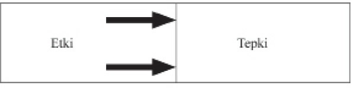

yaşlı kadının resmi vardı. Bizden kartlara bakmamızı, dikkatimizi
on saniye üzerinde yoğunlaştırmamızı, sonra da resimleri
geri vermemizi istedi. Sonra ekrana 28. sayfada gördüğünüz, her
iki resmin bileşimini yansıtarak öğrencilerden gördüklerini tanımlamalarını
istedi. Kart üstünde ilk önce genç kadın resmini görenlerin
neredeyse hepsi, ekrandakinin de aynı genç kadın olduğuna karar
verdi. Kartta ilk önce yaşlı kadın resmini görenlerin neredeyse hepsi
ise ekrandakinin yaşlı bir kadın olduğunu söyledi.
Öğretmen, daha sonra bir öğrenciden salonun diğer tarafında
oturan bir arkadaşına gördüklerini anlatmasını istedi.
İki genç karşılıklı
konuşurlarken iletişim sorunları çıktı ortaya.
“Ne demek, ‘yaşlı bir kadın?’ O en fazla 20 ya da 22
yaşında!”
“Yok canım! Herhalde şaka ediyorsun. 70’inde o.
Hatta belki
80’ine yakın!”
“Neyin var senin? Kör müsün? Bu hanım genç ve bakımlı.
Onunla seve seve çıkardım. Çok güzel!”
“Güzel mi? İhtiyar bir cadı o!”
Tartışma sürdü gitti. Sınıftaki öğrencilerin hepsi de doğruyu bildiğinden
emindi ve hiçbiri düşüncesinden vazgeçmiyordu.
Üstelik
bütün bu tartışmalar, öğrencilerin son derecede önemli bir avantajları
olmasına karşın başlamıştı: birçoğu deneyin başlangıcında aslında
başka bir bakış açısının olduğunu biliyordu; çoğumuzun hiçbir
zaman itiraf etmeyeceği bir şeydir bu. Yine de, başlangıçta yalnızca
birkaç öğrenci resmi gerçekten başka bir açıdan görmeye çalıştı.
Yararsız konuşmalardan sonra bir öğrenci ekrana yaklaşarak resimdeki
bir çizgiyi işaret etti. “İşte bu genç kadının gerdanlığı.”
Diğer
öğrenci, “Hayır, o yaşlı kadının ağzı,” dedi. Yavaş
yavaş belirli
bir farklılık gösteren noktalar üzerinde sakin bir biçimde konuşmaya
başladılar. Sonunda bir öğrenci, sonra da bir diğeri, her iki resimdeki
görüntülerin odağa alınmasıyla birdenbire gerçeği kavradı. Sınıfta
süregelen sakin, saygılı ve belirgin iletişim sayesinde sonunda
herkes diğerinin bakış açısını anlayabildi. Ancak başımızı çevirip
sonra tekrar döndüğümüz zaman, çoğumuz ilk on saniye içerisinde
görmeye koşul andığımız resmi görürüz.
Bireyler ve kuruluşlarla çalışırken, hem kişisel hem de kişiler
arası etkililiğe geniş çaplı bir açıklama getirdiği için sık sık bu algılama
deneyinden yararlanırım. Bu alıştırma, öncelikle koşul anma32
nın algılarımızı, paradigmalarımızı ne kadar güçlü bir biçimde etkilediğini
gösterir. On saniyelik bir süre nesneleri görüş
biçimimizi
böylesine güçlü bir biçimde etkileyebiliyorsa, yaşam boyu süren bir
koşul anma nelere yol açmaz ki? Yaşantımızdaki etkiler; aile, okul,
cemaat, iş çevresi, dostlar, meslektaşlar ve Kişilik Etiği gibi geçerli
toplumsal paradigmalar bizi sessizce, bilinçsizce etkilemiş, değer
yargılarımızın, paradigmalarımızın, zihinsel haritalarımızın biçimlenmesine
yardımcı olmuşlardır.
Ayrıca bu alıştırma, paradigmaların davranış ve tutumlarımızın
kaynağı olduğunu da gösterir. Onlar olmasa, kişisel bütünlük veya
dürüstlüğe sahip olamayız. Gördüğümüzden farklı bir biçimde konuşur
ve davranırsak, bütünlüğümüzü koruyamayız. O
bileşik resimde,
koşul anma sonucu belirgin biçimde genç bir kadın gören
yüzde 90’lık grupta yer alsaydınız, hiç kuşkusuz sokağın karşı tarafına
geçmesine yardım etmeniz gerektiğini düşünmezdiniz. O kadınla
ilgili tutumunuzun ve ona karşı davranışlarınızın, onu görüş
biçiminize uygun olması gerekirdi.
Bu, Kişilik Etiği’nin temel eksikliklerinden birini açıkça ortaya
koyar. Dış davranış ve tutumları değiştirmeye çalışmamız, o davranış
ve tutumların kaynağı olan temel paradigmaları incelememişsek,
uzun vadede pek işe yaramayacaktır.
Bu algılama alıştırması ayrıca, paradigmalarımızın diğer insanlarla
ilişkilerimizi ne kadar güçlü bir biçimde etkilediğini de gösterir.
Her şeyi açıkça ve nesnel olarak gördüğümüzü düşünürken,
yavaş yavaş başkalarının da onları eşit derecede açık ve nesnel olan
kendi bakış açılarıyla farklı bir biçimde gördüklerini anlamaya başlarız.
“Ayakta durduğumuz yer, oturduğumuz yere bağlıdır.”
Hepimiz cisimleri oldukları gibi gördüğümüzü, nesnel olduğumuzu
düşünürüz. Oysa bu doğru değildir. Biz dünyayı olduğu gibi
değil, olduğumuz gibi görürüz; ya da nasıl görmeye koşul anmışsak,
öyle. Gördüklerimizi tarif etmek üzere ağzımızı açtığımız anda, aslında
kendimizi, algılarımızı ve paradigmalarımızı tanımlarız.
Başkaları
bizimle aynı fikirde olmadıkları zaman, hemen onlarda bir
aksaklık olduğunu düşünürüz. Ama alıştırmanın da gösterdiği gibi,
kafaları çalışan samimi insanlar her şeyi farklı görürler; hepsi de
kendine özgü deneyim merceğinden bakar.
Bu, olgular yoktur anlamına gelmez. O deneyde, başlangıçta
kendilerini koşul andıran farklı resimlerden etkilenmiş
olan iki kişi,
üçüncü resme birlikte bakarlar. Şimdi ikisi de, tıpatıp aynı olgulara
–siyah çizgilere ve beyaz boşluklara– bakmaktadır ve ikisi de bunların
birer olgu olduğunu kabul edecektir. Ancak her birinin bu olguları
yorumlayış tarzı daha önceki deneyimleri yansıtır ve olgular,
yorumlardan ayrı olarak hiçbir anlam taşımaz.
Temel paradigmalarımızın, haritalarımız ya da varsayımlarımızın
ne kadar farkında olur ve kendi deneyimimizden ne derece
etkilendiğimizi anlarsak, o paradigmaların sorumluluğunu o kadar
fazla üstlenebiliriz. Onları inceler, gerçeklik kıstaslarına göre sınar,
başkalarını dinler, onların algılarına açık hale geliriz.
Böylece daha
geniş bir resme ve çok daha nesnel bir görüşe sahip oluruz.
PARADİGMA DEĞİŞİMİNİN GÜCÜ
Belki de bu algılama alıştırmasından kazanılacak en önemli içgörü,
paradigma değişimi alanındadır; yani birisinin sonunda bileşik
resmi başka bir biçimde “görmesi” üzerine yaşanan “Buldum!”
deneyimi diyebileceğimiz şeydedir. İnsan ilk algısına ne kadar bağlıysa,
“Buldum!” deneyimi de o kadar güçlü olur. Ansızın içinde bir
ışık yanar sanki.
Paradigma Değişimi terimini ilk kez Thomas Kuhn, son derece
etkili olan ve bir tür dönüm noktası sayılan Bilimsel Devrimlerin Yapısı
adlı yapıtında kul anmıştı. Kuhn, bilimsel alanda neredeyse her
önemli atılımın, ilk önce gelenekler, eski düşünce biçimleri, eski paradigmalarla
bağların koparılması anlamına geldiğini gösteriyor.
Ünlü Mısırlı astronom Batlamyus’a (Ptolemi) göre dünya, evrenin
merkeziydi. Ancak Kopernik merkeze Güneş’i yerleştirerek bir
“Paradigma değişimi” yarattı. Bir hayli direnç ve baskıya da neden
oldu. Birdenbire her şey başka türlü yorumlanmaya başladı.
Newton’un fizik modeli düzenli bir paradigmaydı ve modern
mühendisliğin hâlâ temelini oluşturuyor. Ama kısmiydi, tamamlan34
mamıştı. Olacakları öngörme ve açıklayıcılık açısından çok daha
üstün bir değeri olan Einstein modeli paradigma, yani görecelik paradigması
ise bilim dünyasında bir devrim yarattı.
Mikrop kuramı geliştirilinceye kadar pek çok kadın ve çocuk doğum
sırasında ölüyor ve hiç kimse bunun nedenini anlayamıyordu.
Askeri çarpışmalarda insanlar, ateş hatlarında maruz kalınan önemli
travmalardan çok, önemsiz yaralar ve hastalık yüzünden ölüyordu.
Ancak mikrop kuramı ortaya atılır atılmaz yepyeni ve daha iyi bir
paradigma, olanları anlamak için kul anılan daha ileri bir yöntem sayesinde
tıp alanında çarpıcı ve önemli gelişmeler kaydedildi.
Bugünkü Amerika Birleşik Devletleri de bir paradigma değişiminin
ürünüdür. Yüzyıl ar boyunca geleneksel hükümet anlayışı,
bir monarşiden ibaretti; kral arın tanrısal hakları vardı.
Sonra farklı
bir paradigma geliştirildi: Halkın halk tarafından ve halk için yönetilmesi.
Böylece bir anayasal demokrasi doğdu ve müthiş bir insan
enerjisi ile zekâsının önünü açarak dünya tarihinde benzeri bulunmayan
bir yaşam, özgürlük ve bağımsızlık, etki ve umut standartı
yaratıldı.
Bütün paradigma değişimleri olumlu yönde olmaz.
Gördüğümüz
gibi, Karakter Etiği’nden Kişilik Etiği’ne kayılması, gerçek başarı
ile mutluluğu besleyen o köklerden bizi uzaklaştırdı.
Ancak paradigma değişimleri bizi ister olumlu, ister olumsuz
yöne çeksin; ister birdenbire ister ağır ağır gelişsin, dünyaya farklı
bir gözle bakmamıza yol açar. Bu kaymalar güçlü bir değişim yaratır.
Paradigmalarımız doğru da olsa yanlış da, tutum ve davranışlarımızın,
sonuç olarak da başkalarıyla ilişkilerimizin kaynağıdır.
Bir pazar sabahı New York metrosunda başımdan geçen küçük
çaplı bir paradigma değişimini hatırlıyorum. Herkes sessizce oturuyordu.
Birtakım insanlar gazete okuyordu, bazıları düşüncelere dalmış,
bazıları da gözlerini kapatmış, dinleniyordu. Sakin ve huzurlu
bir ortamdı.
Sonra birdenbire, bir adam çocuklarıyla birlikte vagona bindi.
Çocuklar o kadar yaramaz ve gürültücüydü ki, hava birdenbire tamamen
değişti.
Adam, yanıma oturup gözlerini kapattı, durumdan habersiz gibiydi.
Çocuklar koşarak bağırıp çağırıyor, eşyaları fırlatıp atıyor,
hatta bazı yolcuların gazetelerini kapıyorlardı. Ama yanımda oturan
adam hiçbir şey yapmıyordu.
Öfkelenmemek zordu. Adamın, çocukların böyle vahşice koşuşmalarına
aldırmayacak ve bu konuda hiçbir şey yapmayacak, hiçbir
sorumluluk üstlenmeyecek kadar duyarsız olmasına inanamıyordum.
Metroda herkesin sinirlendiği bel iydi. Sonunda, bana olağanüstü
gelen bir sabırla ve kendimi tutarak adama dönüp: “Beyefendi,
çocuklarınız birçok kişiyi rahatsız ediyor, onlara biraz hâkim
olamaz mısınız?” dedim.
Adam, durumu henüz fark ediyormuş gibi bana bakarak usulca,
“Ah, çok haklısınız, bir şeyler yapsam iyi olacak.
Hastaneden geliyoruz.
Anneleri bir saat önce orada öldü. Ne düşüneceğimi bilemiyorum.
Galiba çocuklar da bununla nasıl baş edeceklerini bilemiyorlar,”
diye yanıtladı.
O anda neler hissettiğimi düşünebiliyor musunuz?
Paradigmam
değişime uğradı. Birdenbire her şeyi başka türlü gördüm. Başka türlü
gördüğüm için de başka türlü düşünmeye, başka türlü hissetmeye
ve başka türlü davranmaya başladım. Öfkem hemen geçti. Tutumumu
ya da davranışlarımı kontrol etme kaygısına kapılmama gerek
kalmadı. Yüreğim adamın acısıyla doldu. Şefkat ve merhamet duyguları
boşaldı içimden. “Demek karınız yeni öldü? Vah vah, çok
üzüldüm. Bana anlatabilir misiniz? Size nasıl yardım edebilirim?”
dedim. Her şey bir anda değişivermişti.
Pek çok insan, yaşamlarını tehdit eden bir bunalımla karşılaşıp
önem verdikleri şeylere ansızın bambaşka bir açıdan bakmaya başladıklarında;
ya da bir eş, anne-baba veya büyükanne, büyükbaba, yönetici ya da lider olarak yeni bir rol üstlendiklerinde, düşünce
tarzlarında buna benzer köklü bir değişim olur.
Kişilik Etiği ile haftalarca, aylarca, hatta yıl arca uğraşıp tutum
ve davranışlarımızı değiştirmeye çalışabilir, yine de her şeyi farklı
bir biçimde gördüğümüz anda kendiliğinden oluşan o değişim olgusuna
yaklaşmayı bile beceremeyebiliriz.
Artık bel i olan bir şey var: Hayatımızda nispeten önemsiz değişiklikler
yapmak istiyorsak, dikkatimizi uygun bir biçimde tutum
ve davranışlarımıza verebiliriz. Ancak çok önemli, büyük bir değişiklik
yapmak istiyorsak, o zaman temel paradigmalarımız üzerinde
çalışmamız gerekir.
Thoreau’nun dediği gibi: “Kötülüğün yapraklarını kesen her bin
kişiye karşılık, ancak bir kişi köküne saldırır.” Biz de yaşantımızda
çok önemli değişiklikler yapmak istiyorsak, o zaman tutum ve davranışımızın
yapraklarını kesmekten vazgeçerek kökler üzerinde, yani,
tutum ve davranışlarımızın kaynağı olan paradigmalar üzerinde
çalışmalıyız.
Kuşkusuz, bütün paradigma değişimleri birdenbire olmaz. Metrodaki
anlık içgörümün tersine, Sandra’yla benim oğlumuzla ilgili
paradigma değişimi deneyimimiz yavaş, zor ve temkinli bir süreçti.
Başlangıçta ona karşı yaklaşımımız, Kişilik Etiği alanında yıl arca
süren koşul anma ve deneyimlerimizin ürünüydü.
Anne-baba olarak
kendi başarımız konusunda inandığımız daha derin paradigmaların
bir sonucuydu. Ayrıca çocuklarımızın başarılarının da bir ölçütüydü.
Ancak o temel paradigmaları değiştirip her şeye başka açıdan baktığımız
zaman, hem kendimizde hem de durumda önemli değişiklikler
yapabileceğimizi gördük.
Oğlumuzu farklı bir biçimde görebilmek için, Sandra’yla farklı
olmamız gerekiyordu. Kendi karakterimizin gelişmesi ve güçlenmesine
yatırım yaparken, yeni paradigma da yaratılmış oldu.
Paradigmalar karakterlerden ayrılamaz. İnsan boyutunda, olmak
görmektir. Kendimizi değiştirmezsek, bakış açımızı değiştirme konusunda
fazla ilerleme kaydedemeyiz. Bunun tersi de geçerlidir.
O sabah metroda yaşadığım görünüşte anlık paradigma değişimi
deneyiminde bile, görüşümün değişmesi temel karakterimin bir sonucuydu
ve onun tarafından sınırlanmıştı.
Durumu kavrar kavramaz, o yas tutan, aklı karışmış
adamın
yanında sadece suçluluk ya da hafif bir üzüntü duyarak utanç do37
lu bir sessizlik içinde oturacak kişiler vardır kuşkusuz.
Öte yandan,
eminim ki başlangıçta bile daha duyarlı bir biçimde davranabilecek
kimseler de vardır. Adamın derin bir sorunla baş
başa olduğunu kavrayıp,
durumu anlamaya çalışarak ona yardım elini hemen uzatabilecek
kişilerdir bunlar.
Paradigmalar güçlüdür. Çünkü arkasından dünyayı gördüğümüz
merceği onlar yaratır. Değişim ister birdenbire olsun, ister ağır, temkinli
bir süreç içinde; paradigma değişimi, çok önemli bir değişikliğin
temel gücüdür.
İLKE MERKEZLİ PARADİGMA Karakter Etiği’nin temelinde şu düşünce yatar: Etkililiği yöneten
ilkeler vardır; bunlar, tıpkı fiziksel boyuttaki yerçekimi yasası
kadar gerçek, değişmez ve tartışılmaz bir biçimde “var olan” doğal
yasalardır.
Bu ilkelerin gerçekliği –ve etkisi– başka bir paradigma değişimi
deneyimiyle açıklanabilir. Bu olayı Denizcilik Enstitüsü’nün dergisi
Proceedings’de Frank Koch anlatmaktadır.
Eğitim filosuna tahsis edilmiş iki savaş gemisi birkaç gündür kötü
hava koşullarında manevra yapıyordu. Ben, en öndeki savaş
gemisinde
görevliydim ve hava kararırken köprüde nöbetteydim. Yer yer sis
vardı ve görüş alanı dardı. Bu nedenle komutan da köprüdeydi, bütün
faaliyetleri denetliyordu.
Karanlık bastıktan kısa bir süre sonra köprünün gözetleme yerinde
iskele tarafındaki nöbetçi haber verdi: “Işık. Baş sancak tarafında.”
Komutan seslendi: “Sabit mi, yoksa tornistan mı yapıyor?”
Nöbetçi, “Sabit, Komutanım,” diye cevap verdi. Bu, o gemiyle tehlikeli bir çarpışma rotası üzerinde olduğumuz anlamına geliyordu.
Komutan nöbetçiye emir verdi: “Gemiye sinyal gönder: Çarpışma
rotasındayız. Rotanızı 20 derece değiştirmenizi öneriyoruz.”
Karşıdan şu sinyal geldi: “Rotanızı 20 derece değiştirmeniz önerilir.”
Komutan, “Sinyal gönder,” dedi. “Ben komutanım. Rotayı 20
derece
değiştirin.”
Karşıdaki, “Ben deniz onbaşıyım, rotanızı 20 derece değiştirseniz
iyi olur,” diye yanıtladı.
Komutan bu arada iyice öfkelenmişti. Hırsla emretti. “Sinyal gönder!
Ben bir savaş gemisiyim. Rotanızı 20 derece değiştirin.”
Karşıdaki ışıklarla işaret verdi: “Ben bir deniz feneriyim.”
Rotayı değiştirdik.
Komutanın –ve bu olayı okurken bizim– yaşadığımız paradigma
değişimi, olayı tamamen farklı bir çerçeveye oturtuyor. Burada komutanın
kısıtlı algısının, gerçeğin yerini aldığını görebiliyoruz; bu,
sisler içinde ilerleyen kaptan için olduğu kadar, bizler için de, günlük
yaşantımızda anlaşılması zorunlu olan bir gerçekliktir.
İlkeler deniz fenerleri gibidir. Karşı konulamayacak doğal yasalardır.
Yönetmen Cecil B. deMil e, epik filmi On Emir’de yer alan
ilkeler konusunda şöyle söylemişti: “Bizim yasaları çiğnememiz
olanaksızdır. Biz yalnızca başımızı kaya gibi yasalara çarpıp kendimizi
çiğneyebiliriz.”
İnsanlar kendi yaşamlarına ve ilişkilerine, koşul anmalarının ve
deneyimlerinin sonucu olan paradigmalar ya da haritalar aracılığıyla
bakabilirler, ancak bu haritalar arazinin kendisi değildir. Bunlar
“öznel gerçeklik”tir. Sadece araziyi tanımlama girişimidir.
“Nesnel gerçeklik” ya da arazinin kendisi, insanların gelişmesini
ve mutluluğunu yöneten “deniz feneri” ilkelerinden oluşur. Bunlar
doğal yasalardır. Tarih boyunca her uygar toplumun yapısına katkıları
olmuştur. Süregelen ve başarıya ulaşan bütün ailelerle kurumların
köklerini bunlar oluşturur. Zihinsel haritalarımız araziyi ne kadar
doğru tarif ederse etsin, onun varlığını değiştirmez.
Derinlemesine düşünen ve toplumsal tarih evrelerini izleyen herkes,
bu tür ilkelerin ya da doğal yasaların var olduğunu hemen anlar.
Bu ilkeler sık sık yüzeye çıkar ve bir toplum içinde yaşayan insanlar,
onları kabul enip uyum sağlama derecelerine göre, ya ayakta kalıp
bir denge kurar, ya da parçalanıp yok olurlar.
Sözünü ettiğim ilkeler anlaşılması zor, gizli, çözümsüz ya da
“dinsel” düşünceler değildir. Bu kitapta öğretilen tek bir ilke bile,
kendiminki de dahil, belirli bir inanç ya da dine özgü değildir. Bu
ilkeler, hem yaşayan birçok büyük dinin, hem de sağlam toplumsal
felsefelerle ahlak sistemlerinin bir parçasıdır. Açık seçiktir ve herhangi bir kimse tarafından kolaylıkla onaylanabilir. Bu ilkeler ya
da yasalar insan durumunun, insan bilincinin, insan vicdanının bir
parçasıdır sanki. Toplumsal koşul anma ve ilkelere sadakatten bağımsız
olarak, hatta bu tür koşul ar ve sadakatsizlik nedeniyle uyuşturulmuş
veya bastırılmış olabilseler de, her insanda mevcut gibidirler.
Örneğin, eşitlik ve adalet kavramlarımızın kaynağını oluşturan
haklılık ilkesini düşünelim. Küçük çocuklar, tersine koşul anmalarına
yol açan deneyimleri olsa bile, doğuştan gelen bir haklılık duygusuna
sahip görünürler. Haklılığın birbirinden çok farklı tanımları
ve erişim yöntemleri olsa da, hemen hemen herkes bu kavramın
farkındadır.
Kişisel bütünlük ve dürüstlük ilkelerini kapsayan örnekler de
vardır. Bunlar, işbirliği ve uzun süreli kişisel ve kişilerarası gelişim açısından çok önemli olan güvenin temelini oluşturur.
Diğer bir ilke ise insanlık onurudur. ABD’nin Bağımsızlık Bildirisi’nde
yer alan temel kavram da bu değere ya da ilkeye değinir.
“Biz bu gerçeklerin açık seçik olduğunu iddia ediyoruz: İnsanlar
eşit yaratılmışlardır. Yaradan onlara vazgeçilemeyecek belirli haklar
lütfetmiştir. Bunların arasında yaşam, özgürlük ve mutluluk arayışı
da vardır.”
Bir başka ilke, hizmet ya da bir katkıda bulunma fikridir. Bir diğeri
ise kalite ya da mükemmel iktir.
Potansiyel ilkesi de vardır; birer cenin olduğumuz, büyüyüp gelişerek
gitgide daha fazla potansiyeli açığa çıkarabileceğimiz, çok
daha fazla yetenek kazanacağımız fikri. Potansiyele çok bağlı bir
diğer ilke ise büyümedir; potansiyeli açığa çıkarma, yetenek geliştirme
süreci ve buna eşlik eden sabır, bakım ve teşvik gibi ilkelere
olan gereksinim.
İlkeler, uygulamalar değildir. Uygulama belirli bir etkinlik ya da
eylemdir. Bir durumda işe yarayan bir uygulamanın bir diğerinde
etkili olacağı kesin değildir. İkinci çocuklarını da tıpkı birincisi gibi
büyütmeye çalışan anne-babalar bu gerçeği hemen onaylayacaktır.
Uygulamalar duruma özeldir; ilkeler ise evrensel geçerliliği olan
derin ve temel doğrulardır. Bireylerde, ailelerde, evliliklerde, her
türlü özel ve kamu kuruluşunda geçerlidirler. Bu doğrular benimsenerek
alışkanlık haline getirildiğinde, insanlara değişik durumlarla
başa çıkabilmeleri için geniş çapta farklı uygulamaları yaratma gücünü
verir.
İlkeler, değerler değildir. Bir hırsız çetesi bazı değerleri paylaşabilir,
ama sözünü ettiğimiz temel ilkelere aykırı davranır.
İlkeler
arazi, değerler ise haritalardır. Doğru ilkelere değer verdiğimiz zaman
hakikate ulaşırız; yani, her şeyi olduğu gibi görmemizi sağlayan
bilgiyi ediniriz.
İlkeler, insan davranışlarının kılavuzlarıdır; kalıcı ve sağlam bir
değere sahip oldukları kanıtlanmıştır. Temeli oluştururlar. Açık seçik
oldukları için de esas olarak tartışma götürmezler.
İlkelerin açık
seçik doğasını çabucak kavramanın bir yolu, onların karşıtı olan
şeylere dayanarak etkili bir yaşam sürdürmeye çalışmanın gülünçlüğünü
düşünmektir. Bir insanın haksızlık, hilebazlık, alçaklık, yararsızlık,
sıradanlık ya da yozlaşmışlığı, sürekli mutluluk ve başarı
için sağlam bir temel olarak benimseyebileceğini hiç sanmıyorum.
İnsanlar bu ilkelerin tanımlanma, belirlenme ya da uygulanma tarzı
hakkında tartışabilirler, ancak bel i ki bu ilkelerin bilincinde ve farkındadırlar.
Harita ya da paradigmalarımız bu ilkelere ya da doğal yasalara
ne kadar uyumlu hale getirilirse, o kadar doğru ve yararlı olurlar.
Doğru haritalar, hem kişisel hem de toplumsal etkililiğimizi pekiştirirler.
Bu konuda, tutum ve davranışlarımızı değiştirmek için göstereceğimiz
her türlü çabadan çok daha güçlüdürler.
GELİŞİM VE DEĞİŞİM İLKELERİ
Kişilik Etiği’nin parlaklığı ve kitlelere çekici görünmesinin nedeni
şudur: Kişisel açıdan etkili olmayı ve başkalarıyla derin ilişkiler
kurmayı sağlayan çalışma ve gelişme gibi doğal süreçlerden geçmeden,
nitelikli bir yaşam kurmayı mümkün kılacak kolay ve çabuk
bir yöntem olduğu sanılır.
Bu, özü olmayan bir simgedir. “çalışmadan köşeyi dönmeyi” vaat
eden, “kısa yoldan zengin olma” düzenidir. Hatta bazen işe yarıyormuş
gibi de görünebilir; ama düzenbaz, düzenbaz olarak kalır.
Kişilik Etiği yanıltıcı ve kandırıcıdır. Tekniklerinden ve çabuk
çözümlerinden yararlanarak yüksek nitelikli sonuçlar almaya çalışmak,
ancak Detroit haritasını kul anarak Chicago’da bir yere gitmeye
çalışmak kadar başarılı olur.
Kişilik Etiği’nin kökleri ve meyveleri konusunda zeki bir gözlemci
olan Erich Fromm şöyle diyor:
Günümüzde kendisini tanımayan, anlamayan, robot gibi davranan
bir birey çıkar karşımıza. Bu insanın tanıdığı tek kişi, olması gereken
kişidir. Anlamsız gevezelikleri iletişim sağlayacak konuşmanın, yapay
gülümsemesi gerçek kahkahanın, donuk çaresizliği ise gerçek acının
yerini almıştır. Bu birey hakkında iki şey söylenebilir: Birincisi, bireysellik ve aklına estiği gibi davranmak gibi giderilmesi olanaksız
görünen kusurları vardır. İkincisi, yeryüzünde dolaşan bizim gibi milyonlarca
insandan pek de farklı biri değildir.
Her türlü yaşamda, birbirini takip eden büyüme ve gelişme evreleri
vardır. Bir çocuk dönmeyi, doğrulup oturmayı, emeklemeyi,
sonra da yürüyüp koşmayı öğrenir. Her aşama önemlidir ve zaman
alır. Hiçbirisi atlanamaz.
İster piyano çalmayı öğrenmek olsun, ister bir iş
arkadaşıyla etkili
bir iletişim kurmak; yaşamın bütün evrelerinde, bütün gelişme
alanlarında geçerlidir bu. Bireyler, evlilikler, aileler ve kurumlarda
da öyle.
Fiziksel şeyler söz konusu olduğunda, bu süreç olgusunu ya da
ilkesini bilir ve kabul ederiz; ama bunun duygusal alanlarda, insan
ilişkilerinde, hatta kişisel karakter konusunda anlaşılması daha az
yaygın ve daha zordur. Anlasak bile, kabul edip bununla uyum içinde
yaşamak, daha da ender görülen ve zor bir şeydir.
Bu nedenle
daha az zaman ve çaba harcamak için bu yaşamsal adımlardan bazılarını
atlayabilmemizi sağlayacak kestirme yol ar ararız bazen; dilediğimiz
sonuca bu şekilde varmak isteriz.
Ancak, büyüme ve gelişmemizde doğal bir süreci atlayarak kestirmeden
gitmeye kalktığımız zaman ne olur? Sıradan bir tenisçi olduğunuz
halde daha iyi bir izlenim bırakmak için ustalarla oynamaya
karar verirseniz, sonuç ne olur? Olumlu düşünce tek başına, bir
profesyonel e etkili bir biçimde rekabet etmenizi sağlayabilir mi?
Piyanoya yeni başlamış olmanıza karşın, dostlarınızı konser verecek
düzeyde olduğunuza inandırırsanız ne olur?
Bu soruların yanıtları çok bel idir. Gelişim sürecine karşı gelmek,
aldırış etmemek ya da kestirmeden gitmeye kalkışmak olanaksızdır.
Doğaya aykırıdır ve bu tür bir kestirme yol aramak, sadece
düş kırıklığı ve çaresizliğe neden olur.
Herhangi bir alanda on derecelik bir ölçek üzerinde ikinci düzeydeysem
ve beşe çıkmayı istiyorsam, önce üçüncü düzeye doğru
ilerlemem gerekir. “Bin kilometrelik bir yolculuk ilk adımla başlar”
ve sonuca adım adım ulaşılır.
Bir soru sorarak ya da bilgisizliğinizi açıklayarak öğretmeninize
hangi düzeyde olduğunuzu bildirmezseniz, öğrenemez ya da gelişemezsiniz.
Uzun süre rol yapamazsınız, er ya da geç foyanız ortaya
çıkar. Çoğu zaman bilgisizliğin kabulü, eğitimimiz konusunda atacağımız
ilk adımdır. Thoreau’nun öğrettiği gibi: “Durmadan bilgimizi
kul anırken, gelişmemiz için gerekli olduğu şekilde, bilgisizliğimizi
nasıl hatırlayabiliriz?”
Bir olay anımsıyorum: Bir dostumun iki kızı gözyaşları içinde
bana gelerek, babalarının sertliğinden ve anlayışsızlığından yakınmışlardı.
Olacaklardan korktukları için anne-babalarına açılamıyorlardı.
Oysa sevgi, anlayış ve rehberliğe fazlasıyla ihtiyaçları vardı.
Babalarıyla konuştum ve olup bitenlerin farkında olduğunu anladım.
Ne var ki sinirli olduğunu kabul etmesine karşın, bunun sorumluluğunu
yüklenmeye yanaşmıyordu. Duygusal gelişim düzeyinin
düşük olduğunu da dürüstçe kabul edemiyordu.
Değişikliğe doğru
ilk adımı atmak, gururunun kaldıramayacağı bir şeydi.
Bir eşle, çocuklar, dostlar ya da iş arkadaşlarıyla etkili bir iletişim
kurabilmek için dinlemeyi öğrenmeliyiz. Bunun için de duygusal
açıdan güçlü olmamız gerekir. Dinlemek sabır, açıklık ve anlama
isteğini içerir ve bunlar karakterin çok gelişmiş
nitelikleridir. Düşük
bir duygusal düzeyden harekete geçip yüksek düzeyde öğütler vermek
ise çok daha kolaydır.
Tenis oynamak ya da piyano çalmakta gelişim düzeyimiz bel idir.
Bu konularda rol yapmak olanaksızdır. Ama karakter ve duygusal
gelişim konusunda aynı şey söylenemez. Bir yabancının ya
da bir iş arkadaşımızın karşısında “rol yapıp” onu “kandırabiliriz.”
Pozlar takınabiliriz. Bir süreliğine, en azından başkalarıyla birlikteyken
bunu sürdürebiliriz. Hatta kendimizi bile kandırabiliriz.
Ama
bence çoğumuz, derinlerde nasıl biri olduğunu bilir; birlikte yaşadığımız,
birlikte çalıştığımız kişilerin de bunu bildiğine inanıyorum.
İş dünyasında, bu doğal büyüme sürecinde kestirmeden gitmeye
kalkışmanın sonuçlarına sık sık tanık oldum.
Yöneticiler, güçlü
konuşmalar, gülümseme dersleri ve dış
müdahalelerle, ya da şirketleri
birleştirme, satın alma, dostça ya da düşmanca ele geçirme gibi
yöntemlerle, gelişmiş üretkenlik, kalite, moral ve müşteri hizmetinden
oluşan yeni bir kültürü “satın almaya” çalışıyorlar. Ama bu
arada, bu tür manevraların neden olduğu güvensizlik ortamını göz
ardı ediyorlar. Bu yöntemler işe yaramadığı zaman da, etkili olacak
başka Kişilik Etiği teknikleri arıyor ve tam bir güven kültürü yaratmanın
temeli olan doğal ilke ve süreçleri sürekli görmezden gelip
ihlal ediyorlar.
Ben de bir baba olarak yıl ar önce bu ilkeyi ihlal ettiğimi hatırlıyorum.
Üç yaşındaki küçük kızımın doğum günü partisine katılmak
için eve döndüm. Kızım ön odada bir köşeye büzülmüştü. Bütün
armağanları meydan okurcasına kucaklamış, diğer çocukların bunlarla
oynamalarına izin vermiyordu. Fark ettiğim ilk şey, odadaki
birkaç anne-babanın bu bencilce gösteriyi izledikleri oldu. Utandım,
hem de çok utandım, çünkü o sırada üniversitede insan ilişkileri ko44
nusunda ders veriyordum. Bu anne-babaların beklentilerini biliyor
ya da en azından hissediyordum.
Odanın havası gerçekten gergindi. Çocuklar el erini uzatarak
küçük kızımın etrafını sarmış, biraz önce verdikleri armağanlarla
oynamak istiyorlardı. Kızım ise bu istekleri sertçe reddediyordu.
Kendi kendime, “Kesinlikle kızıma paylaşmayı öğretmeliyim. Paylaşmanın
değeri, inandığımız en temel şeylerden biridir,”
dedim.
Önce basit bir istekte bulundum: “Hayatım, arkadaşlarının sana
verdikleri oyuncakları onlarla paylaşır mısın lütfen?”
Kısaca, “Olmaz,” diye karşılık verdi.
İkinci yöntemim, biraz mantık yürütmek oldu: “Hayatım, onlar
senin evindeyken oyuncaklarını paylaşmayı öğrenirsen, sen de onların
evine gittiğinde hepsi oyuncaklarını seninle paylaşır.”
Yine hemen, “Olmaz,” diye yanıtladı.
Utancım artıyordu. Çünkü kızımı etkileyemediğim ortadaydı.
Üçüncü yöntem olarak rüşveti denedim. Alçak bir sesle, “Hayatım,
oyuncaklarını onlarla paylaşırsan, özel bir sürprizim var. Sana çiklet
vereceğim,” dedim.
Kızım bağırdı: “Ben çiklet istemiyorum!”
Artık öfkelenmeye başlıyordum. Dördüncü yöntem olarak korku
ve tehdide başvurdum: “Oyuncaklarını paylaşmazsan, başın gerçekten
derde girer!”
Kızım, “Bana ne!” diye haykırdı. “Bu oyuncaklar benim! Onları
kimseyle paylaşmak zorunda değilim!”
Sonunda güç kul andım. Oyuncaklardan bazılarını alarak diğer
çocuklara verdim. “Alın çocuklar, bunlarla oynayın!”
Belki de kızımın oyuncakları vermeden önce onlara sahip çıkma
deneyimine gereksinimi vardı. (Aslında, bir şeye sahip değilsem,
onu gerçekten verebilir miyim?) Babasının duygusal olgunluk düzeyinin
ona bu deneyimi yaşatacak kadar yüksek düzeyde olması
gerekiyordu.
Ancak o sırada, oradaki anne-babaların hakkımdaki düşüncelerine,
kızımın ve aramızdaki ilişkinin sağlamlaşıp gelişmesinden daha
fazla değer veriyordum. Önyargıyla haklı olduğuma karar vermiş45
tim. Kızım oyuncaklarını paylaşmalıydı, bunu yapmadığı için de
hatalıydı.
Belki de ondan yüksek düzeyde bir anlayış
beklememin nedeni
sadece, o sırada kendi ölçeğimde düşük bir düzeyde olmamdı. Sabır
ve anlayış göstermek istemiyordum, ya da bunu yapacak durumda
değildim. Bu nedenle kızımın bir şeyler vermesini istiyordum. Kusurumu
dengelemek için, konumum ve otoritemden ödünç kuvvet
alarak istediğimi yapması için kızımı zorluyordum.
Oysa ödünç kuvvet almak, zayıflığa neden olur. Ödünç alan kişide
zayıflığa yol açmasının nedeni, işlerin yapılması için dış etkenlere
bağımlılığı pekiştirmesidir. Boyun eğmek zorunda bırakılan
kimsede de zayıflığa yol açar. Bağımsız akıl yürütme, büyüme ve
iç disiplinin gelişimini durdurur. Son olarak, ilişkinin zayıflamasına
yol açar. İşbirliğinin yerini korku alır ve her iki taraf da istediği gibi
hareket ederek savunmaya geçer.
Ödünç alınan kuvvetin kaynağı –örneğin iri yapı ya da fiziksel
güç, mevki, otorite, sicil, statü simgeleri, görünüş ya da geçmişteki
başarılar– değiştiği ya da yok olduğu zaman ne olur?
Eğer daha olgun olsaydım, kendi içsel gücüme – paylaşım ve gelişim
anlayışıma, sevme ve özen gösterme yeteneğime– güvenir ve
kızımın oyuncaklarını paylaşmak isteyip istemediği konusunda serbest
bir seçim yapmasına izin verirdim. Belki onunla mantıklı bir
biçimde konuşmaya çalıştıktan sonra çocukların dikkatini ilginç bir
oyuna çeker ve kızımı o duygusal baskıdan kurtarabilirdim. Çocukların
gerçekten sahip olma duygusunu tattıktan sonra eşyalarını çok
doğal bir biçimde, içtenlikle ve özgürce paylaştıklarını öğrendim.
Edindiğim deneyimlere göre, bazı zamanlar öğretmeye uygundur,
bazıları ise değildir. İlişki gerginleştiği ve ortam duygu yüklü
olduğu zaman, ders verme girişimi çoğu zaman bir çeşit yargılama
ve reddetme olarak algılanır. Ama ilişki iyi olduğu sırada çocuğu
usulca, tek başına bir kenara çekip, onunla öğretilen şey ya da değer
üzerinde tartışmak çok daha etkilidir. Belki de o gün, bunu yapabilmek
için gereken duygusal olgunluk düzeyim, sabretme ve kendimi
denetleme gücümü bastıracak kadar düşüktü.
Belki de sahip olma duygusunun, içtenlikle paylaşma isteğinden
önce gelmesi gerekiyor. Evliliklerinde ve ailelerinde mekanik bir
biçimde veren, ya da vermek ve paylaşmak istemeyen pek çok kişi,
kendine sahip olma, kendi kimlik ve değerini kavrama deneyimini
hiç yaşamamış olabilir. Çocuklarımızın büyümelerine tam anlamıyla
yardım etmek, sahip olmayı öğrenmelerine izin verecek kadar sabırlı
olmanın yanı sıra, vermenin değerini öğretecek kadar akıl ıca
davranmayı ve bizzat örnek oluşturmayı da içerir.
SORUNU GÖRÜŞ BİÇİMİMİZ, SORUNUN KENDİSİDİR
İnsanlar sağlam ilkeleri temel alan birey, aile ve kurumların yaşamında
güzel olayların geliştiğini gördükleri zaman meraklanırlar.
Bu tür bir kişisel güç ve olgunluk, böylesi bir aile birliği ve ekip çalışması,
kolay uyum sağlayabilen ve sinerjiye dayalı bir kurumsal
kültür onlarda hayranlık uyandırır.
Hemen dile getirdikleri istek, temel paradigmalarını açıkça ortaya
koyar: “Bunu nasıl başarıyorsunuz? Tekniğini bana da öğretin.”
Aslında söylemek istedikleri şudur: “İçinde bulunduğum durumda
acıyı hızla giderecek bir çözüm bulun ya da öğüt verin bana.”
İsteklerini karşılayacak ve bunları kendilerine öğretecek insanları
bulurlar; kısa bir süre için, beceri ve teknikler işe yarıyormuş gibi
de görünebilir. Bunlar toplumsal aspirin ve yara bantları aracılığıyla
yüzeysel ya da ağır sorunlardan bazılarını ortadan kaldırabilir.
Ama temeldeki kronik durum aynen kalır ve er ya da geç, acil
çözüm bekleyen yeni ağır belirtiler çıkar ortaya.
İnsanlar anlık çözümlere
başvurup acil sorunlara ve acıya odaklandıkça, bu yaklaşım
tarzı temeldeki kronik durumu daha da ağırlaştırır.
Sorunu görüş biçimimiz, sorunun kendisidir.
Bu bölümün girişinde yer alan bazı hususlara ve Kişilik Etiği
bağlamında düşünmenin yarattığı etkiye bir daha bakın.
Etkili yönetim konusunda kurs üstüne kursa katıldım.
Yanımda çalışan
insanlardan çok şey bekliyorum. Onlara dostluk göstermek ve
düzgün davranmak için çok çaba harcıyorum. Ama bana sadık olduklarını
hissetmiyorum. Günün birinde hastalanıp evde kalacak
olsam, zamanın çoğunu çay-kahve içip gevezelik ederek geçireceklerini
düşünüyorum. Neden onlara bağımsız ve sorumlu olmayı öğretemiyorum?
Ya da böyle olabilecek insanları bulamıyorum?
Kişilik Etiği bana personelimi hizaya sokacak ve el erindeki şeyi
takdir etmelerini sağlayacak –her şeyi sarsmak, kafaları uçurmak gibi– dramatik şeyler yapabileceğimi; ya da onları işe bağlayacak bir
motivasyon eğitimi programı bulabileceğimi; hatta daha iyi çalışacak
yeni insanları işe alabileceğimi söylüyor.
Ancak görünüşte sadakatten uzak davranışlarının altında, bu
personelin beni sorguluyor olması mümkün mü?
Onların çıkarını
gözetecek şekilde hareket ettiğimden kuşku mu duyuyorlar? Kendilerine
mekanik nesneler gibi davrandığımı mı hissediyorlar?
Bunda
gerçek payı olabilir mi?
Kalbimin derinliklerinde onları gerçekten böyle mi görüyorum?
Yanımda çalışan insanlara bakış tarzım sorunun bir parçası olabilir
mi?
Yapılacak çok iş var. Üstelik zaman hiç yeterli değil.
Kendimi bütün
gün baskı altında ve savaşır gibi hissediyorum. Her gün! Haftanın
yedi günü! Zaman yönetimi seminerlerine katıldım ve altı değişik
planlama sistemini denedim. Onların biraz yardımı oldu, ama yine
de istediğim gibi mutlu, verimli ve huzurlu bir yaşam sürdüğümü
hissetmiyorum.
Kişilik Etiği bana bir yerlerde bir şeyler olması gerektiğini söylüyor:
Bütün bu baskılarla daha verimli bir biçimde başa çıkmama
yardım edecek yeni bir düzenleyici ya da bir seminer.
Ama acaba sorunun yanıtı verimlilik olmayabilir mi?
Daha az
zamanda daha çok iş yapmak durumu değiştirir mi?
Yoksa bu yalnızca
hayatımı kontrol ediyormuş gibi görünen insanlara ve koşul ara
tepki verme hızımı mı artırır?
Daha derinlemesine, daha esaslı bir biçimde görmem gereken bir
şey mi var acaba? Zamanımı, yaşantımı ve kendi doğamı görüş biçimimi
etkileyen, kendi içimdeki bir paradigma olabilir mi bu?
Evliliğim tatsızlaştı. Kavga ettiğimiz filan yok, sadece artık birbirimizi
sevmiyoruz. Danışmanlarla görüştük. Başka şeyler de denedik.
Ama nedense o eski duygularımızı bir türlü canlandıramıyoruz.
Kişilik Etiği bana, yeni bir kitap ya da insanların bütün duygularını
dile getirebileceği bir seminer olması gerektiğini söylüyor. Bu,
eşimin beni daha iyi anlamasına yardımcı olurdu.
Ama bunun da
yararı olmayabilir. Bana gereken sevgiyi belki de yalnızca yeni bir
ilişki sağlayacaktır.
Yoksa gerçek sorun eşim olmayabilir mi? Eşimin zayıf yanlarını
kendim körükleyip, yaşantımı bana davranış tarzının bir işlevi haline
mi getiriyorum acaba?
Eşim konusunda, evlilik konusunda ve gerçek sevginin ne olduğu
konusunda sorunu besleyen temel bir paradigmam mı var?
Kişilik Etiği paradigmalarının sorunları görüş
biçimimiz kadar,
onları çözme girişimlerimizi de ne kadar köklü bir biçimde etkilediğini
görebiliyor musunuz?
Farkına varılsın ya da varılmasın, pek çok insan Kişilik Etiği’nin
boş vaatleri yüzünden düş kırıklığına uğruyor. Ülke içi gezilerimde
ve kuruluşlarla yaptığım çalışmalarda şunu gözlemliyorum: Uzun
vadeli düşünen yöneticiler, moral yükseltici psikolojiden ve eğlenceli
öykülerle yavan sözlerden başka paylaşacak şeyleri olmadan
“motivasyon” konuşmaları yapan kişilerden artık bıkmışlar.
İşin özüne inmek, süreci yaşamak istiyorlar. Aspirin ve yara bandının
ötesinde bir şey bekliyorlar. Temeldeki kronik sorunları çözmek
ve uzun vadeli sonuçlar veren ilkelerle ilgilenmek istiyorlar.
YENİ BİR DÜŞÜNCE DÜZEYİ
Albert Einstein’ın dediği gibi, “Karşılaştığımız önemli sorunlar,
onları yarattığımız sırada sahip olduğumuz düşünce düzeyiyle çözülemez.”
Çevremize ve kendi içimize baktıkça ve Kişilik Etiği’yle yaşayıp
etkileşimde bulunurken yaratılan sorunları gördükçe, bunların
yaratılmış oldukları yüzeysel düzeyde çözülemeyecek kadar esaslı
ve derin sorunlar olduklarını anlamaya başlarız.
Bu derin konuları çözmek için yeni ve daha derin bir düşünce
düzeyine –etkili insan ve etkileşim alanını doğru tanımlayan ilkelere
dayalı bir paradigmaya– ihtiyacımız vardır.
Etkili İnsanların Yedi Alışkanlığı da, bu yeni düşünce düzeyi
üzerinedir. Kişisel ve kişiler arası etkililik konusunda ilke merkezli,
karaktere dayalı, “içten dışa” diye tanımlanacak bir yaklaşımdır.
“İçten dışa”, işe ilk önce kendinizle; daha da köklü bir biçimde,
en iç kısmınızla –kendi paradigmalarınız, karakteriniz ve dürtülerinizle– başlamanız anlamına gelir.
Bu yaklaşım şöyle söyler: Mutlu bir evliliğiniz olsun istiyorsanız,
pozitif enerji yayan, negatif enerjiyi pekiştirmek yerine onu dışlayan
biri olun. Daha cana yakın, uyumlu bir ergen çocuğunuz olsun
istiyorsanız, daha anlayışlı, empatik, tutarlı, sevecen bir anne ya da
baba olun. Daha rahat ve özgür bir işiniz olsun istiyorsanız, daha
sorumlu, daha yardımsever, daha fazla katkıda bulunan bir çalışan
olun. Size güvenilmesini istiyorsanız, güvenilir bir insan olun. Yeteneklerinizin
kabul görmesini, yani ikincil büyüklüğü istiyorsanız, önce birincil büyüklüğe, yani karaktere odaklanın.
“İçten dışa” yaklaşımı, genel zaferlerden önce özel zaferlerin
geldiğini; kendi kendimize söz verip tutmamızın, başkalarına söz
verip tutmamızdan önce geldiğini söyler. Kişiliği karakterin önüne
almanın, kendimizi geliştirmeden başkalarıyla olan ilişkilerimizi
geliştirmeye çalışmanın boşuna olduğunu açıklar.
“İçten dışa” bir süreçtir. İnsanın gelişmesini ve ilerlemesini denetleyen
doğal yasalara dayalı bir sürekli yenilenme sürecidir.
Sizi
sorumlu bağımsızlığın ve etkili karşılıklı bağımlılığın daha üst derecelerine
götürecek, yükselen bir büyüme sarmalıdır.
Pek çok insanla çalışma fırsatını buldum; olağanüstü insanlarla,
yetenekli insanlarla, mutlu olmayı ve başarıya ulaşmayı çok isteyen,
arayış halinde olan, acı çeken insanlarla. İş adamları, üniversite
öğrencileri, cemaatler ve sivil topluluklar, aileler ve evli çiftlerle
çalıştım. Bütün bu deneyimlerim sırasında dıştan içe yaklaşımıyla
sorunların kalıcı çözümlerine, kalıcı mutluluk ve başarıya ulaşıldığını
hiç görmedim.
“Dıştan içe” paradigmasının sonucu olarak hareketsiz kalan ve
kendilerini kurban gibi hisseden insanlar gördüm.
Bütün dikkatlerini, kendi âtıl durumlarının sorumlusu olduğunu düşündükleri koşul ara
ve diğer insanların zayıf yönlerine veriyorlardı. Eşlerin birbirini
değiştirmeye çalıştığı, her iki tarafın da diğerinin “günahlarını” itiraf
ettiği, karşısındakini hizaya sokmaya çalıştığı mutsuz evlilikler
gördüm. İnsanları güvene dayalı temel gerçekten varmış gibi davranmaya
zorlayacak yasaların yaratılması için müthiş bir zaman ve
enerjinin harcandığı iş yönetimi kavgalarına tanık oldum.
Ailemizin bazı üyeleri yeryüzünün “en sıcak” üç bölgesinde yaşadılar:
Güney Afrika, İsrail ve İrlanda. Bu bölgelerin her birinde
süregelen sorunların kaynağının, sosyal dıştan içe paradigmasının
egemenliği olduğuna inanıyorum. Bu toplulukların hepsi de, sorunun
“dışarıda bir yerde” olduğu ve “onlar” (yani ötekiler) “hizaya
geldikleri” ya da birdenbire “ortadan kalktıkları”
takdirde sorunun
çözüleceğini düşünüyor.
İçten dışa yaklaşımının çoğu kişi için çarpıcı bir paradigma olmasının
büyük orandaki nedeni, koşul anmanın güçlü etkisi ve günümüzde
geçerli olan Kişilik Etiği’ne dayalı toplumsal paradigmadır.
Ancak kendi deneyimlerim –hem kişisel olanlar, hem de binlerce
kişiyle çalışırken edindiklerim– ve tarihteki başarılı insanlarla toplumlar
üzerinde yaptığım dikkatli incelemeler sonucunda şu kanıya
vardım: Yedi Alışkanlığın içerdiği ilkelerden birçoğu zaten içimizde,
vicdanımızda ve sağduyumuzda mevcuttur. Onları fark edip geliştirebilmek
ve en derin kaygılarımızı gidermek amacıyla kul anabilmek
için farklı düşünmemiz, paradigmalarımızı daha yeni, derin
ve “içten dışa” bir düzeye kaydırmamız gerekir.
Bu ilkeleri anlayıp yaşantımızla bütünleştirmek için içtenlikle
çaba harcarken, T.S. Eliot’un şu gözleminin doğruluğunu tekrar tekrar
keşfedeceğimize inanıyorum:
Araştırma yapmaktan vazgeçmemeliyiz; bütün araştırmalarımızın
sonucu, başladığımız yere varmak ve bu yeri ilk kez tanımak
olacaktır.
Sürekli yaptığımız şey neyse, biz de oyuz.
O halde mükemmellik bir edim değil, bir alışkanlıktır.
ARİSTOTELES
Karakterimiz, temelde
alışkanlıklarımızdan oluşur. “Düşünce ek, eylem biç; eylem ek, alışkanlık biç; alışkanlık ek, karakter
biç; karakter ek, kader biç,” der özdeyiş.
Alışkanlıklar yaşamımızdaki güçlü etkenlerdir. Tutarlı ve çoğunlukla
bilinçdışı kalıplar oldukları için de, her gün sürekli olarak
karakterimizi ortaya koyar ve etkili ya da etkisiz olmamıza yol
açarlar.
Büyük eğitimci Horace Mann’ın bir zamanlar söylediği gibi,
“Alışkanlıklar bir halata benzer. Her gün bir ilmik daha atarız ve çok
geçmeden koparılamaz hale gelir.” Ben, bu sözlerin son bölümüne
katılmıyorum. Koparılabileceğini biliyorum.
Alışkanlıklar öğrenilir
de, unutulur da. Ayrıca kolay ve anlık bir çözüm olmadığını da biliyorum.
Bir süreç ve müthiş bir bağlılık gerektirir.
Aramızdan Apol o I ’nin aya yaptığı yolculuğu izlemiş
olanlar,
insanın ilk kez ayda yürüdüğünü, sonra da dünyaya döndüğünü görünce,
hayretten donup kaldı. “Olağanüstü” ve “inanılmaz”
gibi görkemli
sözcükler o çok önemli günleri tarif etmekte yetersizdi. Ama
o astronotlar aya erişebilmek için dünyanın muazzam yerçekiminden
kopmak zorundaydılar. “Yerden kalkış”ın ilk birkaç dakikası
ve yolculuğun ilk birkaç milinde, yarım milyon mili aşmakla geçen
birkaç günlük süreye göre daha fazla enerji harcanmıştı.
Alışkanlıkların da müthiş –çoğu kişinin farkında olduğu, ya da
kabul etmek istediğinin ötesinde– bir yerçekimi vardır. Etkili olmanın
temel ilkelerini çiğneyen sürüncemede bırakmak, sabırsızlık,
eleştiricilik ya da bencil ik gibi derinlerde yatan alışılmış eğilimleri
koparıp atmak için biraz irade gücü ve yaşantımızda yapacağımız
birkaç küçük değişiklikten daha fazlası gerekir.
“Yerden kalkış”,
müthiş bir çaba ister; ama yerçekiminin etkisinden kurtulduğumuz
an, özgürlüğümüz yepyeni bir boyut kazanır.
Bütün doğal güçler gibi, yerçekimi hem bizimle birlikte, hem de
bize karşı çalışır. Bazı alışkanlıklarımızın yerçekimi, şu anda gitmek
istediğimiz yere erişmemizi engel iyor olabilir. Ama dünyamızı bir
arada, gezegenleri yörüngelerinde tutan ve evrenin düzenini koruyan
da, yine yerçekimidir. Çok büyük bir güçtür bu ve etkili bir biçimde
kul anırsak, alışkanlığın yerçekimi yaşamda etkili olmak için
gereken bağlılık ve düzeni yaratabilir.
“ALIŞKANLIKLAR” TANIMLANIYOR
Burada, alışkanlığı bilgi, beceri ve arzunun kesişmesi olarak tanımlayacağız.
Bilgi kuramsal paradigmadır; yani, yapılması gereken şey ve
nedeni. Beceri, nasıl yapılacağıdır. Arzu ise, motivasyondur; yani,
yapma isteği. Bir şeyi yaşantımızda alışkanlık haline getirmek istiyorsak,
üçüne de sahip olmamız gerekir.
İş arkadaşlarım, eşim ya da çocuklarımla ilişkilerimde, onlara
durmadan ne istediğimi söyler ve hiçbir zaman kendilerini tam
olarak dinlemezsem, etkili olmayabilirim. İnsan ilişkilerinin doğru
ilkelerini arayıp bulmadıkça, dinlemem gerektiğini bile bilmeyebilirim.
Başkalarıyla etkili biçimde iletişim kurmak için onları dinlemem
gerektiğini bilsem bile, bu beceriye sahip olmayabilirim. Bir başka
insanı derin bir dikkatle nasıl dinleyeceğimi bilmeyebilirim.
Ancak dinlemem gerektiğini ve nasıl dinleyeceğimi bilmem de
yeterli değildir. Dinlemek istemedikçe, arzu duymadıkça, bu, yaşan55
tımda bir alışkanlık halini alamaz. Bir alışkanlık yaratmak her üç
boyutta çaba harcamayı gerektirir.
Olmak/görmek değişimi, yukarıya doğru uzanan bir süreçtir;
olmak, görmeyi değiştirirken, görmek de olmayı değiştirir ve yükselen
gelişme sarmalında ilerledikçe, böylece sürer gider.
Bilgi, beceriler
ve arzu üzerinde çalışarak, yıl ar boyunca belki de yapay bir
güvenlik kaynağı olan eski paradigmalarla bağlarımızı koparabiliriz.
Böylece kişisel ve kişilerarası etkililik konusunda yeni düzeylere
erişebiliriz.
Bu süreç bazen acı verebilir. Daha yüksek bir amacın; şimdi istediğinizi
sandığınız şeyi daha sonra isteyeceklerinizin ardında ikin-
ETKİLİ ALIŞKANLIKLAR
İçsel eştirilmiş ilkeler ve davranış
ci plana atmaya razı olmanın harekete geçirdiği bir değişimdir bu.
Ama “varlığımızın hedefi ve tasarımı” olan mutluluğu üretir. Mutluluk,
en azından kısmen, şimdi istediğimiz şeyi ileride isteyeceklerimiz
uğruna feda etme arzusu ve yeteneğinin meyvesi olarak tanımlanabilir.
SÜREKLİ OLGUNLAŞMA MODELİ
Yedi Alışkanlık, tek tek ya da parçalar halinde moral yükseltici
formül erden oluşan bir dizi değildir. Bunlar, doğal gelişim yasalarıyla
uyum halinde, kişisel ve kişilerarası etkililiğin gelişmesinde
sürekli artış gösteren, birbirini izleyen ve bir bütün oluşturan bir
yaklaşımdır. Bu alışkanlıklar bizi Sürekli Olgunlaşma Modeli içinde,
önce bağımlılıktan bağımsızlığa, oradan da karşılıklı bağımlılığa
götürür.
Hayata, başkalarına tamamen bağımlı bir bebek olarak başlarız.
Bizi başkaları yönlendirir, besler ve destekler. Bu besleme olmazsa
ancak birkaç saat, en fazla birkaç gün yaşayabiliriz.
Sonra doğumu izleyen aylar ve yıl ar boyunca, fiziksel, duygusal
ve ekonomik açıdan gitgide bağımsızlık kazanırız.
Sonunda, başının
çaresine bakabilecek, kendine güvenen, kendi işini görebilecek
biri oluruz.
Gelişmemiz ve olgunlaşmamız sürerken doğada her şeyin karşılıklı
bağımlı olduğunu, toplum dahil, doğayı yöneten bir ekoloji
sistemi bulunduğunu gitgide daha iyi anlarız.
Sonradan, doğamızın
en yüksek etki alanlarının başkalarıyla kurduğumuz ilişkilerle ilgili
olduğunu; yani, insan yaşamının da karşılıklı bağımlı olduğunu
keşfederiz.
Bebeklikten yetişkinliğe doğru gelişimimiz doğa yasalarına uygundur.
Gelişmenin pek çok boyutu vardır. Örneğin, tam bir fiziksel
olgunluğa erişmemiz, duygusal ya da zihinsel açıdan aynı olgunluğa
eriştiğimiz anlamına gelmez. Diğer yandan bir insanın fiziksel bağımlılığı
onun zihinsel ya da duygusal açıdan olgunlaşmamış
olduğunu
da göstermez.
Sürekli olgunlaşma modelinde, bağımlılık, sen paradigmasıdır.
Benimle sen ilgilenirsin; bana sen yardım edersin; yardım etmeyen
sensin; sonuçlardan seni sorumlu tutarım.
Bağımsızlık, ben paradigmasıdır. Ben bunu yapabilirim. Ben sorumluyum.
Ben kendime güvenirim. Ben bir seçim yapabilirim.
Karşılıklı bağımlılık, biz paradigmasıdır. Biz bunu başarabiliriz.
Biz işbirliği yapabiliriz. Biz yeteneklerimizi ve becerilerimizi birleştirip
birlikte daha büyük bir şey yaratabiliriz.
Bağımlı insanlar istediklerini elde edebilmek için başkalarına ihtiyaç
duyarlar. Bağımsız insanlar istediklerini kendi çabalarıyla elde
ederler. Karşılıklı bağımlı insanlar kendi çabalarını başkalarınınkiyle
birleştirerek en büyük başarılara erişirler.
Fiziksel açıdan bağımlı olsaydım; yani felçli, sakat olsaydım ya
da fiziksel bakımdan hareketlerim kısıtlı kalsaydı, o zaman bana
yardım etmenize ihtiyaç duyardım. Duygusal açıdan bağımlı olsaydım,
güvenliğim ve kendimle ilgili değer yargım, hakkımdaki
fikirlerinize bağlı kalırdı. Benden hoşlanmadığınız takdirde yıkılabilirdim.
Entelektüel açıdan bağımlı olsaydım, benim yerime sizin
düşünmenizi, yaşantımdaki sorunlara başından sonuna kadar sizin
kafa yormanızı beklerdim.
Fiziksel bakımdan bağımsız olsaydım, kendi başıma hareket
edebilirdim. Zihinsel açıdan kendi düşüncelerimi üretir, bir soyut
düzeyden diğerine geçebilirdim. Analitik ve yaratıcı bir biçimde
düşünür, düşüncelerimi anlaşılır biçimde düzenleyip ifade ederdim.
Duygusal açıdan, içeriden onaylanmış olurdum. Beni iç dünyam
yönlendirirdi. Kendimi değerlendirirken kul andığım kıstasın, beğenilmek
ya da iyi davranılmakla bir ilişkisi olmazdı.
Bağımsızlığın, bağımlılıktan çok daha olgun bir düzey olduğu
kolayca görülebilir. Bağımsızlık, kendi başına önemli bir başarıdır.
Ama üstün olan bağımsızlık değildir.
Ne var ki, son zamanlarda geçerli olan toplumsal paradigma, bağımsızlığı
baş tacı ediyor. Pek çok kişinin ve toplumsal hareketin
ulaşmaya ant içtiği bir hedef oldu bu. İnsanların kendilerini geliştirmelerini
hedefleyen birçok kaynak; iletişimin, ekip çalışmasının ve
işbirliğinin hiç önemi yokmuş gibi, bağımsızlığı anıtlaştırıyor.
Son zamanlarda bağımsızlığın üzerinde çok durmamız, aslında
bağımlılığa karşı –başkalarının bizi denetlemesine, belirlemesine,
kul anmasına, yönetmesine karşı– bir tepkidir.
Pek az anlaşılan karşılıklı bağımlılık kavramı, birçok kişi için
bağımlılıkla eşanlamlıdır. Bu nedenle insanların çoğu zaman bencil
nedenlerle eşlerini, çocuklarını terk ettiklerini ve her türlü toplumsal
sorumluluktan kaçtıklarını görüyoruz. Bütün bunları bağımsızlık
adına yapıyorlar.
Sonuçta insanların “prangalarından kurtulmak”, “özgür” olmak,
“kendilerini kanıtlamak” ve “bildiklerini okumak” gibi tepkileri,
çoğu zaman, başkalarının zayıflıklarının duygusal yaşamımızı mahvetmesine
izin vermek, denetleyemediğimiz olaylar ve insanlar tarafından
mağdur edildiğimizi hissetmek gibi, dışsal değil, içsel olduğu
için kaçınamadığımız daha köklü bağımlılıklara yol açıyor.
Kuşkusuz, koşul arımızı değiştirmemiz gerekebilir.
Ancak bağımlılık,
bir kişisel olgunluk meselesidir ve koşul arla pek ilgisi yoktur. Daha iyi koşul ar altında bile, hamlık ve bağımlılık genel ikle
devam eder.
Gerçek karakter bağımsızlığı, bize etki altında kalmadan hareket
etme gücünü sağlar. Bizi koşul ara ve başkalarına bağımlı olmaktan
kurtarır. Değerli ve özgürleştirici bir hedeftir bu.
Ancak etkili yaşamın
nihai hedefi değildir.
Bağımsızca düşünmek, tek başına, karşılıklı bağımlı gerçekliğe
uygun değildir. Karşılıklı bağımlılığı düşünüp buna göre hareket
edecek kadar olgun olmayan bağımsız insanlar, iyi bir üretici olabilirler.
Ancak iyi bir lider ya da takım oyuncusu olamazlar, çünkü
evlilik, aile ya da kurumsal gerçeklikte başarılı olmak için gereken
karşılıklı bağımlılık paradigmasına sahip değildirler.
Yaşam, doğası gereği, karşılıklı bağımlığa dayanır.
Bağımsızlık
yoluyla en yüksek etkililik derecesine erişmeye çalışmak, golf sopasıyla
tenis oynamaya benzer; araç gerçekliğe uygun değildir.
Karşılıklı bağımlılık çok daha olgun, çok daha gelişmiş
bir kavramdır.
Fiziksel açıdan karşılıklı bağımlıysam, kendime ve yeteneklerime
güvenirim, ama şunu da fark ederim: Siz ve ben birlikte
çalışırsak, en iyi koşul ar altında benim tek başıma başardığım şey59
lerden çok daha fazlasını başarabiliriz. Duygusal açıdan karşılıklı
bağımlıysam, kendi içimde büyük bir değer duygusu taşırım, ancak
sevmek, vermek ve başkaları tarafından sevilmek gibi ihtiyaçları
kabul ederim. Düşünsel açıdan karşılıklı bağımlıysam, kendi fikirlerimle
başkalarının en iyi fikirlerinin birleşmesine ihtiyacım olduğunu
bilirim.
Karşılıklı bağımlı biri olarak, özümü diğer insanlarla anlamlı bir
biçimde, derinden paylaşma fırsatı bulurum. Diğer insanların birikimlerine
ve geniş kaynaklarına da erişebilirim.
Karşılıklı bağımlılık, ancak bağımsız insanların yapabileceği bir
seçimdir. Bağımlı insanlar, karşılıklı bağımlılığı seçemezler. Bunu
yapacak karaktere sahip değildirler; kendilerine yeterince sahip çıkmazlar.
İşte bu nedenle bundan sonraki bölümde yer alan 1., 2. ve 3.
Alışkanlıklar, kendinin efendisi olmayı ele alıyor. Bu üç alışkanlık,
kişiyi bağımlılıktan bağımsızlığa götürür. Bunlar, karakter gelişiminin
özü olan “Özel Zaferler”dir. Özel zaferler, genel zaferlerden
önce gelir. Nasıl tohum ekmeden hasat yapamazsanız, bu süreci de
tersine çeviremezsiniz.
Tam anlamıyla bağımsız olduğunuzda, karşılıklı bağımlılığın temelini
atmış olursunuz. 4., 5. ve 6. Alışkanlıklar’daki ekip çalışmaları,
işbirliği ve iletişim gibi daha çok kişiliğe yönelik “Genel Zaferler”
üzerinde etkili bir biçimde çalışabilmenizi sağlayacak karakter
temeline sahip olursunuz.
Bu, 4., 5. ve 6. Alışkanlıklar üzerinde çalışmadan önce 1., 2. ve
3. Alışkanlıklarda kusursuz olmalısınız anlamına gelmez. Sırayı anlamanız,
gelişiminizi daha etkili bir biçimde denetlemenizi sağlar;
ancak 1., 2. ve 3. Alışkanlıkları tam olarak geliştirinceye kadar birkaç
yıl yalnız başınıza yaşamanızı öneriyor değilim.
Karşılıklı bağımlı bir dünyanın parçası olarak, bu dünyayla her
gün iletişim kurmak zorundasınız. Ancak bu dünyanın ağır sorunları,
karaktere bağlı kronik nedenlerin üstünü kolayca örtebilir. Ne
olduğunuzun her türlü karşılıklı bağımlı ilişkiyi nasıl etkilediğini
görmek, çabalarınızı gelişmenin doğal yasalarıyla uyum içinde,
mantıklı bir düzende odaklamanıza yardımcı olur.
7. Alışkanlık, yenilenme alışkanlığıdır; yaşamın dört temel boyutunun
düzenli ve dengeli bir biçimde yenilenmesidir. Bütün diğer
alışkanlıkları kapsar ve somutlaştırır. Yükselen gelişme sarmalını
yaratan sürekli iyileşme alışkanlığıdır. Sizi, karşınıza çıkacak her
bir alışkanlığı anlayıp, ona uyarak yaşamanın yeni düzeylerine çıkaracak olan bu sarmaldır.
Yan sayfadaki diyagram, Yedi Alışkanlığın dizilimini ve karşılıklı
bağımlılığını gösteriyor. Bu diyagram, hem alışkanlıklar arasındaki
düzen ilişkisini, hem de sinerjilerini –birbirine bağlı olarak
nasıl birbirinin yepyeni biçimlerini yarattıklarını ve bunun da değerlerini
ne kadar artırdığını– incelerken, kitabın bütün bölümlerinde
kul anılacaktır. Her kavram ya da alışkanlık, sunulurken dişi yazıyla
vurgulanacaktır.
Yedi Alışkanlık, etkili olma alışkanlıklarıdır. İlkelere dayandıkları
için, uzun vadede mümkün olan en yararlı sonuçları sağlarlar.
Doğru haritalardan oluşan güçlü bir merkez yaratarak, karakterin
temeli haline gelirler. Kişi bu haritalardan yola çıkarak, sorunları
etkili bir biçimde çözebilir, fırsatları alabildiğine artırabilir ve yükselen
gelişim sarmalında sürekli yeni ilkeler öğrenip onlarla bütünleşebilir.
Bunlar insanı etkili kılan alışkanlıklardır, çünkü doğal bir yasayla
uyum içinde olan bir etkililik paradigmasına dayanırlar. Ben bu
ilkeyi “Ü/ÜY Dengesi” diye tanımlıyorum. Pek çok kişi buna çarparak
paramparça oluyor. Ezop’un altın yumurtlayan kaz masalını
hatırlarsanız, bu ilkeyi kolayca anlayabilirsiniz.
Bu masal, günün birinde kendi kaz kümesinde pırıl pırıl bir altın
yumurta bulan yoksul bir çiftçiyi anlatır. Adam önce bunun bir tür
oyun olduğunu düşünür. Ama tam yumurtayı bir kenara atacağı sırada
duraklar ve değer biçtirmeye götürür.
Yumurta, saf altındandır! Çiftçi, şansının bunca açılmış
olmasına
inanamaz. Ertesi gün de aynı şey olunca, iyiden iyiye şaşırır. Her
YEDİ ALIŞKANLIK PARADİGMASI Bağımlılık
sabah kümese koşar ve her seferinde altın bir yumurta bulur. Adam
dil ere destan bir servet edinir. Bu, inanılmaz bir şeydir.
Ancak çiftçinin serveti artarken, açgözlülük ve sabırsızlık da baş
gösterir. Adam günler boyu altın yumurta beklemekten sıkılır. Kazı
öldürerek bütün yumurtaları elde etmeye karar verir.
Ancak kazın
karnını yardığı zaman içinin boş olduğunu görür.
Hayvanın içinde
altın yumurta yoktur; onları elde etmesinin hiçbir yolu kalmamıştır.
Çiftçi, altın yumurtlayan kazı öldürmüştür.
Bence bu masalın içinde doğal bir yasa, bir ilke – etkililiğin temel
tanımı– var. Çoğu kişi, altın yumurta paradigmasındaki etkililik
kavramını görür: Ne kadar fazla üretir, ne kadar çaba harcarsan o
kadar etkili olursun.
Ancak masalda da görüldüğü gibi, gerçek etkililik iki şeyden
kaynaklanır: Üretilen şey (altın yumurtalar) ve üreten kaynak ya da
üretme yeteneği (kaz).
Odak noktası altın yumurtalar olan ve kaza aldırış
etmeyen bir
yaşam biçimi seçerseniz, çok geçmeden altın yumurtlayan kaynaktan
da olursunuz. Diğer taraftan altın yumurtaları hedef almadan
yalnızca kazla ilgilenirseniz; çok geçmeden kazı da, kendinizi de
besleyecek parayı bulamazsınız.
Etkili olmak dengeye bağlıdır, yani, benim Ü/ÜY
Dengesi dediğim
şeye. Ü, istenilen sonuçların üretilmesini, yani altın yumurtaları
temsil eder; ÜY ise üretme yeteneğini, yani altın yumurtayı üreten
yetenek ya da kaynağı.
Temelde üç tür kaynak vardır: Fiziksel, parasal ve insani. Şimdi
hepsini sırayla inceleyelim.
Birkaç yıl önce bir fiziksel kaynak satın aldım: Bir çim biçme
makinesi. Bakımını yapmadan onu sürekli kul andım.
mevsim boyunca gayet iyi çalıştı, ama sonrasında bozulmaya başladı.
Onarılması için bakıma götürdüğümde, motorun başlangıçtaki
kapasitesinin yarısını kaybetmiş olduğunu anladım.
Aslında değeri
kalmamıştı.
ÜY üzerinde dursaydım; yani, kaynağın bakımını yapıp onu korusaydım,
bugün hâlâ onun Ü’sünün; yani, biçilmiş çimli bir alanın
zevkini çıkaracaktım. Eskisinin yerine yeni bir çim biçme makinesi
aldım. Eski makinenin bakımını yapsaydım o kadar para ve zaman
harcamak zorunda kalmayacaktım. Etkili bir davranış
olmamıştı
bu.
Kısa vadeli kazançlar ya da sonuçlar uğruna, çoğu zaman değerli
bir fiziksel kaynağı; bir arabayı, bilgisayarı, çamaşır yıkama ve kurutma
makinesini, hatta kendi vücudumuzu ve çevremizi mahvederiz.
Ü ve ÜY’nin dengede tutulması, fiziksel kaynakların etkili bir
biçimde kul anılması bakımından son derecede önemlidir.
Bu denge, parasal kaynakların etkili kul anımı açısından da çok
önemlidir. İnsanlar sık sık ana parayla faizi birbirine karıştırırlar.
Yaşam standardınızı yükseltmek, yani daha fazla altın yumurta elde
etmek için ana parayı harcadığınız oldu mu hiç?
Azalan ana paranın
faiz ya da gelir sağlama gücü de azalır ve sonunda temel ihtiyaçları
bile karşılayamaz.
En önemli mali kaynağımız, yeteneğimizdir. Sürekli olarak kendi
ÜY’mizi geliştirmeye çalışmazsak, seçeneklerimizi ciddi bir biçimde
kısıtlamış oluruz. Şimdiki durumumuza saplanıp kalır, şirketimizin
ya da patronumuzun hakkımızdaki fikirlerini düşünerek
korkuya kapılırız. Ekonomik bakımdan bağımlı oluruz ve kendimizi
savunmaya çalışırız. Dolayısıyla, bu da etkili bir yol değildir.
İnsani alanın temelinde de Ü/ÜY Dengesi vardır; ama fiziksel
kaynakları ve parayı insanlar kontrol ettiği için daha da önemlidir.
Evli insanlar ilişkiyi korumaktan çok altın yumurtaları, yani
çıkarlarını düşünürlerse, çoğunlukla duyarsız ve düşüncesiz hale
gelirler. Sağlam bir ilişki için gerekli olan asgari nezaket ve saygıyı
unuturlar. Birbirlerini yönlendirmek için kontrol manivelalarını
kul anırlar. Dikkatlerini kendi ihtiyaçlarına verirler.
Kendilerini
haklı çıkarmaya çalışıp diğer kişinin hatalarını göstermek için kanıt
ararlar. Sevgi, duygusal zenginlik, yumuşaklık ve içtenlik azalmaya
başlar. Kaz, günden güne verimsizleşir.
Ya bir anne-babanın çocuğuyla olan ilişkisi? Çocuklar küçükken
çok bağımlı, çok savunmasızdır. Bu durumda ÜY
çalışmalarını; eği64
timi, iletişimi, anlayışı, dinlemeyi ihmal etmek kolaydır. Çocuğun
zayıflığından yararlanmak, onu yönetmek, istediğinizi istediğiniz
biçimde –hemen– elde etmek de kolaydır. Siz daha büyük, daha
akıl ı ve de haklısınız! O halde onlara ne yapmaları gerektiğini söylemeniz
yeterli olmaz mı? Gerekirse bağırıp çağırır, onlara gözdağı
verir, istediğinizin yapılması için ısrar edersiniz.
Ya da onları şımartabilirsiniz. Sevilmek, çocukları memnun etmek,
her zaman istediklerini yapmalarına izin vermek gibi altın yumurtaları
seçebilirsiniz. Çocuklar da o zaman bir iç standartları ya
da beklentileri olmadan, disiplinli ya da sorumlu olmak için çaba
harcamadan büyürler.
Her iki durumda da –otoriterlik ya da şımartma– altın yumurta
zihniyetine sahip olursunuz. Emirlerinizin yerine getirilmesini ister,
ya da sevilmeyi tercih edersiniz. Ama bu arada kaza ne olur? Çocuğun
birkaç yıl sonra sorumluluk duygusu, iyi seçimler yapmak ya da
önemli hedeflere erişmek konusundaki yeteneğine güveni ne olur?
Ya aranızdaki ilişki? O tehlikeli ergenlik yıl arında kimlik bunalımı
başladığı zaman, sizinle edindiği deneyimlerden yola çıkarak, kendisini
bir yargıya varmadan dinleyeceğinize, insan olarak onu gerçekten
çok sevdiğinize, ne olursa olsun size güvenebileceğine inanır
mı? Bu ilişki ona erişmenizi, iletişim kurmanızı ve onu etkilemenizi
sağlayacak kadar güçlü olur mu?
Diyelim ki, kızınızın odasını temiz tutmasını istiyorsunuz. Bu
bir Ü’dür, üretim; yani, altın yumurta. Ve diyelim ki odayı kendisinin
temizlemesini arzu ediyorsunuz. Bu da ÜY’dir, Üretme Yeteneği.
Kızınız altın yumurtlayan kaz, ya da kaynaktır.
Ü ve ÜY dengeliyse, kızınız odasını keyifle, kendisine hatırlatılmadan
temizler; çünkü görevine bağlıdır ve buna uyacak disiplini
de vardır. O değerli bir kaynak, yani altın yumurtlayan kazdır.
Ne var ki paradigmanız üretime, yani odanın temizlenmesine
odaklıysa, kızınıza bu işi yaptırmak için dırdır edersiniz. Hatta belki
bağırmaya, onu tehdit etmeye başlarsınız. Altın yumurtayı alma isteği
yüzünden kazın sağlığını ve iyiliğini tehlikeye atarsınız.
***
İzin verirseniz kızlarımdan biriyle yaşadığım bir ÜYdeneyimini
sizinle paylaşayım. Onunla özel bir gün planlıyorduk; bu, bütün çocuklarımla
zevk duyarak yaptığım bir şeydir. Randevuyu beklemeyi,
gerçekleşmesi kadar keyifli buluruz.
Kızıma yaklaşıp, “Hayatım, bu gece senin gecen,”
dedim. “Ne
yapmak istersin?”
“Fark etmez, babacığım,” diye cevap verdi.
“Olmaz, doğruyu söyle,” dedim. “Gerçekten ne yapmak istiyorsun?”
Sonunda açıkladı: “Şey... Benim yapmak istediğim şeyi sen istemezsin.”
İçtenlikle, “Hayatım, gerçekten istiyorum,” dedim. “Ne olursa
olsun, seçim senin!”
“Yıldız Savaşları filmini görmek istiyorum,” diye karşılık verdi.
“Ama senin Yıldız Savaşları’ndan hoşlanmadığını biliyorum. Daha
önce filmin başından sonuna kadar uyudun. Bilim kurgu filmlerinden
hoşlanmıyorsun baba, onun için önemli değil.”
“Olmaz, canım. İstediğin buysa, seve seve yaparım.”
“Babacığım, bunun için üzülme. Seninle her zaman dışarı çıkmamız
şart değil ki.” Bir an durdu, sonra da ekledi. “Yıldız Savaşları’ndan
neden hoşlanmadığını biliyor musun? Çünkü sen bir Jedi
Şövalyesinin felsefesini ve yetiştirilmesini anlayamıyorsun.”
“Ne?”
“Şu öğrettiğin şeyler, baba... Onlar, bir Jedi Şövalyesi’nin yetiştirilmesinde yararlanılan şeylerin aynısı.”
“Öyle mi? O halde hemen gidelim şu Yıldız Savaşları’na!”
Ve de gittik. Kızım yanıma oturup bana paradigmayı verdi. Ben
onun öğrencisi, çırağı oldum. Bu çok ilginç bir şeydi.
Bir Jedi Şövalyesi’nin
eğitimindeki temel felsefenin farklı koşul ar altında kendini
nasıl gösterdiğini, yepyeni bir paradigmadan bakarak görebilmeye
başladım.
Bu, planlı bir Ü deneyimi değildi. Aslında bir ÜY
yatırımının
beklenmedik bir meyvesiydi. Bağlayıcı ve çok tatmin ediciydi. Ama
kaz –yani, ilişkinin niteliği– kayda değer bir biçimde beslenirken,
biz de altın yumurtaların zevkini çıkardık.
Doğru bir ilkenin son derecede değerli yanlarından biri de, çok
değişik durumlara uygulanabilmesidir. Bu kitap boyunca, söz konusu
ilkelerin aileler de dahil hem kurumlara, hem de bireylere uygulanma
yöntemlerinden bazılarını sizinle paylaşmak istiyorum.
İnsanlar kurumlarda fiziksel kaynakları kul anırken Ü/ÜY Dengesi’ne
saygı göstermezlerse, kurumun etkililiğini azaltır ve çoğu
zaman başkalarını ölmek üzere olan kazla baş başa bırakırlar.
Örneğin, makine gibi fiziksel bir kaynakla ilgilenen bir kişi, şeflerinin
üzerinde iyi bir izlenim bırakmayı çok istiyor olabilir.
Belki
de şirket hızlı bir büyüme evresine girdiğinden çalışanlar çabucak
terfi ettirilmektedir. Adam da bu nedenle en fazla randımanı almaya
çalışır. Makineyi ne dinlendirir, ne de bakımını yapar.
Üretim müthiştir.
Maliyet düşer, kazanç hızla yükselir. Adam kısa bir süre içerisinde
terfi ettirilir. Altın yumurtalar!
Ama diyelim ki, onun ardından işin başına siz getirildiniz. Size
pek hasta bir kaz, paslanmış ve bozulmaya başlamış
bir makine miras
kalmıştır. Onarım ve bakımı için fazlasıyla para harcamak zorunda
kalırsınız. Maliyet çok yükselir, kazanç iyice düşer.
Altın yumurtaların
azalmasından kim sorumlu tutulur? Tabii ki siz.
Kaynağı
kurutan sizden önceki kişidir, ama muhasebe sistemi sadece birim
üretimini, maliyet ve kârı bildirmiştir.
Ü/ÜY Dengesi, bir kuruluşun insan kaynakları, yani personel ve
müşteriler açısından da geçerli olduğu için özel ikle önemlidir.
Harika midye çorbası yapan bir lokanta biliyorum.
Öğle vakti
müşterilerle tıka basa dolardı. Sonra lokanta satıldı ve yeni sahibi bütün dikkatini altın yumurtalara verdi. Yani, çorbayı sulandırmaya
kalkıştı. Bir ay boyunca, maliyet düşük, gelir de sürekli olduğundan
kazanç çok arttı. Ama sonra yavaş yavaş müşteriler ortadan kaybolmaya
başladı. Güven tükenmiş, iş de hemen hemen sıfırı tüketmişti.
Lokantanın yeni sahibi telaşa kapılarak işi canlandırmaya çalıştı.
Ama müşterilerini ihmal etmiş, güvenlerini kötüye kul anmış ve o
değerli kaynağı, yani müşteri güvenini kaybetmişti.
Artık altın yumurtlayacak
bir kaz yoktu.
Birtakım şirketler sık sık müşterilerden söz eder, ama onlarla iş
yapan kişileri, yani personeli tümüyle ihmal ederler.
ÜY ilkesi, personelinize
her zaman, en iyi müşterilere nasıl davranmalarını istiyorsanız
öyle davranmaktır.
Bir insanın elini satın alabilirsiniz, ama yüreğini asla.
coşkularına ve sadakat duygusuna bağlıdır. Sırtını satın alabilir,
ama beynini alamazsınız. Bu kişinin yaratıcılık, zekâ ve verimliliğinin
kaynağı o beyindir.
ÜY’ye göre, personele gönül ü kişiler gibi davranmalısınız, tıpkı
müşterilere davrandığınız gibi; çünkü onlar tam anlamıyla gönül üdür.
Size gönül ü olarak en iyi yanlarını verirler: Yürek ve zihinlerini.
Bir gün, katıldığım grup içinden bir kişi, “Tembel ve yetersiz
personeli nasıl yola getirirsiniz?” diye sordu. Bir adam hemen cevap
verdi: “El bombasıyla!” Bu maço yönetim tarzını, bu tepeden bakan
“Ya hizaya gir, ya da defol!” yaklaşımını birkaç kişi alkışladı.
Ama başka birisi, “Peki, sonradan parçaları kim topluyor?” diye
sordu.
“Parça kalmıyor ki.”
Diğer adam bunun üzerine, “Öyleyse neden aynı şeyi müşterilerinize
de yapmıyorsunuz? Onlara, ‘Bakın, bir şey almak istemiyorsanız
çıkıp gidin’ dersiniz olur biter,” dedi.
Beriki başını sal adı. “Müşterilere böyle davranılmaz.”
“O halde personele nasıl böyle davranabiliyorsunuz?”
“Çünkü onlar benim emrimde.”
“Anlıyorum. Personeliniz size sadık mı? İyi çalışıyorlar mı? İşten
çıkanlar var mı?”
“Alay mı ediyorsunuz? Bugünlerde doğru dürüst birisi bulunamıyor.
İşi bırakanların, kaytaranların, başka şeylerle ilgilenenlerin
sayısı çok kabarık. İnsanlar artık hiçbir şeyi takmıyor.”
O altın yumurtaya odaklanma –o tutum, o paradigma– bir başka
kişinin zihnindeki ve yüreğindeki güçlü enerjilerden yararlanmaya
hiç elverişli değildir. Kısa vadeli kazanç önemlidir, ama en önemli
şey değildir.
Etkililik, dengededir. Ü’ye gereğinden fazla önem vermek; bozulmuş
sağlık, yıpranmış makineler, erimiş banka hesapları ve kopuk
ilişkilerle sonuçlanır. ÜY’ye fazlasıyla önem vermek ise, günde
üç dört saat koşan, bunun yaşamına on yıl daha kattığını söyleyerek
övünen bir insanın tutumuna benzer. Bu kişi on yılını koşarak harcadığının
farkında bile değildir. Ya da hep okula giden, hiçbir şey üretmeyen,
başkalarının altın yumurtalarıyla geçinen birinin tutumuna
benzer. Bu, ebedi öğrenci sendromudur.
Ü/ÜY Dengesini; yani altın yumurta (üretim) ile kazın sağlık ve
iyiliği (Üretme Yeteneği) arasındaki dengeyi sürdürmek, çoğu zaman
verilmesi zor kararlar gerektirir. Ama bence bu, etkili olmanın
özüdür. Kısa vade ile uzun vadeyi dengeler.
Dereceye girme isteği
ile eğitimin hakkını vermeyi dengeler. Odanın temiz tutulmasını istemekle,
çocuğun bunu keyifle, seve seve, dış denetim olmaksızın
yapmaya kendiliğinden razı olmasını sağlamak arasındaki dengeyi
kurar.
Bu, daha fazla altın yumurta elde etmek için durmadan çalıştığınız
ve sonunda hasta ya da bitkin düşüp hiçbir şey üretemeyecek
duruma geldiğinizde; ya da gece güzelce uyuyup bütün gün üretime
hazır bir durumda uyandığınızda, kendi yaşamınızda da geçerli olduğunu
göreceğiniz bir ilkedir.
Bunu, istediğinizi yaptırmak için birisini zorladığınız, sonra da
ilişkide bir boşluk hissettiğiniz; ya da bir ilişkiye yatırım yapmak
için gerçekten vakit ayırdığınız ve birlikte çalışma, iletişim kurma
yeteneğinizin iyice arttığını anladığınız zamanlarda görürsünüz.
Ü/ÜY Dengesi etkili olmanın ruhudur. Yaşamın her alanında
geçerlidir. Onunla birlikte ya da ona karşı çalışırız, ama denge hep
vardır. O bir deniz feneridir. Bu kitaptaki Yedi Alışkanlığın temelini
oluşturan etkililiğin tanımı ve paradigmasıdır.
BU KİTABIN KULLANIMI
“Etkili İnsanların Yedi Alışkanlığı” üzerinde çalışmaya başlamadan
önce, bu malzemeden elde edeceğiniz değeri büyük ölçüde artıracak
iki paradigma değişimi önermek istiyorum.
Önce size, bu malzemeyi bir kitap; yani bir kez okuyup rafa kaldırılacak bir şey olarak görmemenizi önereceğim.
Bütünü kavramak için kitabı bir kere başından sonuna kadar
okuyabilirsiniz. Ancak bu malzeme, değişim ve gelişim sürecinde
size bir yoldaş olacak şekilde tasarlandı. Gitgide etkisi artacak bir
biçimde düzenlendi ve her alışkanlığın sonunda uygulamayla ilgili
öneriler verildi. Böylece, hazır olduğunuzda, herhangi bir alışkanlığın
üzerinde durup onu inceleyebilirsiniz.
Anlama ve uygulama konusunda daha derinlere inerken, zaman
zaman geriye dönüp alışkanlıkların içerdiği ilkelere bakarak bilgi,
beceri ve arzunuzu artırmak için çalışabilirsiniz.
İkinci önerim şu: Bu malzemeyi kul anırken, paradigmanızı öğrencilikten
öğretmenliğe kaydırın. İçten dışa bir yaklaşım benimseyin
ve öğrendiklerinizi 48 saat içerisinde bir başkasıyla paylaşmak
ya da tartışmak amacıyla okuyun.
Örneğin, Ü/ÜY Dengesi ilkesindeki malzemeyi 48
saat içerisinde
bir başkasına öğreteceğinizi bilseydiniz, okuma deneyiminiz
bundan etkilenir miydi? Bu bölümün son kısmını okurken şimdi
bunu deneyin. Bu kısmı eşinize, çocuğunuza, iş
arkadaşınıza ya da
bir dostunuza bugün ya da yarın, her şey kafanızda henüz tazeyken
öğretecekmişsiniz gibi okuyun. Zihinsel ve duygusal sürecinizdeki
farklılığa dikkat edin.
Bundan sonraki bölümlerin içeriğine bu şekilde yaklaşırsanız,
okuduğunuzu daha iyi hatırlamakla kalmayacaksınız; ayrıca bakış
açınız genişleyecek, anlayışınız derinleşecek ve malzemeyi uygulama
isteğiniz de artacak. Bu konuda size güvence veriyorum.
Öte yandan, öğrendiklerinizi başkalarıyla açık açık, dürüstçe
paylaşırsanız, sizinle ilgili olumsuz yargı ya da algılarının kaybolmaya
başladığını görerek şaşıracaksınız. Eğittiğiniz kişiler sizi değişen,
gelişen bir insan olarak görecekler ve belki de birlikte, Yedi
Alışkanlığı yaşamınızın bir parçası haline getirmeye çalışırken, size
yardım etmek ve destek olmak için daha fazla istek duyacaklar.
BEKLENTİNİZ NE OLABİLİR?
Sonuçta, Marilyn Ferguson’un dediği gibi: “Kimse bir başkasını
değişmesi için ikna edemez. Hepimiz, ancak içeriden açılabilen bir
değişim kapısında nöbet bekleriz. Bir başkasının kapısını, tartışarak
ya da duygularına seslenerek açamayız.”
Yedi Alışkanlığın içerdiği ilkeleri gerçekten anlamak ve onları
yaşamak için “değişim kapınızı” açmaya karar verdiğinizde, birçok
olumlu şeyin olacağı konusunda size rahatlıkla güvence verebilirim.
Önce, gelişmeniz evrimsel olacak, ama net etkisi bir devrim yaratacak.
Yalnız Ü/ÜY Dengesinin bile, tam anlamıyla yaşanması durumunda,
birçok kişiyi ve kurumu değiştireceği düşüncesine siz de
katılmıyor musunuz?
“Değişim kapısı”nı ilk üç alışkanlığa –Özel Zafer alışkanlıklarına– açmanın net etkisi, kendinize olan güveninizin büyük ölçüde
artması olacak. Kendinizi, doğanızı, en temel değerlerinizi ve o benzersiz katkıda bulunma yeteneğinizi daha derin ve anlamlı bir biçimde
tanıyacaksınız. Değerleriniz doğrultusunda yaşarken, kimlik,
dürüstlük, denetim ve içe yönelme duygunuz size hem huzur verecek,
hem de coşku! Kendinizi, başkalarının düşünceleriyle ve başkalarıyla
karşılaştırarak değil, içinizden tanımlayacaksınız.
Kendinizi
anlamanın “yanlış” ya da “doğru”yla pek bir ilgisi olmayacak.
İşin ilginç yanı, başkalarının sizin hakkınızda ne düşündüğünden
çok, sizinle olan ilişkileri de dahil, kendileri ve dünyaları hakkındaki
düşüncelerine önem vermeye başlayacaksınız. Artık duygusal yaşamınızı
başkalarının zayıflıkları üzerine kurmayacaksınız.
Ayrıca,
içinizin derinliklerinde aslında hiç değişmeyen bir öz olduğu için,
değişmeyi daha kolay ve arzu edilir bir şey olarak göreceksiniz.
Kendinizi bir sonraki üç alışkanlığa –Genel Zafer alışkanlıklarına– açarken, bozulmuş ya da kopmuş olan önemli ilişkileri iyileştirme
ve yenileme isteğini duyacak, bunun için gereken kaynağı bulup
açığa çıkaracaksınız. Gelişen iyi ilişkiler daha derin, daha sağlam,
daha yaratıcı ve daha heyecanlı olacak.
Yedinci Alışkanlık içsel eştirilirse, ilk altı alışkanlığı yenileyecek,
sizi gerçekten bağımsızlaştıracak, etkili karşılıklı bağımlılığa
ulaşabilmenizi sağlayacaktır. Bunun yardımıyla kendi pil erinizi
kendiniz doldurabilirsiniz.
Bugünkü durumunuz ne olursa olsun, inanın bana siz şu andaki
alışkanlıklarınızdan ibaret değilsiniz. Kendi kendini bozguna uğratan
eski model erin yerine yeni model eri, yeni etkililik alışkanlıklarını,
mutluluğu ve güvene dayanan ilişkileri geçirebilirsiniz.
Bu alışkanlıklar üzerinde çalışırken, değişim ve gelişim kapısını
açmanız için, büyük bir özenle sizi yönlendiriyorum.
Kendinize
karşı sabırlı olun. Kendini geliştirme süreci hassastır; kutsal bir topraktır.
Bundan daha büyük bir yatırım da olamaz.
Bunun anlık bir çözüm olmadığı da apaçıktır. Ama emin olun,
yararlarını hissedecek ve cesaret verici karşılıklarını göreceksiniz.
Thomas Paine’in dediği gibi: “Kolayca elde ettiğimiz şeyleri küçümseriz.
Bir şeyi değerli kılan, zor elde edilir olmasıdır.
Nimetlerine
nasıl paha biçeceğini Tanrı bilir.”
İkinci Bölüm - ÖZEL ZAFER
1. ALIŞKANLIK - PROAKTİF OL
KİŞİSEL VİZYON İLKELERİ
İnsanın yaşam düzeyini bilinçli bir çabayla yükseltme konusundaki tartışma götürmez yeteneğinden daha cesaret verici bir olgu bilmiyorum.
HENRY DAVID THOREAU
Bu kitabı okurken kendinize dışarıdan bakmayı deneyin. Bilincinizi
yukarıdan odanın bir köşesine yansıtıp, kendinizi kitabı
okurken görmeye çalışın. Kendinize başka biriymişsiniz gibi bakabilir
misiniz?
Şimdi başka bir şeyi deneyin. Şu andaki ruhsal durumunuzu düşünün.
Bunu tanımlayabilir misiniz? Ne hissediyorsunuz? Şu andaki
zihinsel durumunuzu nasıl tarif edersiniz?
Şimdi bir an zihninizin nasıl çalıştığını düşünün. Hızlı mı, uyarı
halinde mi? Bu zihinsel alıştırmayı yapmakla, bundan çıkacak sonucu
değerlendirmek arasında bocaladığınızı mı hissediyorsunuz?
Biraz önce yaptığınız, yalnızca insanlara özgü bir şey.
Hayvanlarda
bu yetenek yok. Buna “özbilinç”, ya da kendi zihinsel sürecini
düşünme yeteneği diyoruz. İnsanların dünyadaki her şeye egemen
olmalarının, kuşaktan kuşağa önemli gelişmeler göstermelerinin nedeni
budur.
İşte bu nedenle sadece kendi deneyimlerimize değil, başkalarınkine
de değer verip, onlardan ders alabiliriz. Yine bu nedenle, kendi
alışkanlıklarımızı yaratabilir ve onlardan vazgeçebiliriz.
Biz duygularımızdan ibaret değiliz. Ruhsal durumlarımızdan
ibaret değiliz. Hatta düşüncelerimizden de ibaret değiliz. Bütün
bunları düşünebiliyor olmamız, bizi onlardan ve hayvanlar dünyasından
ayırır. Özbilincimiz, dışarıdan bakıp kendimizi nasıl “gördüğümüzü”;
yani, etkililiğin en temel paradigması olan kendimizle ilgili paradigmamızı incelememizi sağlar.
Özbilincimiz, yalnızca tutum
ve davranışlarımızı değil, başkalarını görüş biçimimizi de etkiler.
İnsanlığın temel doğasıyla ilgili haritamız halini alır.
Aslında kendimizi nasıl gördüğümüzü (ve başkalarını nasıl gördüğümüzü)
hesaba katmadıkça, diğerlerinin kendilerini ve dünyalarını
nasıl gördüklerini, bu konuda neler hissettiklerini anlayamayız.
Farkına varmadan niyetlerimizi onların davranışlarına yükler ve
nesnel olduğumuzu iddia ederiz.
Bu, kişisel potansiyelimiz kadar, başkalarıyla ilişki kurma yeteneğimizi
de önemli ölçüde kısıtlar. Fakat yalnızca insanlara özgü
özbilinç sayesinde, paradigmalarımızı inceleyebilir ve gerçekliğe ya
da ilkelere mi dayalı, yoksa bir koşul anmanın ve koşul arın işlevi
mi olduklarını belirleyebiliriz.
Tek görüntümüzü sosyal aynadan –şu anda geçerli olan sosyal
paradigmadan ve etrafımızdaki insanların görüşleri, algıları ve paradigmalarından– alıyorsak, kendimizi lunaparktaki o garip aynanın yansıttığı şekilde görürüz.
“Asla tam zamanında gelmiyorsun.”
“Neden hiçbir şeyin düzenli değil?”
“Sen bir sanatçı olmalısın!”
“Domuz gibi yiyorsun!”
“Kazandığına inanamıyorum!”
“Bu çok basit. Neden anlayamıyorsun?”
Bu görüntüler birbirinden kopuk ve orantısızdır. Çoğu zaman
yansımadan çok, izdüşümleridir. Bizi olduğumuz gibi yansıtmak
yerine, bilgiyi veren kişilerin kaygılarıyla karakter zayıflıklarının
izdüşümlerini gösterir.
Geçerli olan sosyal paradigmanın yansıması, büyük ölçüde koşul anma
ve koşul ar tarafından belirlendiğimizi söyler.
Koşul an78
manın yaşantımızdaki o müthiş gücünü kabul etsek bile, bunun bizi
belirlediğini, bu etki üzerinde hiçbir denetimimizin bulunmadığını
söylemek çok farklı bir harita yaratır.
Aslında üç sosyal harita; insan doğasını açıklayan, birbirinden
bağımsız olarak ya da bir arada kabul gören üç determinizm kuramı
vardır. Genetik (kalıtsal) determinizm, doğanızı temelde atalarınıza
borçlu olduğunuzu söyler. Çabuk öfkelenmenizin nedeni budur.
Atalarınız da çabuk öfkelenirdi ve bu sizin DNA’nızda var. Üstelik
İrlandalısınız, İrlandalıların doğası böyledir işte.
Psişik (ruhsal) determinizm, aslında her şeye annenizle babanızın
neden olduğunu söyler. Yetiştirilme tarzınız, çocukluk deneyimleriniz,
temelde karakter yapınızı ve kişisel eğilimlerinizi belirler.
Topluluk karşısına çıkmaktan korkmanızın nedeni budur. Annenizle
babanız sizi böyle yetiştirmişlerdir. Bir hata yaptığınız zaman kendinizi
alabildiğine suçlu hissedersiniz, çünkü çok savunmasız, zayıf
ve bağımlı olduğunuz sırada içinizde yer eden o duygusal senaryoyu
“hatırlarsınız”. O duygusal cezayı, reddedilmeyi, beklendiği kadar
başarılı olamadığınız zaman başkalarıyla nasıl karşılaştırıldığınızı
“hatırlarsınız”.
Çevresel determinizm temelde her şeye patronunuzun, ya da eşinizin,
ya da o şımarık yeniyetmenin, ya da ekonomik durumunuzun,
ya da mil i siyasetin neden olduğunu söyler.
Durumunuzdan, çevrenizdeki
biri ya da bir şey sorumludur.
Bütün bu haritalar, genelde Pavlov’un köpekler üzerinde yaptığı
deneylerle bağlantılı olarak düşündüğümüz etki-tepki kuramına dayanır.
Ana fikir, belirli bir uyarana belirli bir tepki verecek 
biçimde
koşul andırılmış olduğumuzdur.
Bu determinist haritalar araziyi ne derece doğru ve işlevsel bir
biçimde tarif eder? Bu aynalar insanın gerçek doğasını ne kadar
açıkça yansıtır? Bunlar kendi kendini doğrulayan kehanetlere mi
dönüşür? Kendi içimizde geçerli kılabileceğimiz ilkelere dayalı mıdır?
ETKİYLE TEPKİ ARASI Bu soruları yanıtlamak için izninizle Victor Frankl’in etkileyici
öyküsünü sizinle paylaşmak istiyorum.
Frankl, Freud psikolojisi geleneklerine göre yetiştirilmiş bir deterministti.
Bu psikoloji, çocukken başınıza gelen her şeyin karakterinizi
ve kişiliğinizi biçimlendirdiğini ve temelde bütün yaşamınızı
kontrol ettiğini öne sürer. Yaşamınızın sınırları ve parametreleri belirlenmiştir
ve bu konuda pek bir şey yapamazsınız.
Frankl ayrıca bir psikiyatr ve Yahudiydi. Nazi Almanyası’nın
ölüm kamplarına kapatıldı, başına öyle iğrenç şeyler geldi ki, insan
tekrarlarken bile sarsılıyor.
Frankl’in annesi, babası, erkek kardeşi ve karısı kamplarda öldü
ya da gaz fırınlarına gönderildiler. Kız kardeşi dışında bütün ailesi
yok oldu. Frankl işkenceye ve sayısız aşağılamaya maruz kaldı, bir
dakika sonra başına ne geleceğini bilmiyordu.
Kendisini de fırına
mı yol ayacaklardı, yoksa o cesetleri taşıyan ve kül eri kürekle atan
“kurtulmuşlar”dan biri mi olacaktı?
Bir gün, küçük bir odada çırılçıplak ve tek başına otururken,
sonradan “insani özgürlüklerin sonuncusu” diye tanımlayacağı şeyin;
kendisini esir eden Nazilerin yok edemeyecekleri o özgürlüğün
farkına varmaya başladı. Frankl’in bütün çevresini kontrol edebilirler;
bedenine, akıl arına gelen her şeyi yapabilirlerdi.
Ama Victor
Frankl, özbilinç sahibi, başına gelenleri bir gözlemci gibi seyredebilen
birisiydi. Temel kimliği zarar görmemişti. Kendi iç dünyasında
bütün bunların onu nasıl etkileyeceğine karar verebilirdi. Başına
gelenler ya da etki ile ona gösterdiği tepki arasında, özgürlüğü ya da
o tepkiyi seçme gücü vardı.
Frankl, olayları yaşarken kendisini değişik konumlarda hayal
ediyordu. Örneğin, ölüm kamplarından kurtulduktan sonra öğrencilerine
ders verdiğini düşlüyordu. Kendini sınıfta, öğrencilere o
işkence sırasında öğrendiği dersleri anlatırken gözünün önüne getiriyordu.
Daha çok hayal gücünden ve anılarından yararlanan Frankl, bu
tür zihinsel, duygusal ve ahlaksal disiplinler aracılığıyla, embriyon
halindeki küçücük özgürlüğünü gitgide büyütüp geliştirdi ve sonunda
kendisini tutsak eden Nazilerden daha özgür hale geldi. Onlar daha
serbestti, çevrelerinde daha fazla seçenek vardı; kendisi ise daha
özgürdü, seçeneklerini kul anmak için daha fazla içsel güce sahipti.
Çevresindeki kişilere, hatta bazı nöbetçilere bile ilham kaynağı
oldu. Acılarına anlam, tutsaklığa karşı direnme gücü bulabilmeleri
için başkalarına yardım etti.
Frankl, akla gelebilecek en alçaltıcı durumlarda, insanlara özgü
özbilinç yetisinden yararlanarak insan doğasına ilişkin temel bir ilkeyi
keşfetti: Etkiyle tepki arasında, insanın seçme özgürlüğü vardır.
Bu seçme özgürlüğünün içerisinde, bizi benzersiz bir biçimde
insan yapan yetiler vardır. Özbilinç dışında, hayal gücüne; şimdiki
gerçekliğimizin ötesine geçip zihnimizde bir şeyler yaratma yetisine
sahibiz. Vicdana; doğru ve yanlış hakkında, davranışlarımızı yöneten
ilkeler konusunda içten gelen derin bir farkındalığa, düşünce ve
hareketlerimizin o ilkelerle ne derece uyumlu olduğuna dair bir sezgiye
sahibiz. Özgür iradeye; diğer tüm etkilerden bağımsız olarak,
özbilincimize dayanarak hareket etme yeteneğine de sahibiz.
En zeki hayvanlarda bile bu yetilerin hiçbiri yoktur.
Bilgisayarla
ilgili bir benzetme yapmak gerekirse; onlar içgüdü ve/veya eğitimle
programlanır. Sorumlu olacak şekilde eğitilebilir, ama o eğitimin
sorumluluğunu alamazlar; bir başka deyişle, onu yönlendiremezler.
Programlamayı değiştiremezler. Hatta onun farkında bile değildirler.
Ancak biz, benzersiz insani yetilerimiz sayesinde, içgüdülerimiz
ve gördüğümüz eğitimden tamamen ayrı olarak kendimiz için yeni
programlar yazabiliriz. İşte bu nedenle, hayvanın yeteneği görece
sınırlı, insanınki ise sınırsızdır. Fakat içgüdülerimize, koşul ara ve
koşul anmamıza, kolektif bel eğimize uyarak hayvanlar gibi yaşarsak,
biz de sınırlı oluruz.
Determinist paradigmanın kaynağı, öncelikle hayvanlar –fareler,
maymunlar, güvercinler ve köpekler– bir de sinirsel ve ruhsal rahatsızlıkları
olan insanlar üzerinde yapılan incelemelerdir.
Ölçülebilir,
tahmin edilebilir gibi göründüğü için bazı araştırmacıların belirli
kıstaslarına uysa da, insanlık tarihi ve özbilincimiz bu haritanın araziyi
kesinlikle tanımlamadığını söyler!
İnsani yetilerimiz bizi hayvanlar dünyasından çıkarıp yükseltir.
Kul anıp geliştirdiğimiz ölçüde, bu yetiler benzersiz insani potansiyeli
gerçekleştirme gücünü verir bize. Etkiyle tepki arasında, en
büyük gücümüz olan seçme özgürlüğü vardır.
“PROAKTİVİTE”NİN TANIMI
Frankl, insan doğasının temel ilkesini keşfetme sürecinde kendi
haritasını doğru çizdi ve o haritadan yola çıkarak her türlü çevrede
etkili olan bir kişinin ilk ve en temel alışkanlığı olan proaktivite alışkanlığını geliştirmeye başladı.
Proaktivite sözcüğüne iş yönetimi literatüründe oldukça sık rastlanır,
ama çoğu sözlükte yer almaz. İnisiyatif almaktan çok daha öte
bir anlamı vardır. İnsan olarak, kendi yaşamımızdan sorumlu olduğumuz
anlamına gelir. Davranışlarımız, koşul arımızın değil, kararlarımızın
bir işlevidir. Değerlerimizi duygularımızdan üstün tutabiliriz.
Bazı şeylerin olmasını sağlamak için hem inisiyatifimiz vardır,
hem de sorumluluğumuz.
Proaktif insanlar o sorumluluğu kabul ederler.
Davranışlarından
ötürü olayları, koşul arı ya da koşul anmayı suçlamazlar. Davranışları,
temelinde duygular olan koşul arının ürünü değil; temelinde
değerler olan kendi bilinçli seçimlerinin ürünüdür.
Doğamız gereği hepimiz proaktifiz. Yaşamımız eğer koşul anma
ve koşul ara bağlıysa, bunun nedeni, bilinçli bir kararla ya da ihmal
sonucu, kendi denetimimizi bu etkenlere teslim etmeyi seçmiş olmamızdır.
Bu tür bir seçim yaptığımız zaman reaktif (tepkisel) oluruz. Reaktif
insanlar sıklıkla fiziksel çevrelerinin etkisi altında kalırlar. Hava
iyiyse onlar da kendilerini iyi hissederler. Hava iyi değilse, bu
durum tutumlarını ve çalışmalarını etkiler. Proaktif insanlar ise kendi
hava koşul arını yanlarında taşıyabilirler. İster güneş
açsın, ister
yağmur yağsın, onlar için fark etmez. Değerlere göre hareket ederler
ve değerleri kaliteli bir iş çıkarmaksa, bunun havanın uygun olup olmamasıyla
bir ilgisi yoktur.
Reaktif insanlar sosyal çevrelerinden, “sosyal hava”dan da etkilenirler.
İnsanlar iyi davrandıkları zaman kendilerini iyi hissederler;
davranmadıklarında ise kendilerini savunmaya veya korumaya kalkışırlar.
Reaktif insanlar duygusal yaşamlarının merkezi olarak başkalarının
davranışlarını seçer, diğer insanları denetlemek için onların
zayıf yanlarını pekiştirirler.
PROAKTİF MODEL
Tepki Seçme Özgürlüğü Etki Bir değeri bir uyaranın önüne geçirme yeteneği, proaktif insanın
özünü oluşturur. Reaktif insanları duygular, koşul ar, olaylar ve çevreleri
yönetir. Proaktif insanları ise dikkatlice düşünülmüş, seçilmiş
ve içsel eştirilmiş olan değerler yönetir.
Proaktif insanlar da fiziksel, toplumsal ya da psikolojik dış uyaranlardan
etkilenirler. Ancak onların uyaranlara bilinçli ya da bilinçsiz
bir biçimde verdikleri tepki, değere dayalı bir seçim ya da
Eleanor Roosevelt’in dediği gibi, “İzniniz olmadıkça kimse size
zarar veremez.” Ya da Gandi’nin dediği gibi, “Biz kendi elimizle
teslim etmedikçe, onlar özsaygımızı alamaz.” Bizi başımıza gelenlerden
daha fazla inciten şey, bunların olmasına isteyerek izin vermemiz,
razı olmamızdır.
Duygusal açıdan bunu kabul etmenin çok zor olduğunu biliyorum;
özel ikle de yıl ar yılı mutsuzluğumuzu koşul ara ya da başkalarının
davranışlarına bağlamışsak. Ancak bir insan, içtenlikle ve
dürüst bir biçimde, “Bugün böyle olmamın nedeni dün yaptığım seçimlerdir,”
demedikçe, “Başka yol seçiyorum,” da diyemez.
Sacramento’da bir gün proaktivite konusunda bir konuşma yaparken,
dinleyiciler arasından bir kadın, konferansımın tam ortasında
ayağa kalkıp heyecanla konuşmaya başladı. Salon kalabalıktı.
Birçok kişi dönüp kendisine bakınca, kadın birdenbire yaptığı işi
fark ederek utandı ve yerine oturdu. Ancak kendini tutmakta zorlanıyor
olmalıydı ki, bu kez de etrafındakilerle konuşmaya başladı.
Pek mutlu görünüyordu.
Ne olduğunu öğrenebilmek için konferansa ara verilmesini sabırsızlıkla
bekledim. Sonra da hemen kadının yanına giderek deneyimini
paylaşmak isteyip istemeyeceğini sordum.
Kadın, “Başıma gelenleri tahmin bile edemezsiniz!”
diye bağırdı.
“Dünyanın en kötü, en nankör adamına gün boyu hemşirelik
yapıyorum. Yaptığım hiçbir şeyi yeterli bulmuyor. Bir tek övgü çıkmıyor
ağzından; zaten çoğu zaman ben yokmuşum gibi davranıyor.
Durmadan dırdır ediyor ve her şeye bir kusur buluyor.
Bu adam yüzünden
hayat çekilmez oldu. Ben de çoğu zaman hıncımı ailemden
çıkarıyorum. Diğer hemşireler de benimle aynı durumdalar. Neredeyse adamın ölmesi için dua edeceğiz.
“Ve sonra siz oraya çıkıp hiçbir şeyin, hiç kimsenin iznim olmadan
beni üzemeyeceğini, duygusal yaşamda mutsuzluğu seçmiş olduğumu
söylediğiniz. Bunu asla kabul edemezdim.
“Ama bu konuyu düşünüp durdum. Kendi içime dönerek, ‘Tepkimi
seçme gücüne sahip miyim?’ diye sormaya başladım.
“Sonunda bu güce gerçekten sahip olduğumu anlayınca, bu acı
ilacı içip kendi seçimimle mutsuz olduğumu kavrayınca, mutsuz olmamayı
seçebileceğimi de anladım.
“İşte o anda ayağa fırladım! San Quentin Hapishanesi’nden salıveriliyordum
sanki. Bütün dünyaya, ‘Özgürüm, hapishaneden çıktım!
Bundan sonra hiç kimse davranışlarımı kontrol edemeyecek!’
diye bağırmak istedim.”
Bize zarar veren, başımıza gelenler değil, onlara gösterdiğimiz
tepkidir. Kuşkusuz, bazı şeyler bize fiziksel ya da ekonomik açıdan
zarar verip kederlenmemize yol açar. Ancak karakterimizin, temel
kimliğimizin zarar görmesine hiç gerek yoktur.
Aslında en çetin
deneyimlerimiz, karakterimizi biçimlendiren ve iç gücümüzü, gelecekte
zor koşul arla başa çıkma ve başkalarına da bunu yapmaları
için ilham verme özgürlüğümüzü geliştiren potalara dönüşür.
Frankl, başkalarının moralini yükseltmek ve onlara ilham vermek
için kişisel özgürlüğünü zor koşul ar altında geliştirebilmiş
olan pek çok kişiden biridir. Vietnam savaş
esirlerinin otobiyografileri,
bu tür bir kişisel özgürlüğün değiştirme gücünü ortaya koyar.
Bu özgürlüğün sorumluca kul anılmasının hem o dönemde hem de
günümüzde hapishane kültürü ve tutsaklar üzerindeki etkisine dair
ikna edici ek bir kanıt oluşturur.
Hepimiz, çok zor koşul arla karşılaşan, belki ölümcül bir hastalığı
ya da ciddi bir sakatlığı olan, ama manevi gücünü olağanüstü bir
biçimde koruyabilen kişiler tanımışızdır. Onların kişisel bütünlüğü
bizim için ne kadar büyük bir ilham kaynağıdır! Bir insanı, başka
birinin kendi acısını ve koşul arını aştığını, ilham veren ve yaşamı
soylulaştırıp yücelten bir değeri içinde barındırıp dışavurduğunu
fark etmekten daha fazla, daha kalıcı bir biçimde etkileyecek bir şey
olamaz.
Sandra’yla birlikte yaşadığımız en esinleyici dönemlerden biri,
ölümcül bir kanser hastalığına yakalanan Carol adlı çok sevdiğimiz
bir dostumuzla birlikte geçirdiğimiz dört yıldı.
Düğünümüzde Sandra’nın
nedimelerinden biri olan Carol, 25 yıldır onun en iyi arkadaşıydı.
Carol hastalığının en son aşamasındayken, Sandra onun başucunda
oturdu ve arkadaşının yaşam öyküsünü kaleme almasına yardım
etti. Eşim o uzun ve çetin saatlerden sonra, çocuklarının yaşamlarının
değişik dönemlerinde kendilerine verilmek üzere özel mesajlar bırakmak isteyen dostunun cesaretinden büyülenmiş bir
halde dönerdi eve.
Carol, olabildiğince az ağrı kesici ilaç alırdı, bu nedenle zihinsel
ve duygusal gücü kesinlikle yerindeydi. Sonra bir kayıt cihazına ya
da Sandra’ya düşündüklerini fısıldar, eşim de not alırdı. Carol o kadar
proaktif, o kadar cesur ve başkalarıyla o kadar ilgiliydi ki, etrafındaki
kişiler için müthiş bir ilham kaynağı oldu.
Ölmeden bir gün önce gözlerinin derinliklerine bakarken hissettiklerimi
hiç unutmayacağım. Çektiği o derin acılar arasında, içindeki
müthiş değeri dışavuran bir kişi gördüm. Gözlerinde yalnızca
sevgi, ilgi ve takdir değil, aynı zamanda nitelikli hizmet ve katkı
Yıl ardır topluluklara, içlerinden kaçının hayatı boyunca benzersiz
hizmetlerde bulunmuş, sevgi ve şefkat dağıtmış, harika bir
biçimde davranmış, ancak ölmek üzere olan birinin yanında bulunduğunu
sorarım. Genel ikle dinleyicilerin dörtte biri olumlu cevap
verir. O zaman kaçının bu kişiyi yaşamının sonuna kadar unutmayacağını
öğrenmek isterim. Kaçı, en azından geçici olarak, bu tür bir
cesaret örneği yüzünden değişmiş, derinden etkilenmiş, daha soylu
hizmet ve şefkat edimlerine girişme arzunu duymuştur? Neredeyse
kaçınılmaz olarak, yine aynı insanlar cevap verir.
Victor Frankl, hayatta üç merkezi değer olduğunu ileri sürer: Deneyimsel
olan, ya da başımıza gelenler; yaratıcı olan, ya da bizim
var ettiklerimiz; tutumsal olan, ya da ölümcül bir hastalık gibi zor
koşul arda gösterdiğimiz tepkiler.
İnsanlarla kendi deneyimlerim, Frankl’in işaret ettiği noktayı
doğruluyor: Paradigma ya da yeniden düzenleme açısından bu üç
değerin en üstünü, tutumsal olanıdır. Başka bir deyişle, en önemlisi,
yaşadığımız şeylere nasıl tepki verdiğimizdir.
Zor durumlar çoğu zaman paradigma değişimlerine yol açar;
insanların dünyayı, bu dünya içinde kendilerini ve başkalarını, yaşamın
kendilerinden ne istediğini yepyeni bir bakış açısıyla görmelerine
neden olur. Bu geniş bakış açısı, hepimizi yücelten ve ilham
kaynağı oluşturan tutumsal değerleri yansıtır.
İNİSİYATİF ALMAK
Doğamızın temelinde yatan, edilgin değil, etkin olmaktır. Bu,
hem belirli koşul arda göstereceğimiz tepkiyi seçmemizi sağlar,
hem de bize koşul arı yaratma gücünü verir.
İnisiyatif almak; zorlayıcı, itici, ya da saldırgan olmak anlamına
gelmez. Olayların gelişimindeki sorumluluğumuzu kabul enmek
demektir.
Yıl ar boyunca, daha iyi bir işe girmek isteyenlere, daha fazla
inisiyatif göstermelerini salık verdim. Yetenek ve ilgi sınavlarına
girmelerini; sektörü, hatta ilgi duydukları kuruluşların belirli sorunlarını
incelemelerini; sonra da yeteneklerinin şirket sorunlarının çözümüne
nasıl yardımcı olacağını gösteren etkili raporlar hazırlamalarını
önerdim. “Çözüm satmak” diye tanımlanan bu yöntem, başarı
açısından anahtar niteliğinde bir paradigmadır.
Buna verilen karşılık genel ikle olumludur; çoğu kişi bu tür bir yaklaşımın işe girme ya da yükselmeyle ilgili fırsatları nasıl etkileyeceğini
kavrar. Ama birçoğu, bunu gerçekleştirmek için gerekli
adımları atmayı, inisiyatif almayı başaramaz.
“Yetenek ve ilgi sınavlarına girmek için nereye başvurmam gerektiğini
bilmiyorum ki!”
“İş kolunu ve şirket sorunlarını nasıl inceleyebilirim?
Kimse bana
yardım etmek istemiyor.”
“Etkili bir raporun nasıl yazılacağı konusunda hiçbir fikrim
yok.”
Pek çok kişi bir şeyler olmasını ya da birisinin kendileriyle ilgilenmesini
bekler. Ama sonuçta iyi işlere girenler, sorun yaratan değil, sorunlara çözüm getiren, gerekeni yapmak için inisiyatif alan,
işini yaparken doğru ilkelere uyan kişilerdir.
Ailemizden biri sorumsuzca bir tavır takınıp başkalarının bir
şeyler yapmalarını ya da bir çözüm yolu bulmalarını beklediği zaman,
en küçük çocuklardan biri de olsa, ona “B ve İ’ni kul an” deriz
(beceri ve inisiyatif). Aslında, biz daha ağzımızı bile açmadan,
kendi şikâyetini kendisi yanıtlar. “Biliyorum. B ve İ’mi kul anmalıyım.”
İnsanları sorumluluğa yöneltmek aşağılayıcı değil, onaylayıcı
bir davranıştır. Proaktivite insan doğasının bir parçasıdır. Proaktif
kaslar gevşemiş durumda olabilir, ama yine de var oldukları bel idir.
Başkalarının proaktif doğalarına saygı gösterirsek, en azından
sosyal aynada çarpıtılmamış, saydam bir yansımalarını görmelerini
sağlarız.
Tabii, bireyin olgunluk düzeyi de hesaba katılmalıdır.
Duygusal
bakımdan alabildiğine bağımlı kişilerden yüksek derecede yaratıcı
bir işbirliği bekleyemeyiz. Ama en azından temel doğalarını
kabul enip, insanların kendilerine gitgide daha fazla güven duyarak
sorunları çözme fırsatını yakalayabilecekleri bir atmosfer yaratabiliriz.
ETKİN YA DA EDİLGİN OLMAK
İnisiyatifini kul anabilen kişilerle kul anamayanlar arasındaki
fark, gerçekten de geceyle gündüz arasındaki fark gibidir. Burada,
etkililik konusunda yüzde 25 ile 50 oranında bir farktan söz etmiyorum.
Özel ikle bu insanlar zeki, bilinçli ve başkalarına karşı duyarlı
iseler, yüzde 5000’i aşan bir farktan söz ediyorum.
Yaşamınızdaki etkililiğinizin Ü/ÜY Dengesini yaratmak inisiyatif
ister. Yedi Alışkanlığı geliştirmek için de inisiyatif gerekir.
Diğer altı alışkanlığı incelerken, her birinin proaktif kaslarınızın
gelişmesine bağlı olduğunu göreceksiniz. Her biri size etkin olma
sorumluluğunu yükler. Birilerinin üzerinizde etkin olmasını beklerseniz,
edilgin olursunuz. Bu, gelişme ve fırsatlarla ilgili sonuçlarda
da geçerlidir.
Bir zamanlar ev bakım ve onarım sektöründen bir grup insanla
birlikte çalışmıştım. Yirmi değişik kuruluşun temsilcileri olan bu insanlar,
yılda dört kez buluşuyor ve sorunlarını açık açık birbirleriyle
paylaşıyorlardı.
O dönem, ekonomide ağır bir durgunluk yaşanıyordu ve bu sektör,
genel ekonomiden çok daha kötü etkilenmişti.
Çalışmaya başladığımız
sırada, bu insanlar cesaretlerini iyiden iyiye kaybetmişti.
İlk gün şu soruyu tartıştık: “Bize ne oluyor? Hangi etkiyle yüz
yüzeyiz?” Pek çok şey oluyordu. Çevreden gelen baskılar çok güçlüydü.
İşsizlik alabildiğine yaygındı. Bu insanların çoğu, şirketlerini
ayakta tutabilmek için dostlarını işten çıkarıyordu.
Günün sonunda
herkesin cesareti büsbütün kırılmıştı.
İkinci gün şu soruyu sorduk: “Gelecekte ne olacak?”
Temelinde
geleceklerini o olayların yaratacağına dair reaktif bir varsayım bulunan
çevresel eğilimleri inceledik. İkinci günün sonunda sıkıntımız
birkaç kat artmıştı. İşler düzelmeden önce, daha da kötüye gidecekti.
Hepsi de bunu biliyordu.
Üçüncü gün, şu proaktif soru üzerinde yoğunlaşmaya karar verdik.
“Bizim yanıtımız ne? Biz ne yapacağız? Biz bu durumda inisiyatifi
nasıl ele alabiliriz?” Sabah, yönetimden ve maliyetleri azaltmaktan
söz ettik. Öğleden sonra ise piyasa payını artırmayı tartıştık.
Her iki alanı da bir “beyin fırtınası”yla derinlemesine taradık. Ardından
çok pratik, yapılması kolay olan birkaç şey üzerinde durduk.
Toplantılar yeni bir heyecan, umut ve proaktif farkındalık havasıyla
sona erdi.
Üçüncü günün sonunda, sonuçları “İş ne düzeyde?”
sorusuna
verdiğimiz üç bölümlük bir yanıtla özetledik.
Birinci bölüm: Başımıza gelenler hoş şeyler değil ve göstergelere
göre, durum düzelmeden önce, daha da kötüye gidecek.
İkinci bölüm: Fakat iyi şeyler yapıyoruz. İşi iyi yönetiyor, masrafları
kısıyor ve pazar payımızı artıyoruz.
Üçüncü bölüm: O halde iş, her zamankinden daha iyi.
Şimdi reaktif bir zihin bu durumda ne der? “Ah, yapmayın! Gerçeklerle
yüzleşin. Olumlu düşünmeyi ve kendinize moral aşılamayı
bir noktaya kadar sürdürebilirsiniz. Er ya da geç gerçeği kabul etmek
zorundasınız.”
Ama olumlu düşünmekle proaktivite arasındaki fark da budur.
Gerçeklerle yüzleştik. O anki durumun ve gelecekteki izdüşümlerinin
gerçekliğiyle yüzleştik. Ayrıca bu durumlara ve izdüşümlerine
olumlu tepki verme seçeneğimiz olduğu gerçeğiyle de yüzleştik.
Gerçeklikle yüzleşmemek, yolumuzu çevremizde olup bitenlerin
belirleyeceği düşüncesini kabul enmek olurdu.
İşletmeler, cemaatler, aileler de dahil, her türlü kurum proaktif
olabilir. Proaktif bireylerin yaratıcılığını ve becerilerini bir araya
getirerek kurum içerisinde proaktif bir kültür yaratabilirler. Kurumun
çevreye boyun eğmesi gerekmez; ilgili kişilerin ortak değer ve
amaçlarını değerlendirmek için inisiyatifi ele alabilir.
Tutum ve davranışlarımız paradigmalarımızdan kaynaklandığına
göre, onları incelemek için özbilincimizden yararlanırsak, içlerinde
temel haritalarımızın doğasını görebiliriz. Örneğin, kul andığımız
dil, kendimizi ne ölçüde proaktif bir insan olarak gördüğümüzün
çok gerçek bir göstergesidir.
Reaktif insanların dili, onları sorumluluktan tümüyle kurtarır.
“Ben buyum. Böyle yaratılmışım.” Yolum belirlenmiş.
Bu konuda
yapabileceğim hiçbir şey yok.
“Beni öyle kızdırıyor ki!” Ben sorumlu değilim.
Duygusal yaşamımı
kontrol edemediğim bir şey yönetiyor.
“Bunu yapamam. Hiç zamanım yok.” Kendi dışımda bir şeyin
–zaman darlığının– kontrolündeyim.
“Keşke eşim daha sabırlı olsaydı.” Bir başkasının davranışları
etkililiğimi kısıtlıyor.
“Bunu yapmak zorundayım.” Koşul ar ya da diğer insanlar beni
bunu yapmaya zorluyor. Kendi eylemlerimi seçme özgürlüğüm yok.
Reaktif Dil Proaktif Dil
Yapabileceğim hiçbirşey yok Seçeneklerimize bir bakalım
İşte ben böyleyim Farklı bir yaklaşım seçebilirim.
Beni öyle kızdırıyor ki. Duygularımı kontrol edebilirim.
Buna izin vermezler. Etkili bir sunum hazırlayabilirim.
Bunu yapmak zorundayım. Uygun bir yanıt seçeceğim.
Yapamam. Seçerim.
Yapmalıyım. Yeğliyorum.
Keşke. Yapacağım.
Bu dil, determinizmin temel paradigmasından doğar.
Özü ise,
sorumluluğun devredilmesinden ibarettir. Sorumlu değilim, yanıtımı
seçemem.
Bir gün öğrencilerimden biri, “Derse girmeyebilir miyim? Tenis
turnuvasına katılmak için gitmek zorundayım,” dedi bana.
“Gitmek zorunda mısın, yoksa gitmeyi mi seçiyorsun? diye sordum.
“Gerçekten gitmek zorundayım!” diye haykırdı.
“Gitmezsen ne olur?”
“Beni takımdan atarlar tabii!”
“Bu sonuç hoşuna gider mi?”
“Hiç gitmez!”
“Bir başka deyişle, gitmeyi seçiyorsun, çünkü bunun yol açacağı
sonucu, yani takımda kalmayı istiyorsun. Dersimi kaçırırsan ne
olur?”
“Bilmiyorum.”
“İyice düşün. Derse gelmemenin doğal sonucu sence ne olabilir?”
“Beni sınıftan atmazsınız, değil mi?”
“Bu sosyal bir sonuç olur. Yapay olur. Tenis takımına katılmazsan,
oynayamazsın. Bu doğal. Ama derse gelmezsen, doğal sonucu
ne olur?”
“Bazı şeyleri öğrenemem sanırım.”
“Doğru! Onun için bu sonuçla diğer sonucu karşılaştırıp bir seçim
yapmalısın. Ben senin yerinde olsaydım, tenis turnuvasına katılırdım.
Ama hiçbir zaman bir şeyi yapmak zorunda olduğunu söylememelisin.”
Öğrencim uysalca, “Tenis turnuvasına katılmayı seçiyorum,”
dedi.
“Ve dersimi kaçıracaksın, öyle mi?” diye sordum, kulaklarıma
inanamıyormuş gibi yaparak.
Reaktif dil e ilgili ciddi bir sorun, kendi kendini doğrulayan bir
kehanete dönüşmesidir. İnsanlar yol arının belirlenmiş
olduğu paradigmasına
bağlanır ve bu inançlarını destekleyecek kanıtları üretirler.
Gitgide kendilerini yenilmiş ve denetimden çıkmış, yaşamlarını
ya da kaderlerini yönlendirmekten aciz biri gibi hissederler. Durumlarından
dolayı dış güçleri –koşul arı, başkalarını, hatta yıldızları– suçlarlar.
Proaktivite kavramından söz ettiğim bir seminerde adamın biri
yanıma yaklaştı. “Söyledikleriniz hoşuma gitti, Stephen,” dedi.
“Ama durumlar birbirinden çok farklı. Evliliğime bir baksanıza.
Gerçekten kaygılıyım. Eşimle birbirimize karşı o eski duygularımız
hiç kalmadı. Galiba artık onu sevmiyorum. Eşim de beni sevmiyor.
Ne yapabilirim?”
“O duygu öldü mü artık?” diye sordum.
“Evet, öyle,” diye onayladı. “Bizi gerçekten kaygılandıran üç
çocuğumuz da var. Ne önerirsiniz?”
“Sevin onu,” diye yanıtladım.
“Söyledim ya, o duygu öldü artık.”
“Sevin onu.”
“Anlamıyorsunuz. Sevgi duygusu kalmadı artık.”
“O halde sevin onu. Madem ki o duygu öldü, karınızı sevmeniz
için iyi bir neden bu.”
“Ama insan sevmediği birini nasıl sever?”
“Dostum; sevmek bir fiil, bir eylemdir. Sevgi –yani duygu– sevme
eyleminin bir ürünüdür. Onun için karınızı sevin. Ona hizmet
edin. Özveride bulunun. Ona kulak verin. Anlayış
gösterin. Onu takdir
edin. Onaylayın. Bunu yapmaya razı mısınız?”
Bütün ilerici toplumların büyük yazınsal yapıtlarında, sevmek
bir eylemdir. Reaktif insanlar bunu bir duyguya dönüştürür. Onları
duyguları yönetir. Hol ywood, genel anlamda sorumlu olmadığımıza,
duygularımızın bir ürünü olduğumuza bizi inandıran senaryolar
üretti. Ancak Hol ywood senaryosu gerçeği betimlemez. Duygularımız
eylemlerimizi denetliyorsa, bunun nedeni sorumluluklarımızdan
vazgeçmemiz ve duygularımıza bu yetkiyi vermemizdir.
Proaktif insanlar sevgiyi bir eyleme dönüştürürler.
Sevgi, yaptığınız
bir şeydir: özverileriniz, kendinizden ödün vermenizdir, tıpkı
bir annenin bebeğini dünyaya getirmesi gibi. Sevgiyi araştırmak istiyorsanız,
kendilerini başkaları için, hatta kırıcı olan ya da sevgilerine
karşılık vermeyen insanlar için feda eden kişileri inceleyin.
Uğruna özveride bulunduğunuz çocuğunuza duyduğunuz sevgiye
bir bakın. Sevgi, sevme eylemleriyle harekete geçirilen bir değerdir.
Proaktif insanlar değerleri duyguların önüne geçirirler.
Sevgi, yani
duygu, yeniden yakalanabilir.
İLGİ ALANI /ETKİ ALANI
Kendi proaktivite derecemizi daha iyi anlamanın bir başka mükemmel
yolu da, zamanımızı ve enerjimizi nereye odakladığımıza
bakmaktır. Hepimiz bir dizi şeyle ilgileniriz: Sağlığımız, çocuklarımız,
iş yerindeki sorunlarımız, ulusal borç, nükleer savaş.
Bunları,
zihinsel ya da duygusal açıdan bizim için önem taşımayan şeylerden,
bir “İlgi Alanı” yaratarak ayırabiliriz.
İlgi Alanımızın içinde yer alan şeylere bakarken, bazılarının gerçekten
kontrolümüz dışında olduğu, diğerleri içinse bir şeyler yapabileceğimiz
açıklık kazanır. Bu ikincileri daha küçük bir Etki Alanı içine alarak saptayabiliriz.
Bu iki alandan hangisinin enerji ve zamanımızın büyük bir kısmının
odak noktası olduğunu belirleyerek, proaktivite derecemiz
konusunda çok şey keşfedebiliriz.
PROAKTİF ODAK
Etki Alanını genişletir)
Proaktif insanlar, çabalarına odak noktası olarak Etki Alanı’nı
seçerler. Bir şeyler yapabilecekleri işlerin üzerinde çalışırlar. Enerjilerinin
doğası pozitif, genişletici ve büyütücü olduğundan, Etki
Alanları’nın da büyümesine yol açar.
Diğer yandan reaktif insanlar, çabalarına odak noktası olarak İlgi
Alanı’nı seçerler. Başkalarının zayıflıklarına, çevredeki sorunlara
ve denetleyemedikleri koşul ara odaklanırlar.
Odaklandıkları nokta
suçlayıcı davranışlara, reaktif bir dile ve gitgide artan bir mağduriyet
duygusuna neden olur. O odaktan yayılan negatif enerji, bir
şeyler yapabilecekleri alanların ihmaliyle birleştiğinde, Etki Alanları
küçülür.
REAKTİF ODAK
(Negatif enerji
Etki Alanını daraltır)
İlgi Alanımızın içinde çalıştığımız sürece, oradaki şeylerin bizi
denetlemesine izin veririz. Pozitif değişikliği yapmak için gerekli
olan proaktif inisiyatifi ele almayız.
Okulda ciddi sorunları olan oğlumun öyküsünü sizinle paylaşmıştım.
Sandra’yla birlikte, oğlumuzun belirgin zayıflıkları ve başkalarının
ona karşı davranışlarıyla derinden ilgileniyorduk.
Ama bütün bunlar İlgi Alanımızın içerisindeydi.
Çabalarımızı
bunlara odakladığımız sürece, hiçbir yere varamadık.
Yalnızca yetersizlik
ve çaresizlik duygularımız arttı, o kadar. Oğlumuzun bağımlılığını
da pekiştirmiş olduk.
Ancak, Etki Alanımızın içinde çalışıp kendi paradigmalarımıza
odaklandığımız zaman, bizi değiştiren ve de sonuçta oğlumuzu
etkileyen pozitif bir enerji yaratmaya başladık.
Koşul ar yüzünden
kaygıya kapılmak yerine, kendi üzerimizde çalışarak o koşul arı etkileyebildik.
Konumu, serveti, işi ya da ilişkileri nedeniyle, bazı durumlarda
kişinin Etki Alanı, İlgi Alanından geniş olabilir.
Bu durum, insanın kendi kendine yarattığı duygusal bir miyopluğu;
İlgi Alanının içine odaklanmış bir başka bencil, reaktif yaşam
tarzını yansıtır.
Proaktif insanlar güçlerini kul anmaya öncelik tanımak zorunda
kalsalar bile, bunu etkili bir biçimde kul anma sorumluluğunu kabul
ettikleri için, onların en az Etki Alanları kadar büyük bir İlgi Alanları
vardır.
DOLAYSIZ, DOLAYLI DENETİM VE
DENETİM DIŞI
Karşılaştığımız sorunlar şu üç gruptan birine girer: Dolaysız denetim
(kendi davranışlarımızla ilgili sorunlar), dolaylı denetim (başkalarının
davranışlarıyla ilgili sorunlar) ya da denetim dışı (hiçbir
şey yapamayacağımız sorunlar, örneğin geçmişimiz ya da durumsal
gerçeklikler). Proaktif yaklaşım, mevcut Etki Alanımızın içindeki
üç tür sorunun çözümünde de ilk adımı atar.
Dolaysız denetim sorunları, alışkanlıklarımızın üzerinde çalışarak
çözülür. Onların Etki Alanımız içinde oldukları bel idir.
Bunlar
1., 2. ve 3. Alışkanlıkların “Özel Zaferleri”dir.
Dolaylı denetim sorunları, etkileme yöntemlerimizin değiştirilmesiyle
çözülür. Bunlar 4., 5. ve 6. Alışkanlıklara bağlı “Genel Zaferler”
dir. Ben şahsen, etkilemenin 30 ayrı yöntemini tespit ettim.
Bunlar anlayış ve tartışma, ya da örnek göstermek ve ikna etmek
kadar birbirinden farklıdır. Çoğu insanın dağarcığında bu yöntemlerin
ancak üçü ya da dördü bulunur. Genel ikle mantıklı konuşmayla
başlar, işe yaramıyorsa, işi kaçmaya ya da kavgaya kadar vardırırlar.
Birini “yola getirme”nin eski ve etkisiz yöntemlerini kul anıp durmaktansa,
etkilemenin yeni yöntemlerini öğrenebilirim düşüncesini
kabul enmek nasıl da rahatlatıcıdır!
Denetim dışı sorunlar, yüzümüzdeki ifadeyi değiştirme sorumluluğunu
üstlenmeyi; yani gülümsemeyi, hoşlanmasak bile sorunları
içtenlikle ve gönül rahatlığıyla kabul enip onlarla birlikte nasıl
yaşanacağını öğrenmeyi gerektirir. Böylece, bu sorunların bizi denetlemesine
izin vermemiş oluruz. Adsız Alkolikler’in (Alcoholics Anonymous) duasının içeriğine biz de katılıyoruz: “Tanrım, bana
değişebilecek ve değiştirilmesi gereken şeyleri değiştirmek için cesaret,
değiştirilemeyecek şeyleri kabul enmek için huzur, aradaki
farkı anlamak için de bilgelik ver.”
Bir sorun ister dolaysız olsun, ister dolaylı ya da denetim dışı,
çözüme giden ilk adımı biliyoruz. Alışkanlıklarımızı, etkileme yöntemlerimizi,
denetim dışı sorunlara bakış açımızı değiştirmek, tümüyle
Etki Alanımızın içindedir.
Bir duruma vereceğimiz tepkiyi seçerken kendi durumumuzu
güçlü bir biçimde etkilediğimizi anlamak, ilham kaynağıdır. Kimyasal
formülün bir bölümünü değiştirdiğimiz zaman, sonuçların doğasını
da değiştirmiş oluruz.
Başında son derece dinamik bir kişinin bulunduğu bir kuruluşla
birkaç yıl birlikte çalıştım. Bu kişi trendleri okuyabiliyordu. Yaratıcı,
yetenekli, verimli ve çok zekiydi; herkes de bunu biliyordu.
Ancak çok diktatörce bir yönetim tarzı vardı.
İnsanlara, karar verme
yetenekleri olmayan “emirerleri” gibi davranıyordu.
Kurumda çalışanlarla
hep şöyle konuşuyordu: “Şuraya git... Buraya git...
Şimdi
şunu yap... Şimdi bunu yap – Kararları ben veririm!”
Bu nedenle çevresindeki yönetici takımının neredeyse tamamını
kendisinden soğutmuştu. Bu insanlar koridorlarda dolaşıp kendi
aralarında onu çekiştiriyorlardı. Konuşmaları son derece ayrıntılı ve
açık seçikti; duruma çare bulmaya çalışıyorlardı sanki. Ama bu konuşmaların
sonu gelmiyordu, başkanın zayıflıkları adına kendilerini
sorumluluktan soyutluyorlardı.
Birisi, “Bu kez olanlar, akla hayale gelmeyecek türden,” diyordu.
“Geçen gün benim bölümüme geldi. Her şeyi hazırlamıştım.
Ama içeri girdi ve bambaşka şeyler istedi. Aylardır yaptığım bütün
iş bir anda değerini yitiriverdi. Onun yanında çalışmayı nasıl sürdürebileceğimi
bilmiyorum. Emekli olmasına ne kadar var?”
Başka biri, “Henüz el i dokuz yaşında,” diye cevap veriyordu.
“Altı yıl daha dayanabilecek misin?”
“Bilmiyorum. Zaten o, emekliye ayıracakları bir tip değil.”
Ama yöneticilerden biri proaktifti. Onu duygular değil, değerleri
yönetiyordu. Bu kişi inisiyatifi ele aldı; olacakları anladı, empati
gösterdi, durumu okudu. Başkanın zayıflıklarını görmüyor değildi,
ama bunları eleştirmek yerine dengeliyordu. Onun zayıf kaldığı
noktalarda, kendi adamlarına tampon olup bu tür zayıflıkları örtbas
ediyordu. Başkanın ileri görüşlülüğü, yeteneği ve yaratıcılığı gibi
güçlü yanlarından da yararlanmaya çalışıyordu.
Bu adam dikkatini kendi Etki Alanına vermişti.
Başkan ona da
emireri gibi davranıyordu. Ama o, beklenenden fazlasını yapıyordu.
Başkanın ihtiyacını önceden seziyordu. Davranışının altında yatan
kaygıları empatiyle okuyor, bu nedenle bilgi verirken yaptığı analizi
de sunuyor ve bu analize dayanarak tavsiyelerde bulunuyordu.
Bir gün danışmanı olarak başkanla birlikte oturduğum sırada,
“Stephen,” dedi bana, “bu adamın yaptıklarına inanamıyorum. Bana
istediğim bilgiyi vermekle yetinmeyip eklemeler de yaptı. Bu ek
bilgiye gerçekten ihtiyacımız vardı. Hatta en derinden ilgilendiğim
konular bağlamında onları analiz etti. Önerilerini ise bir liste halinde
sundu.
“Önerileri analize uyuyor. Analiz de verilere.
Olağanüstü biri!
İşin bu bölümü için kaygılanmaktan kurtuldum. Ne kadar rahatladım
bilemezsin!”
Bir sonraki toplantıda başkan yine diğer yöneticilere, “Şunu
yap... Bunu yap...” diye emretti. Ama biri dışında. O
adama, “Sen
bu konuda ne düşünüyorsun?” diye sordu. Bu yöneticinin Etki Alanı
genişlemişti.
Tabii ki bu, kuruluş içinde bir hayli çalkantıya neden oldu. Yönetim
bölümündeki koridorlarda reaktif zihinler bu proaktif adama
haset kurşunlarını sıkmaya başladılar.
Sorumluluğu kabul etmemek, reaktif insanların özel iğidir. “Ben
sorumlu değilim” demek daha güvenlidir. “Ben sorumluyum” dersem,
“Ben sorumsuzum” demek zorunda da kalabilirim.
Tepkimi
seçme gücüm olduğunu söylemek benim için zor olur.
Seçtiğim tepkinin
çevredeki insanları olumsuz, hileli davranışlara yönelttiğini
itiraf etmek de öyle; özel ikle yıl ar boyunca birinin zayıflıklarını
bahane ederek sonuçların sorumluluğunu üstümden atıp durmuşsam.
Dolayısıyla bu yöneticiler bütün güçlerini, neden sorumlu olmadıklarını
göstermek için daha fazla bilgi, daha fazla donanım ve daha
fazla kanıt bulmaya harcıyorlardı.
Ancak sözünü ettiğimiz yönetici onlara karşı da proaktifti. Yavaş
yavaş Etki Alanı onlara doğru da genişledi. Büyümeyi sürdürdü ve
sonunda kuruluş içinde, başkan dahil hiç kimse bu adamın katkısı
ve onayı olmadan önemli bir adım atmamaya başladı.
kendini tehlikede hissetmiyordu, çünkü bu adamın gücü kendi gücünü
tamamlıyor ve zayıf yanlarını telafi ediyordu. Böylelikle iki
kişilik bir güce sahip oluyordu. Birbirini tamamlayan bir takım oluşturmuşlardı.
Bu yöneticinin başarısı kendi koşul arına bağlı değildi.
Birçok
kişi onunla aynı durumdaydı. Farkı yaratan, onun o koşul ara karşı
seçtiği tepki, yani kendi Etki Alanı üzerinde yoğunlaşmasıydı.
Bazıları proaktif sözcüğünü saldırgan, küstah ya da duygusuz
diye yorumluyor. Ama bu hiç doğru değil. Proaktif insanlar küstah
değildir. Zeki ve değerlerin güdümündedirler, gerçeği görür ve neye
gerek olduğunu anlarlar.
Gandi’ye bir bakın. Onu suçlayanlar tarafından yasama meclislerinde
eleştiriliyordu, çünkü Hint halkını boyunduruk altına aldığı
için Britanya İmparatorluğu’nu kınayan İlgi Alanı Retoriklerine katılmamıştı.
Bu arada Gandi pirinç tarlalarındaydı. Tarlalarda çalışanların
arasında usul usul, sessizce, göze görünmeden Etki Alanını
genişletiyordu. Kırsal alanlarda bir destek, güven ve inanç dalgası
onu takip ediyordu. Gandi’nin resmi ya da siyasal bir konumu yoktu,
ama merhamet ve cesaret göstererek, oruç tutarak ve ahlaki ikna
yoluyla sonunda İngiltere’ye diz çöktürdü. Alabildiğine genişlemiş
Etki Alanının gücüyle üç yüz milyon insanı siyasal sömürgelikten
kurtardı.
“OLSAYDI”LAR VE
“OLABİLİRİM”LER
İlgimizin hangi dairenin içinde olduğuna karar vermenin bir yolu
da, olsaydı’larla olabilirim’leri birbirlerinden ayırt etmektir. İlgi
Alanı olsaydı’larla doludur.
“Evimin ipotek borçları ödenmiş olsaydı, çok mutlu olurdum.”
“Despot olmayan bir patronum olsaydı...”
“Daha sabırlı bir kocam olsaydı...”
“Daha itaatli çocuklarım olsaydı...”
“Diplomam olsaydı...
“Kendime ayırabileceğim daha fazla zamanım olsaydı...”
Etki Alanı ise “olabilirim”lerle doludur. Daha sabırlı olabilirim.
Daha bilge olabilirim. Daha sevecen olabilirim. Bu, karakter odağıdır.
Sorunun “dışarıda” olduğunu düşünüyorsak, bu düşünce sorunun
ta kendisidir. Dışarıdaki şeye bize hükmetme gücünü veririz.
Değişim paradigması “dıştan içe”dir. Bizim değişmemiz için önce dışarıdakinin değişmesi gerekir.
Proaktif yaklaşım, içten dışa değişmektir. Farklı olmak ve farklı
olarak, dışarıdaki şeyi olumlu yönde değiştirmektir.
Daha verimli
olabilirim. Daha gayretli olabilirim. Daha yaratıcı olabilirim. İşbirliğine
daha yatkın olabilirim.
En sevdiğim öykülerden biri, Yahudi-Hıristiyan geleneğinin temel
dokusunun bir parçası olan Tevrat’ta yer alır. On yedi yaşındayken
ağabeyleri tarafından Mısır’da köle olarak satılan Hazreti
Yusuf’un öyküsüdür bu. Potifar’ın uşağı olduğu için kendi kendine
acıyarak kederlenmesi, ağabeylerinin zayıflıklarına, köle tüccarlarına
ve sahip olmadığı her şeye odaklanması ne kadar kolay olurdu,
değil mi? Ama Yusuf proaktifti. Olabilirim’in üzerinde durdu. Kısa
bir süre sonra da Potifar’ın evini idare etmeye başladı. Potifar’ın bütün malından mülkünden o sorumluydu, çünkü adam ona çok güveniyordu.
Sonra günün birinde Yusuf zor durumda kaldı ve kişisel bütünlüğünden
ödün vermeye yanaşmadı. Bu yüzden haksız yere on üç yıl
hapiste yattı. Ama yine proaktifti. İç alanı üzerinde çalıştı. Olsaydı’lar
yerine olabilirim’lerin üzerinde durdu. Çok geçmeden hapishaneyi
yönetmeye başladı, ondan sonra da bütün Mısır’ı.
Firavundan
sonra ikincil konumdaydı.
Bu düşüncenin pek çok kişi için dramatik bir paradigma değişimi
olduğunu biliyorum. Kendi durağan yaşamımız nedeniyle başkalarını,
koşul anmayı ya da koşul arı suçlamak çok daha kolaydır.
Ancak biz, yaşamlarımızı denetleme ve koşul arı güçlü bir biçimde
etkileme sorumluluğunu taşıyoruz; bunu da, olabilirim üzerinde,
yani kendimiz üzerinde çalışarak başarabiliriz.
Evliliğimde bir sorun varsa, durmadan eşimin hatalarından söz
etmek bana ne kazandırır? Sorumlu olmadığımı söyleyerek, kendimi
güçsüz bir kurban durumuna düşürürüm; olumsuz bir konumda
sıkışıp kalırım. Ayrıca eşimi etkileme yeteneğim de azalır; dırdırcılığım,
suçlamalarım, eleştirilerim, yalnızca kendi zayıflığının doğrulandığını
hissetmesine yol açar. Eleştirilerim, düzeltmek istediğim
davranışlardan çok daha kötüdür. Durumu olumlu biçimde etkileme
yeteneğim azalır ve tükenir.
Durumumu düzeltmeyi gerçekten istiyorsam, denetimim altındaki
tek şey üzerinde çalışabilirim: kendim. Eşimi hizaya getirmekten
vazgeçip kendi zayıflıklarımla ilgilenebilirim. Çok iyi bir eş, koşulsuz
bir sevgi kaynağı olmaya ve destek vermeye odaklanabilirim.
Eşimin de proaktivitenin gücünü hissedip bana aynı şekilde karşılık
vereceğini umarım. Ama bunu yapsa da yapmasa da, durumumu
olumlu bir biçimde etkilemenin tek yolu kendim, kendi ben’im üzerinde
çalışmaktır.
Etki Alanı içinde çalışmanın pek çok yolu vardır: Daha iyi bir
dinleyici olmak, daha sevecen bir eş olmak, daha iyi bir öğrenci olmak,
işine daha bağlı ve çalışkan biri olmak. Bazen yapabileceğimiz
en proaktif şey; mutlu olmak, içtenlikle gülümsemektir. Mutluluk,
mutsuzluk gibi, proaktif bir seçimdir. Etki Alanımızın içine hiçbir
zaman girmeyecek şeyler vardır; hava durumu gibi.
Ama proaktif
insanlar olarak kendi fiziksel ya da sosyal havamızı yanımızda taşıyabiliriz.
Çabalarımızı değiştirebileceğimiz şeylere odaklarken,
mutlu olabilir ve şu anda denetleyemediğimiz şeyleri kabul edebiliriz.
Yaşamımızın odak noktasını tümüyle Etki Alanımıza kaydırmadan
önce, İlgi Alanımızdaki iki şeyi daha derinlemesine düşünmemiz
gerekiyor: Sonuçlar ve hatalar!
Hareketlerimizi seçmekte özgürüz. Ama o hareketlerin sonuçlarını
seçmekte özgür değiliz. Sonuçları doğal yasalar yönetir. Onlar
orada, İlgi Alanımızdadır. Hızla yaklaşan bir trenin önüne çıkmaya
karar verebiliriz, ama tren bize çarptığı zaman ne olacağına karar
veremeyiz.
İş ilişkilerimizde dürüst olmamaya karar verebiliriz.
sosyal sonuçları, yaptığımız hilelerin ortaya çıkıp çıkmamasına bağlı
olabilir, ancak bunun temel karakterimiz üzerindeki doğal sonuçları
değişmez.
Davranışlarımızı ilkeler yönetir. Onlarla uyum içinde yaşamak
olumlu sonuçlar doğurur; onları çiğnemek ise olumsuz sonuçlara
neden olur. Her türlü durumda vereceğimiz yanıtı seçmekte özgürüz;
ama onu seçerken, arkasından gelecek sonucu da seçeriz. “Değneği
bir ucundan tutup kaldırdığımızda, öteki ucunu da kaldırırız.”
Kuşkusuz, hepimizin yaşamında, sonradan yanlış
değneği kaldırdığımızı
düşündüğümüz anlar olmuştur. Seçimlerimiz, yaşamımızda
istenmeyen bazı sonuçlara yol açmıştır. O seçimi tekrar yapma
fırsatımız olsa, başka türlü davranırdık. Bu tür seçimlere hata
deriz. Bunlar, üzerinde daha derinlemesine düşünmemiz gereken
ikincil şeylerdir.
Pişmanlık duygusuyla dolup taşanlar için en gerekli proaktif
alıştırma belki de şu gerçeği kavramaktır: Geçmişteki hatalar da,
oradaki İlgi Alanının içindedir. Onları geri alamayız, olmamalarını
sağlayamayız, ortaya çıkmış olan sonuçlarını de denetleyemeyiz.
Oğul arımdan biri, kolejdeki futbol takımının kaptanı olarak,
kendisi ya da bir arkadaşı bir hata yaptığı zaman iki oyun arasında
bilekliğini çekip bırakmayı öğrenmişti. Bu, yapılan son hatanın bir
sonraki oyunun karar ve icrasını etkilememesi için bir tür zihinsel
uyarıydı.
Bir hataya proaktif yaklaşım, hatayı hemen kabul etmek, düzeltmek
ve ondan ders almaktır. Bu yaklaşım başarısızlığı gerçekten
başarıya dönüştürür. IBM’in kurucusu T.J. Watson’un dediği gibi:
“Başarı, başarısızlığın uzak yanındadır.”
Ancak, bir hatayı kabul etmemek, düzeltmemek ve ondan ders
almamak da, başka türlü bir hatadır. Genel ikle insanın kendini aldatmasına,
haklı bulmasına, çoğu zaman da kendisine ve başkalarına
akılcı açıklamalarda bulunmasına (akılcı yalanlara) neden olur.
Bu ikinci hata, bu örtbas etme eylemi, ilk hatayı güçlendirir, haddin105
den fazla önemli hale getirir. Bu ise insanın benliğinde daha derin
bir yara açar.
Bizi en çok yaralayan başkalarının hataları, hatta kendi hatalarımız
değil, bütün bunlara verdiğimiz tepkidir. Bizi sokan zehirli bir
yılanın peşinden koşmamız, sadece zehirin bütün sistemimize yayılmasını
sağlar. Zehiri vücudumuzdan atmak için hemen önlem almak
çok daha iyidir.
Bir hataya gösterdiğimiz tepki, ondan sonraki anın niteliğini etkiler.
Hatalarımızı hemen kabul enip düzeltmek çok önemlidir. Bunu
yaparsak, o bir sonraki an üzerinde hiçbir etkileri olamaz. Biz de
tekrar güçleniriz.
SÖZ VERMEK VE TUTMAK
Etki Alanımızın tam ortasında söz verme ve tutma yeteneğimiz
yer alır. Kendimize ve başkalarına vaatlerde bulunup bunları dürüstçe
yerine getirmemiz, proaktivitemizin özü ve en belirgin ifadesidir.
Aynı zamanda, gelişmemizin de özüdür. Özbilinç ve vicdan gibi
insani yetilerimiz sayesinde zaaflarımızın, düzeltilebilecek yanlarımızın,
geliştirilebilecek yeteneklerimizin, değiştirilmesi ya da yaşamımızdan
atılması gereken yanlarımızın farkına varırız. Sonra, bu farkındalığa göre hareket etmek için hayal gücümüzü ve özgür irademizi
kul anır –sözler vererek, hedefler belirleyerek ve onları yerine
getirerek– karakter gücünü, yani hayatımızdaki diğer her türlü
olumlu şeyi mümkün kılacak varlığı oluştururuz.
İşte burada, hayatımızı hemen denetim altına almamızı sağlayacak
iki yol çıkar karşımıza. Bir söz verip tutabiliriz. Ya da bir hedef
saptayıp buna erişmeye çalışabiliriz. Sözler verip tuttukça, bunlar
önemsiz bile olsa, içsel bir bütünlük sergilemeye başlarız. Bu bize,
özdenetim bilincinin yanı sıra, kendi yaşamımızın sorumluluğunu
daha fazla üstlenme cesaretini ve gücünü verir.
Kendimize ve başkalarına
sözler verip tuttukça, yavaş yavaş, onurumuz geçici ruhsal
durumumuzdan üstün hale gelir. Kendimize sözler verip yerine
getirmemiz, etkililiğin temel alışkanlıklarını geliştirmenin özüdür.
Bilgi, beceri ve arzu kendi denetimimiz altındadır. Bu üçü arasındaki
dengeyi geliştirmek için herhangi birinin üzerinde çalışabiliriz.
Örtüşme alanı genişlerken, alışkanlıkların temelindeki ilkeleri
daha derinlemesine içsel eştirir ve gitgide daha etkili olma yolunda
dengeli bir biçimde ilerleyebilmek için gerekli olan karakter gücünü
yaratırız.
PROAKTİVİTE: OTUZ GÜNLÜK
TEST
Kendi proaktivitemizi tanıyıp geliştirmek için Frankl gibi bir
ölüm kampı deneyimi yaşamak zorunda değiliz. Her gün karşılaştığımız
sıradan olaylar, hayatın olağanüstü baskısıyla başa çıkmak
için gereken proaktif kapasiteyi geliştirmemizi sağlar. Bu kapasite,
nasıl söz verip bağlı kaldığımıza, trafik sıkışıklığıyla nasıl başa çıktığımıza,
öfkeli bir müşteriye ya da dik başlı bir çocuğa nasıl davrandığımıza
bağlıdır. Sorunlarımıza nasıl baktığımız, enerjimizi nereye
odakladığımızdır. Kul andığımız dildir.
Sizi proaktivite ilkesini otuz gün denemeye davet ediyorum. Yalnızca
deneyin ve neler olacağına bakın. Otuz gün boyunca, yalnızca
Etki Alanınızın içinde çalışın. Küçük vaatlerde bulunun ve bunlara
bağlı kalın. Yol gösterici olun, yargıç değil. Örnek olun, eleştirmen
değil. Çözümün parçası olun, sorunun değil.
Bunu evliliğinizde, ailenizde, işinizde deneyin.
Başkalarının zayıflıklarını tartışmayın. Kendi zayıflıklarınızı da. Bir hata yaptığınızda
bunu itiraf edip düzeltin. Bundan anında ders alın.
Başkalarını
suçlamaya, hatayı onlara yüklemeye kalkışmayın.
Denetiminiz
altında olan şeylerin üzerinde çalışın. Kendi üzerinizde çalışın. Olabilirim’in
üzerinde.
Başkalarının zayıflıklarına merhametle bakın, onları suçlamayın.
Önemli olan, onların yapmadıkları ya da yapmaları gereken
şeyler değildir. Duruma kendi seçiminizle verdiğiniz tepki ve sizin
ne yapmanız gerektiği önemlidir. Sorunun “dışarıda”
olduğunu düşünmeye
başladığınızda, buna hemen son verin. O düşünce, sorunun
ta kendisidir.
Embriyon halindeki özgürlüklerini her gün kul anan kişiler, o
özgürlüğü yavaş yavaş büyütürler. Bunu yapmayanlar ise, özgürlüğün
küçülüp kaybolduğunu görür ve sonunda “başkalarına mahkûm”
yaşamaya başlarlar. Anne-baba, iş arkadaşları ve toplum tarafından
yazılmış olan senaryoya uygun davranışlarda bulunurlar.
Kendi etkililiğimizden, kendi mutluluğumuzdan, son olarak da
diyebilirim ki, karşılaştığımız koşul arın çoğundan biz sorumluyuz.
Samuel Johnson’ın gözlemlediği gibi: “Hoşnutluk pınarı zihnin
içinden fışkırmalıdır; kendi huyu dışında her şeyi değiştirerek mutluluğa
ulaşmaya çalışacak kadar insan doğasından habersiz bir kişi,
verimsiz çabalarla hayatını boşa harcar ve yok etmek istediği mutsuzluğu
artırır.”
Sorumlu olduğumuzu bilmek, etkili olmanın ve inceleyeceğimiz
diğer bütün alışkanlıkların temelidir.
1. Bir gün boyunca, kullandığınız dili ve çevrenizdekilerin dilini dinleyin. “Keşke”, “yapamam” ya da “yapmalıyım” gibi reaktif sözleri ne kadar sık kullanıyor ve çevrenizdekilerden ne kadar sık duyuyorsunuz?
2. Yakın gelecekte yaşayabileceğiniz deneyimlere ve eskilerine dayanarak, muhtemelen reaktif biçimde davranacağınız bir deneyim saptayın. Durumu Etki Alanınız bağlamında gözden geçirin. Nasıl proaktif bir tepki verebilirsiniz? Birkaç dakika düşünün ve deneyimi zihninizde iyice canlandırın. Kendinizi proaktif bir tepki verirken hayal edin. Kendinize etki ile tepki arasındaki boşluğu hatırlatın. Seçme özgürlüğünüzden yararlanacağınıza
dair kendinize söz verin.
3. İş yaşantınızdan ya da özel yaşamınızdan, sizi engelleyen bir
sorun seçin. Bu sorunun dolaysız mı, dolaylı mı, yoksa denetim
dışı mı olduğunu belirleyin. Onu çözmek için Etki Alanınız içinde atacağınız ilk adımı saptayın, sonra da o adımı atın.
4. Otuz günlük proaktivite testini deneyin. Etki Alanınızdaki değişikliğin
farkına varın.
2. ALIŞKANLIK - SONUNU
DÜŞÜNEREK İŞE BAŞLA
Geride yatanlar ve ileride yatanlar, içimizde yatanlarla karşılaştırıldığında önemsiz kalır.
OLIVER WENDELL HOLMES
Lütfen bundan sonraki birkaç sayfayı okumak için, kimsenin
sizi rahatsız etmeyeceği, yalnız kalabileceğiniz bir yer bulun.
Okuyacaklarınız ve benim sizi yapmaya davet edeceğim şeyler dışında,
aklınızdan her şeyi silip atın. Programınız, işiniz, aileniz ya
da dostlarınız için kaygılanmayın. Bütün dikkatinizi bana verin ve
zihninizi gerçekten açık tutun.
Hayalinizde sevdiğiniz birinin cenazesine gittiğinizi canlandırın.
Cenaze evine gidiyorsunuz. Arabanızı park ediyor ve iniyorsunuz.
Binaya girerken çiçekleri fark ediyorsunuz. İlerledikçe dostlarınızın
ve aile üyelerinin yüzlerini görüyorsunuz. Oradaki insanların yüreğinden
taşan ve bir kaybın neden olduğu o paylaşılan hüznü, ölen
kişiyi hayattayken tanımış olmanın sevincini hissediyorsunuz.
Salonun ön tarafına doğru ilerliyor, tabuta bakıyor ve birden
kendinizle yüz yüze geliyorsunuz. Bu, tam üç yıl sonraki kendi cenaze
töreniniz. Bütün bu insanlar sizi onurlandırmaya, yaşamınıza
karşı duydukları takdir ve sevgiyi açıklamaya gelmişler.
Bir yere oturarak törenin başlamasını beklerken elinizdeki programa
bakıyorsunuz. Törende dört kişi konuşacak. İlk konuşmacı
aileniz ya da akrabalarınız arasından birisi. Çocuklar, erkek ve kız
kardeşler, yeğenler, teyzeler, halalar, amcalar, dayılar, kuzenler, büyükanne ve büyükbabalar. Hepsi de ülkenin dört bir yanından cena110
ze törenine katılmaya gelmişler. İkinci konuşmacı, kişiliğiniz hakkında
bilgi verebilecek dostlarınızdan biri. Üçüncü konuşmacı, iş
yerinizden ya da sizin mesleğinizden biri.
Dördüncüsü ise, hizmet
verdiğiniz toplumsal bir kurumdan.
Şimdi iyice düşünün: Bu konuşmacıların her birinin sizinle ve
yaşamınızla ilgili neler söylemesini isterdiniz? Sizi nasıl bir eş, baba
ya da anne olarak yansıtmalarını arzu ederdiniz?
Nasıl bir oğul, ya
da kız, ya da kuzen? Nasıl bir dost? Nasıl bir iş
arkadaşı?
Sizde ne tür bir karakter görmüş olmalarını tercih ederdiniz? Ne
tür katkılarınızı, ne tür başarılarınızı hatırlamalarını isterdiniz? Onların
yaşamlarında ne tür bir değişiklik yapmış olmayı arzu ederdiniz?
Okumayı sürdürmeden önce birkaç dakika durun ve izlenimlerinizi
not edin. Bu, 2. Alışkanlıkla ilgili kişisel anlayışınızı büyük
ölçüde artıracaktır.
“SONUNU DÜŞÜNEREK İŞE
BAŞLAMA”NIN ANLAMI
Bu göz önünde canlandırma deneyimine ciddi bir biçimde katıldıysanız,
bir an için derinlerde yatan temel değerlerinizle temasa
geçip, Etki Alanınızın merkezindeki iç rehberlik sistemiyle kısa bir
bağlantı kurdunuz demektir.
Joseph Addison’un şu sözleri üzerinde düşünün: Yüce insanların mezarlarına baktığım zaman, içimdeki her türlü kıskançlık duygusu ölüyor. Güzel insanların mezar taşlarını okuduğumda, her türlü aşırı arzu sönüyor. Bir mezar taşında anne-babanın yasıyla karşılaştığımda, merhametten içim eziliyor. Aynı anne-babanın mezar taşını gördüğümde, kısa bir süre sonra izleyeceğimiz kişiler
için yas tutmanın yararsızlığını düşünüyorum. Kralların, kendilerini
tahttan indirenlerle birlikte yattığını gördüğümde, yan yana gömülmüş,
birbirinin rakibi olan dehaları, ya da yarışmaları ve tartışmalarıyla
dünyayı bölen kutsal adamları düşündüğümde, insan türünün küçük
rekabetleri, bölücülükleri ve tartışmaları bende hem hüzün hem de
hayret uyandırıyor. Kimi dün, kimi de altı yüz yıl önce ölmüş
insanların
mezar taşlarındaki tarihleri okuduğumda, hepimizin Çağdaş
olacağı
ve hep birlikte ortaya çıkacağımız o büyük Gün’ü düşünüyorum.
2. Alışkanlık çok farklı koşul ar ve yaşam düzeylerinde geçerli
olsa da, “Sonunu düşünerek işe başlama”nın en temel uygulaması,
bugüne yaşamınızın sonuna dair bir imge, resim ya da paradigma ile
başlamaktır. Geride kalan her şey, bu değer yargınız ya da kıstasınıza
göre incelenecektir. Yaşantınızın her parçası – bugünkü davranışlar,
yarınki davranışlar, gelecek haftaki davranışlar, gelecek ayki
davranışlar– bütünün, yani sizin için gerçekten önemli şeylerin bağlamında
incelenebilir. O sonu açıkça aklınızda tutarsanız, belirli bir
gün içinde ne yaparsanız yapın, bunların son derece önem verdiğiniz
kıstaslara aykırı olmamasını sağlarsınız. Böylece her gününüz,
bir bütün olarak yaşamınızla ilgili vizyonunuza anlamlı bir katkıda
bulunur.
Sonunu düşünerek işe başlamak, varacağınız yeri iyice belirleyerek
başlamak demektir. Şu anda nerede bulunduğunuzu daha iyi
anlamak ve attığınız adımların her zaman doğru yönde olmasını
sağlamak için, nereye gittiğinizi bilmektir.
Etkinlik tuzağına düşmek, yaşamın hareketliliğine kapılmak, başarı
merdivenini tırmanmak için çaba üstüne çaba harcayıp sonunda
merdivenin yanlış duvara dayalı olduğunu anlamak inanılmayacak
kadar kolaydır. İnsan çok çalışabilir, didinip durabilir, ama pek etkili
olmayabilir.
İnsanlar çoğu zaman boş zaferler kazandıklarını fark ederler.
Elde ettikleri başarılara karşın, birdenbire kendileri için çok daha
değerli olan şeyleri kaybettiklerini anlarlar. Her türlü meslek sahibi
kişiler –doktorlar, akademisyenler, oyuncular, politikacılar, iş insanları,
sporcular, tesisatçılar– çoğu zaman daha fazla para, daha fazla
itibar kazanmak, ya da belirli bir profesyonel yeterlilik düzeyine
erişmek için mücadele ederler. Sonuçta ise hedefe ulaşma arzularının,
gerçekten önemli olan ama artık kaybedilmiş şeylere karşı gözlerini
kör ettiğini fark ederler.
Bizim için neyin çok önemli olduğunu gerçekten bildiğimizde,
yaşamımız çok farklı olur. Her gün gerçekten en önemli şeyleri yapmayı
ve olmayı, o resmi aklımızda tutarak başarırız. Eğer merdiven
doğru duvara dayanmamışsa, attığımız her adım bizi hızla yanlış
yere götürür. İşimiz başımızdan aşkın olabilir, çok verimli de ola112
biliriz. Ancak bunların yanı sıra, gerçekten etkili olmamız, sonunu
düşünerek işe başlamamıza bağlıdır.
Cenaze töreni deneyiminde hakkınızda neler söylenmesini istediğinizi
dikkatlice düşünürseniz, kendi başarı tanımınızı bulursunuz.
Bu, aklınızda tuttuğunuzu düşündüğünüz tanımdan çok farklı
olabilir. Belki de uğrunda çabaladığımız itibar, başarı, para ya da
başka bir şey, aslında doğru duvarın bir parçası bile değildir.
Sonunu düşünerek işe başladığınız zaman farklı bir bakış açısı
edinirsiniz. Bir adam, ortak bir dostlarının ölümü üzerine arkadaşına
sormuş: “Ne kadar bıraktı?” Beriki karşılık vermiş: “Hepsini!”
HER ŞEY İKİ KEZ YARATILMIŞTIR
“Sonunu düşünerek işe başla”, her şey iki kez yaratılmıştır ilkesine
dayanır. Her şeyin bir zihinsel, yani ilk yaratımı; bir de fiziksel,
yani ikinci yaratımı vardır.
Örneğin bir evin inşasını ele alalım. Daha ilk çiviyi çakmadan
önce, onu en ufak ayrıntısına kadar yaratırsınız. Ne tür bir ev istediğinizi
iyice anlamaya çalışırsınız. Aile merkezli bir ev istiyorsanız,
ailenin toplanacağı bir oturma odası planlarsınız.
Çocukların dışarıda
oynamaları için sürgülü kapılar ve bir oyun alanı tasarlarsınız. Fikirler
üzerinde çalışırsınız. Yapmak istediğiniz evi gözünüzün önünde
açık seçik canlandırıncaya kadar aklınızı çalıştırırsınız.
Sonra bunun ozalitini çıkarıp mimari planları oluşturursunuz.
Bütün bunlar arsaya el sürülmeden önce yapılır. Aksi takdirde, ikinci
yaratım, yani fiziksel yaratım sırasında, evinizin maliyetini iki katına
çıkaracak pahalı değişiklikler yapmak zorunda kalırsınız.
Marangozun kuralı şudur: “İki kez ölç, bir kez biç.”
Ozalitin, yani
o ilk yaratımınızın gerçekten istediğiniz gibi olduğundan, her şeyi
doğru düşündüğünüzden emin olmalısınız. Sonra da, harç ve tuğla
devreye girer. Her gün şantiyeye gidip o gün yapılacak işleri belirlemek
için ozalite bakarsınız. Sonunu düşünerek işe başlarsınız.
Bir başka örnek olarak iş hayatını ele alalım. Başarılı bir şirket
sahibi olmak istiyorsanız, neyi başarmak istediğinizi iyice belirlersiniz.
Piyasadaki hedefinize göre üretmek istediğiniz ürün ya da hiz113
meti enine boyuna düşünürsünüz. Sonra da bu hedefe ulaşmak için
bütün öğeleri düzenlersiniz: Para, araştırma ve geliştirme, operasyon,
pazarlama, personel, binalar vb. Ne ölçüde sonunu düşünerek
işe başladığınız, başarılı bir işletme yaratıp yaratamayacağınızı belirler.
İş yaşamındaki başarısızlıkların çoğu ilk yaratımda; sermaye
yetersizliği, pazarı yanlış tanıma ya da iş planı eksikliği gibi sorunlar
yüzünden başlar.
Annelik ve babalık konusunda da aynı şeyler söylenebilir. Kendi
kendini disipline sokan sorumlu çocuklar yetiştirmek istiyorsanız,
onlarla günlük ilişkilerinizde bu hedefi aklınızdan hiç çıkarmamalısınız.
Çocuklara, özdisiplin ya da özsaygılarını zayıflatacak davranışlarda
bulunamazsınız.
İnsanlar bu ilkeyi, yaşamın çeşitli alanlarında değişik derecelerde
uygular. Bir yolculuğa çıkmadan önce gideceğiniz yeri belirler
ve en iyi ulaşım yolunu tasarlarsınız. Bahçenizi düzenlemeden önce
onu kafanızda ya da kâğıt üzerinde biçimlendirirsiniz.
Konferans
vermeden önce düşüncelerinizi kâğıda dökersiniz.
İpliği iğneye geçirmeden
önce dikeceğiniz giysilerin kalıbını çıkarırsınız.
Bu iki yaratım ilkesini anlayıp, her ikisinin sorumluluğunu da
üstlenirsek, Etki Alanı içinde hareket eder ve bu alanın sınırlarını
genişletiriz. Bu ilkeye uymayıp ilk yaratımla ilgilenmezsek, alanı
küçültürüz.
SONUCU
Her şeyin iki kez yaratılıyor olması bir ilkedir. Ama bütün ilk
yaratımlar bilinçli bir tasarımın sonucu değildir. Kişisel yaşamımızda
özbilincimizi geliştirmez ve ilk yaratımların sorumluluğunu üstlenmezsek,
bu ihmalimiz yüzünden Etki Alanımızın dışındaki diğer insanlara ve koşul ara, yaşantımızın önemli bir bölümünü biçimlendirme
yetkisini vermiş oluruz. Reaktif bir biçimde ailemizin, iş arkadaşlarımızın,
başkalarının programlarının, koşul arının ve baskısının yarattığı senaryoları yaşarız. Bunlar çocukluğumuzun, eğitim
ve koşul anma tarzımızın senaryolarıdır.
Bu senaryolar insanlardan doğar, ilkelerden değil.
Bunların kaynakları
o derindeki savunmasız yanlarımız, başkalarına olan güçlü
bağımlılığımız, kabul edilip sevilme, ait olma, değer ve saygı görme,
önemli olduğumuzu hissetme ihtiyacımızdır.
Farkında olsak da olmasak da, kontrol edebilsek de edemesek
de, yaşamımızın her bölümünde bir ilk yaratım vardır.
Bizler, ya
kendi proaktif tasarımımızın ikinci yaratımı, ya da başka kişilerin
gündemlerinin, koşul arın ya da eski alışkanlıkların ikinci yaratımı
oluruz.
Yalnızca insanlara özgü olan özbilinç, hayal gücü ve vicdan, ilk
yaratımları incelememizi sağlar ve kendi ilk yaratımımızı denetim
altına almamızı, kendi senaryomuzu yazmamızı mümkün kılar. Başka
bir deyişle, 1. Alışkanlık, “Yaratıcı sensin,” der. 2.
Alışkanlık ise
ilk yaratımdır.
YARATIM
2. Alışkanlığın temelinde kişisel liderlik ilkeleri vardır.
Bu, liderliğin
ilk yaratım olduğu anlamına gelir. Liderlik, yöneticilik değildir.
Yöneticilik ikinci yaratımdır. Bunu 3. Alışkanlıkla ilgili bölümde
inceleyeceğiz. Ama önce liderliğin gelmesi gerekir.
Yöneticilik, taban çizgisinde bir odak noktasıdır: Bazı şeyleri en
iyi nasıl başarabilirim? Liderlik ise tavan çizgisiyle ilgilenir: Başarmak
istediğim şeyler nedir? Peter Drucker ve Warren Bennis’in
deyişiyle: “Yöneticilik, işleri doğru yapmaktır. Liderlik ise, doğru
olanı yapmaktır.” Yöneticilik, başarı merdivenini tırmanma becerisidir;
liderlik ise merdivenin doğru duvara dayalı olup olmadığını
İkisi arasındaki bu önemli ayrımı çabucak kavramak istiyorsanız,
bir grup üreticinin vahşi bir ormanda baltalarla kendilerine yol
açtıklarını hayal edin. Onlar üreticidir, sorun çözücüdür. Çalıları keser,
ormanın zeminini temizlerler.
Yöneticiler onların gerisindedir. Baltaları biler, yönerge ve usul er
hakkında kitapçıklar yazar, kas geliştirme programları uygular,
kurslar düzenler, geliştirilmiş teknolojiyi işe katıp çalışma programları
ve balta sal ayanlar için ücretlendirme programları hazırlarlar.
Burada lider, en yüksek ağaca tırmanarak etrafı inceleyen ve
sonra da, “Yanlış ormandayız!” diye bağıran kişidir.
Ancak işleri başından aşkın olan verimli üreticiler ve yöneticiler
genel ikle ne cevap verir? “Kes sesini! İlerliyoruz!”
Bireyler, topluluklar ve işletmeler olarak çoğu zaman çalıları
ortadan kaldırmaya öylesine dalarız ki, yanlış ormana girdiğimizin
farkında bile olmayız. Yaşadığımız çevrenin çok çabuk değişmesi
de, etkili liderliği her zamankinden önemli kılmaktadır.
Bu, bağımsız
ve karşılıklı bağımlı yaşamın her alanında geçerlidir.
Bize gereken, daha çok bir vizyon ya da hedef ve pusuladır (bir
dizi ilke ya da talimat); bir yol haritası o kadar gerekli değildir. Çoğu
zaman, önümüzdeki arazinin neye benzediğini ve oradan geçmek
için neye ihtiyacımız olduğunu bilmeyiz. Bu durumda pek çok şey,
zamanında alacağımız karara bağlıdır. Ama içimizdeki bir pusula,
bize her zaman doğru yönü gösterir.
Etkili olmak –hatta çoğu zaman ayakta kalmak– yalnızca ne kadar
çaba harcadığımıza değil, çabalarımızı doğru ormanda harcayıp
harcamadığımıza bağlıdır. Hemen her sektör ve meslekte dönüşüm,
önce liderliği, sonra da yöneticiliği gerektirir.
İş dünyasında pazar o kadar çabuk değişiyor ki, birkaç yıl önce
tüketicinin zevkine ve gereksinimlerine tamamen uyan pek çok ürün
ve hizmet, bugün artık modası geçmiş sayılıyor. Güçlü bir proaktif
liderlik, çevre değişikliklerini, özel ikle de müşterilerin satın alma
alışkanlıklarıyla dürtülerini izlemek ve kaynakları doğru yönlendirmek
için gereken gücü sürekli sağlamak zorundadır.
Havayol arı sektörünün özel eştirilmesi, sağlık hizmetlerinin
hızla pahalılaşması, otomobil ithalatının nitelik ve nicelik açısından
sürekli büyümesi, çevreyi önemli bir biçimde etkilemekte. Endüstriler,
kendi işçi toplulukları da dahil, çevreyi izlemez ve doğru yöne
gitmek için yaratıcı liderlikten yararlanmazlarsa, çok sayıda uzman
yönetici bile onları başarısızlığa uğramaktan kurtaramaz.
Etkili liderlik olmaksızın verimli yöneticilik, bir kişinin tabiriyle,
“Titanic gemisinin güvertesindeki şezlongları düzeltmeye ben116
zer.” Hiçbir yöneticilik başarısı, liderlikteki başarısızlığı dengeleyemez.
Ancak liderlik zordur, çünkü çoğu zaman, bir yöneticilik paradigmasına
takılıp kalırız.
Seattle’da bir yıl süren yönetici geliştirme programının son gününde,
bir petrol şirketinin başkanı yanıma gelerek “Stephen,” dedi,
“ikinci ay, liderlikle yöneticilik arasındaki farkı gösterdiğiniz sırada,
bu şirketin başkanı olarak kendi görevimi gözden geçirip hiçbir
zaman liderlik yapmadığımı anladım. Yönetim işine gömülmüş, acil
sorunlara ve günlük lojistik ayrıntılara saplanıp kalmıştım. İşte bu
nedenle yöneticilikten vazgeçmeye karar verdim.
Bunu başkalarına
yaptırabilirdim. Şirketimin lideri olmayı gerçekten istiyordum.
“Çok zor oldu. Geri çekilmenin acılarını yaşadım, çünkü hemen
önümde duran bir sürü acil ve önemli sorunla uğraşmaktan vazgeçmiştim.
Oysa bunlar bende bir başarı duygusu uyandırıyordu.
Yön
verme, kültür oluşturma meseleleri, olayların derinlemesine analizi
ve yeni fırsatları yakalama gibi şeylerle boğuşmaktan çok da memnun
kalmadım. Diğer insanlar da çalışma tarzlarındaki rahatlıktan
uzaklaştıkları için acı çektiler. Kendilerine tanımış
olduğum, istedikleri
an bana ulaşabilme olanağını yitirmişlerdi. Yine yanlarında
olmamı, gündelik sorunların çözümü için yardım etmemi, isteklerine
karşılık vermemi bekliyorlardı.
“Ama ben direndim. Liderlik yapmam gerektiğinden kesinlikle
emindim. Ve de yaptım. Bugün, işimiz tamamen farklı. Çevremizle
daha fazla uyum içindeyiz. Gelirlerimizi iki, kârımızı ise dört katına
çıkardık. Artık liderliğe soyunmuş durumdayım.”
Bence anne-babalar da çoğu zaman yöneticilik paradigmasına
takılıp kalıyorlar. Yön, amaç ve aile duygusu yerine denetim, verimlilik
ve kural arı düşünüyorlar.
Kişisel yaşamımız ise liderlikten daha da yoksun.
Henüz değerlerimizi
bile belirginleştirmeden, verimli yönetimle, hedefleri belirleyip
ulaşmakla uğraşıyoruz.
YENİ SENARYO: KENDİ İLK
YARATICINIZ OLMAK
Daha önce de açıkladığımız gibi, proaktivite, benzersiz bir insani
yeti olan özbilince dayanır. Bunun dışında proaktivitemizi genişletmemizi
ve yaşamımızda liderlik yapmamızı sağlayan iki eşsiz yeti
de, hayal gücü ve vicdandır.
Hayal gücünün yardımıyla, içimizde yatan potansiyelin yaratılmamış
dünyalarını gözümüzün önünde canlandırabiliriz.
Vicdanımız
sayesinde, evrensel yasalar ya da ilkelerle, kendi basit yeteneklerimiz,
katkı yol arımız ve bunları etkili bir biçimde geliştirmemizi
sağlayacak kişisel rehberlik çerçevesinde bağlantıya geçebiliriz. Bu
iki yeti özbilincimizle birleştiğinde, bize kendi senaryomuzu yazma
gücünü verir.
Bize benimsetilen bir sürü senaryoyla yaşadığımız için, kendi
senaryomuzu yazma süreci aslında daha çok bir “yeniden yazma”
ya da paradigma değişimi sürecidir. Bu, sahip olduğumuz temel
paradigmalardan bazılarının değiştirilmesi anlamına gelir. Etkisiz
senaryoları, içimizdeki yanlış ya da tamamlanmamış
paradigmaları
belirlerken, yeni senaryomuzu proaktif bir biçimde yazmaya başlayabiliriz.
Bence senaryoyu yeniden yazma sürecinin en esinleyici anlatılarından
biri, Mısır’ın eski Başkanı Enver Sedat’ın otobiyografisinde
bulunabilir. Sedat, İsrail’e karşı nefret duygusuyla yetiştirilip eğitilmişti.
Kendisine benimsetilen senaryo buydu. Devlet televizyonunda,
“İsrail iler Arap topraklarının bir karışını işgal ettikleri sürece
asla bir İsrail inin elini sıkmam,” diyordu. “Asla, asla, asla!”
Ülkedeki geniş kitleler de aynı nakaratı tekrarlıyordu: “Asla, asla,
asla!” Sedat, tüm ülkenin enerji ve iradesini o senaryoda toplayıp
birleştirmişti.
Senaryo çok bağımsız ve mil iyetçiydi. Bu da halkta derin duygular
uyandırıyordu. Ama çok da mantıksızdı ve Sedat bunu biliyordu.
Senaryo, durumun tehlikeli, karşılıklı bağımlı gerçekliğini göz
ardı ediyordu.
Dolayısıyla senaryosunu yeniden yazdı. Bu, gençliğinde Kral
Faruk’a karşı düzenlenen bir komploya karıştığı için atıldığı, Kahire
Merkez Hapishanesi’nin 54 numaralı tek kişilik hücresinde
tutsakken öğrendiği bir süreçti. Sedat orada, kendi zihninin dışına
çıkıp, senaryoların koşul ara uygun ve akıl ıca olup olmadıklarına
bakmayı öğrenmişti. Derin bir tefekkür sürecinden geçerken zihnini
boşaltmayı, kendi kutsal yazıları, kendi dualarıyla kendi senaryosunu
yenilemeyi öğrenmişti.
Sedat, otobiyografisinde, hücresinden çıkmayı neredeyse hiç istemediğini
yazıyor, çünkü gerçek başarının insanın kendisine karşı
kazandığı başarı olduğunu orada anlamış. İşin sırrının bir şeylere
sahip olmak değil, kendine hâkim olmak, kendine karşı zafer kazanmak
olduğunu da.
Nasır’ın yönetimi sırasında Sedat’a oldukça önemsiz bir görev
verildi. Herkes onun cesaretini yitirdiğini sanıyordu, ama bu doğru
değildi. Kendi filmlerini ona yansıtıyorlardı. Sedat’ı anlamıyorlardı.
O ise zamanını bekliyordu.
Zamanı geldiğinde, yani devlet başkanı olup siyasal gerçeklerle
yüzleştiğinde, İsrail’le ilişkiler konusunda yeni bir senaryo oluşturdu.
Kudüs’te Knesset’i ziyaret etti ve dünya tarihinde teamül eri yıkan
en önemli barış harekâtlarından birini başlattı. Bu cesur girişim,
sonunda Camp David Antlaşması’nın yolunu açtı.
Sedat, kişisel liderlik aracılığıyla temel paradigmasını, durumu
görüş biçimini değiştirmek için özbilincini, hayal gücünü ve vicdanını
kul anma yeteneğine sahipti. Etki Alanının merkezinde çalıştı.
Bu yeni senaryo ile bu paradigma değişiminden doğan davranış ve
tutum değişiklikleri de, daha geniş İlgi Alanındaki milyonlarca yaşamı
etkiledi.
Birçoğumuz kendi özbilincimizi geliştirirken etkisiz senaryolar
keşfederiz. İyice derinlere yerleşmiş olan bu alışkanlıklar bize hiç
de layık değildir ve değer verdiğimiz şeylerle hiç uyuşmaz. 2. Alışkanlık
bu senaryolarla yaşamak zorunda olmadığımızı söyler. Hayal
gücümüzü ve yaratıcılığımızı kul anarak en derin değerlerimize ve
bu değerlere anlam kazandıran doğru ilkelere uyan daha etkili yeni
senaryolar üretmek, bize düşen bir sorumluluktur.
Örneğin, diyelim ki çocuklarıma çok fazla tepki gösteriyorum.
Uygunsuz olduğunu düşündüğüm bir şey yapmaya başladıkları zaman
mide kaslarım büzülüveriyor. Savunma duvarlarının yükseldiğini
hissedip, savaşmaya hazırlanıyorum. Odak noktam, uzun vadeli
gelişme ve anlayış değil, kısa vadeli davranışlar oluyor. Yalnızca
çarpışmayı kazanmaya çalışıyorum, savaşı değil.
Donanımımı –kocaman cüssem, otoriter konumum– kuşanıp bağırıp
çağırıyor, sindiriyor, tehdit ediyor veya cezalandırıyorum. Kazanan
ben oluyorum. Orada, parçalanmış bir ilişkinin kalıntılarının
ortasında zafer kazanmış gibi dikiliyorum. Çocuklarım ise görünüşte
itaatkâr, ama içten içe isyan halinde, sonradan daha çirkin bir biçimde
ortaya çıkacak olan duygularını baskı altında tutuyorlar.
Şimdi ben, daha önce hayalimizde canlandırdığımız o cenaze
töreninde bulunsaydım ve çocuklarımdan biri konuşmaya hazırlanıyor
olsaydı, onun hayatının yıl ar boyu sürdürülen öğretim, eğitim
ve sevgiyle verilen disiplinin zaferini yansıtmasını isterdim; her
şeyi çabucak çözmek için girişilen çarpışmaların yaralarını değil.
Yüreğinin ve aklının, birlikte geçirilen anlamlı, güzel zamanların
anılarıyla dolu olmasını isterdim. Beni, büyümenin getirdiği neşe
ve acıyı paylaşan, sevecen bir baba olarak anımsamasını isterdim.
Sorunları ve kaygılarıyla birlikte bana geldiği günleri hatırlamasını
isterdim. Dinlemiş, sevmiş ve yardım etmiş olmak isterdim. Kusursuz
olmadığımı, ama elimden gelen her şeyi denediğimi bilmesini
isterdim. Onu belki bu dünyada herkesten çok, benim sevdiğimi de
bilsin isterdim.
Bütün bunları istememin nedeni, içimin derinliklerinde çocuklarıma
değer vermemdir. Onları seviyor, yardımcı olmak istiyorum.
Babalık görevime değer veriyorum.
Ama bu değerleri her zaman göremiyorum. Olayların akışına kapılıyorum.
En önemli şeyler acil sorunların, beklenmedik durumlar
ve dış davranışlardan oluşan tabakaların altında gömülü kalıyor. Reaktif
oluyorum. Çocuklarımla gündelik etkileşim tarzım, çoğu zaman
onlara karşı duyduğum derin duyguları pek yansıtmıyor.
Özbilincin yanı sıra, hayal gücü ve vicdan sahibi olduğum için,
en önemli değerlerimi inceleyebilirim. Uyguladığım senaryonun o
değerlere uyum sağlamadığını; yaşamımın kendi proaktif tasarımın
değil, koşul ara ve başkalarının eline bıraktığım ilk yaratımın bir
ürünü olduğunu anlayabilirim. Ve değişebilirim.
Anılarıma değil,
hayal gücüme dayanarak yaşayabilirim. Beni kısıtlayan geçmişime
değil, sonsuz birikimime bağlanabilirim. Kendi ilk yaratıcım olabilirim.
Sonunu düşünerek işe başlamak, hem babalık rolüme hem de
yaşam boyu üstlendiğim diğer rol ere, değerlerimi ve yönümü netleştirerek
yaklaşmak demektir. Kendi ilk yaratımımdan sorumlu olmak,
davranış ve tutumumun kaynağı olan paradigmaların en derin
değerlerimle örtüştüğü ve doğru ilkelerle uyum halinde olduğu yeni
bir senaryo hazırlamak anlamına gelir.
Ayrıca, güne başlarken o değerleri sıkı sıkıya aklımda tutmak
anlamına da gelir. Böylece değişiklikler ve zorluklar baş gösterdiğinde,
kararlarımı o değerlere dayanarak verebilirim.
Dürüstçe
davranabilirim. Duygulara, koşul ara tepki göstermem gerekmez.
Gerçekten değerlerin yönettiği, proaktif biri olabilirim, çünkü değerlerim
bel idir.
KİŞİSEL MİSYON BİLDİRGESİ
Sonunu düşünerek işe başlamanın bildiğim en etkili yolu, bir kişisel
misyon bildirgesi, felsefesi ya da inancı geliştirmektir.
Burada
odak noktası, ne olmak istediğiniz (karakter), ne yapmak istediğiniz
(katkılar ve başarılar) ve olmanın, yapmanın temelindeki değerler
ya da ilkelerdir.
Her birey eşsiz olduğu için, kişisel bir misyon bildirgesi hem içerik
ve hem de şekil bakımından bu eşsizliği yansıtır.
Dostum Rolfe
Kerr, kişisel inancını şöyle açıklıyor: Önce kendi evinde başarılı ol.
Tanrı’nın yardımını iste ve buna layık ol.
Dürüstlüğünden hiçbir zaman ödün verme.
İlgili kişileri unutma.
Bir yargıya varmadan önce her iki tarafı da dinle.
Başkalarına akıl danış.
Orada bulunmayan kimseleri savun.
İçten, ama kararlı ol.
Her yıl yeni bir konuda yeterlilik kazan.
Yarının işini bugünden tasarla.
Beklerken elini çabuk tut.
Her zaman olumlu bir tavır takın.
Mizah ve hoşgörü anlayışını kaybetme.
Kişi olarak da, iş yerinde de düzenli ol.
Hatalardan korkma; sadece o hatalara yaratıcı, yapıcı ve düzeltici
tepkiler gösterememekten kork.
Yanında çalışanların başarıya ulaşmalarını kolaylaştır.
Konuştuğunun iki katı dinle.
Bütün yeteneklerini ve çabalarını elindeki işe yönelt, bir sonraki işini
ya da yükselmeyi dert etme.
Aile ve iş değerlerini dengelemeye çalışan bir kadın, kişisel misyon
anlayışını farklı biçimde ifade ediyor: Mesleğimle ailemi elimden geldiğince dengelemeye çalışacağım,
çünkü her ikisi de benim için önemli.
Evim; benim, ailemin, dostlarımın ve konuklarımın neşe, rahatlık,
huzur ve mutluluk bulacakları bir yer olacak. Yine de temiz ve düzenli, ama yaşanabilir ve rahat bir ortam yaratmaya çalışacağım.
Evde yiyeceğimiz, okuyacağımız, izleyeceğimiz ve yapacağımız
şeyleri akıllıca seçeceğim. Çocuklarıma özellikle sevmeyi, öğrenmeyi
ve gülmeyi; ayrıca çalışıp kendilerine özgü yeteneklerini geliştirmeyi
öğretmek istiyorum.
Demokratik toplumumuzun özgürlüklerine, haklarına ve sorumluluklarına
değer veriyorum. İlgili ve bilgili bir yurttaş olacak, sesimi duyurmak, oyumu saydırmak için politik sürece katılacağım.
Hedeflerine ulaşmak için kendiliğinden harekete geçen, inisiyatifi
ele alan bir insan olacağım. Edilgin kalmayıp, durumlar ve fırsatlar üzerinde etkin olacağım.
Bağımlılığa yol açan zararlı alışkanlıklardan uzak durmaya çalışacağım.
Beni eskimiş kalıplardan ve sınırlardan kurtaran, yeteneklerimi ve seçeneklerimi genişleten alışkanlıklar geliştireceğim.
Param, efendim değil, uşağım olacak. Zaman içinde, parasal bakımdan
bağımsız olmaya çalışacağım. İsteklerim, ihtiyaçlarıma ve kaynaklarıma bağlı olacak. Uzun vadeli ev ve araba kredileri dışında,
tüketici borçlarına girmeyeceğim. Kazandığımdan daha azını harcayacağım.
Gelirimin bir kısmını düzenli bir biçimde biriktirecek ya da yatırım yapacağım.
Ayrıca elimdeki parayı ve yeteneklerimi, hizmet ve bağışlar yoluyla
başkalarının yaşamını daha zevkli hale getirmek için kullanacağım.
Kişisel misyon bildirgesini, kişisel anayasa olarak da adlandırabilirsiniz.
ABD Anayasası gibi, bu da temelde değişmez. İki yüzyıl
boyunca, anayasada yalnızca yirmi altı değişiklik yapıldı. Bunlardan
onu, ilk İnsan Hakları Bildirisi’nde de vardı.
ABD Anayasası, ülkedeki bütün yasalar için bir standart oluşturur.
Bu, Başkan’ın Bağlılık Yemini ederken korumaya ve desteklemeye
söz verdiği belgedir. İnsanların vatandaşlığa kabulünde
kul anılan ölçüttür. Halkın İç Savaş, Vietnam ya da Watergate gibi
krizleri atlatmasını sağlayan temel ve merkezdir.
Geride kalan her
şeyin değerlendirilmesinde ve yönlendirilmesinde kul anılan yazılı
standart, ana kıstastır.
Anayasa süregelmiştir; bugün hayati işlevini yerine getirmesinin
nedeni, doğru ilkelere ve ABD Bağımsızlık Bildirisi’nin içerdiği o
çok açık gerçeklere dayalı olmasıdır. Bu ilkeler Anayasa’ya toplumsal
belirsizlik ve değişim ortamında bile, zamanla kaybolmayacak
bir güç veriyor. Thomas Jefferson, “Özel güvenlik kaynağımız, yazılı
bir Anayasamızın olmasıdır,” demişti.
Doğru ilkelere dayanan kişisel misyon bildirgesi de, birey için
aynı türden bir standart halini alır. Kişisel bir anayasa olur. Hem
yaşantımızı yönlendiren önemli kararlar, hem de hayatı etkileyen
koşul ar ve duygular arasında alınan gündelik kararlar için bir temel
oluşturur. Değişim ortamında, zamanla aşınmayan bir güç verir insanlara.
İçlerinde değişmeyen bir öz yoksa, insanlar değişime ayak uyduramaz.
Değişme yeteneğinin anahtarı, kim olduğunuzu, ne yaptığınızı
ve nelere değer verdiğinizi belirleyen, o değişmeyen anlayıştır.
Misyon bildirgesiyle, değişikliklere ayak uydururuz.
Önyargılara
ya da haksız hükümlere ihtiyacımız yoktur. Geride kalan her şeyi
hesaplamamıza, gerçeğe yer açmak için her şeyi ve herkesi kalıplara
ve sınıflara sokmamıza gerek yoktur.
Kişisel çevremiz de gitgide artan bir hızla değişiyor.
Bu kadar
hızlı değişim, buna katlanamayacağını, yaşamla başa çıkmanın zor
olduğunu düşünen çok sayıda insanı yıpratıyor. Bu insanlar reaktif
hale geliyor ve esas olarak çabalamaktan vazgeçip, başlarına gelecek
şeylerin iyi olacağını umuyorlar.
Ama böyle olması gerekmez. Victor Frankl, Nazi ölüm kamplarında
sadece proaktivite ilkelerini değil, hayatta bir amaç ve anlam
duygusuna sahip olmanın önemini de öğrendi.
Frankl’in sonradan
geliştirerek öğrettiği “logoterapi” felsefesinin özü şudur: Zihinsel
ya da duygusal diye tanımlanan hastalıkların çoğu, aslında bastırılmış
bir anlamsızlık ya da boşluğun belirtisidir. Logoterapi, kişinin
kendi benzersiz anlamını, hayattaki misyonunu öğrenmesini sağlayarak
bu boşluğu ortadan kaldırır.
O misyon duygusuna sahip olur olmaz, kendi proaktivitenizin
özünü de kavrarsınız. Artık yaşamınızı yönlendirecek bir bakış
açınız ve değerlerinizin yanı sıra, uzun ve kısa vadeli hedeflerinizi
belirleyecek temel bir yönünüz de vardır. Doğru ilkelere dayanan
yazılı bir anayasa size güç verir. Zamanınızı, yeteneklerinizi ve
enerjinizi en etkili biçimde kul anmanızla ilgili her karar, bu ilkelere
göre ölçülebilir.
MERKEZDE
Kişisel bir misyon bildirgesi yazmak için, en temel paradigmalarımızı
kapsayan Etki Alanımızın merkez noktasından, dünyayı görmek
için kul andığımız o mercekten başlamamız gerekir.
Vizyonumuzla değerlerimizi burada değerlendiririz.
Haritalarımızı
incelemek ve doğru ilkelere değer veriyorsak, haritalarımızın
araziyi doğru tanımladığından, paradigmalarımızın ilkelere ve
gerçeğe dayandığından kesinlikle emin olmak için, bize bahşedilen
özbilinçten burada yararlanırız. Eşsiz yeteneklerimizi ve katkı alan124
larımızı anlamamıza yardım etmesi için vicdanımızı bir pusula gibi
burada kul anırız. İstediğimiz sonucu gözümüzün önünde canlandırabilmek
için hayal gücümüzden burada yararlanır, başladığımız
şeylere bir yön ve amaç atayıp yazılı bir kişisel anayasanın özünü
burada oluştururuz.
Odağa yönelik çabalarımız en önemli sonuçları yine burada alır.
Etki Alanımızın tam merkez noktasında çalışırken, bir yandan da
bu alanı genişletiriz. Bu, en yüksek verimli ÜY
(Üretme Yeteneği)
çalışmasıdır ve yaşamımızın her yönünde etkililiğimize anlamlı bir
Yaşantımızın merkezinde ne varsa, güvenlik, rehberlik, bilgelik
ve gücümüzün kaynağını o oluşturur.
Güvenlik, değer anlayışınızı, kimliğinizi, duygusal bağlılığınızı,
özsaygınızı, temel kişisel gücünüzü ya da bunun eksikliğini temsil
eder.
Rehberlik, yaşamınıza yön veren kaynak demektir.
Dışarıda
olanları sizin için yorumlayan kendi değer yargılarınızın, yani haritanızın
kapsadığı, karar alımını ve yapılanları dakikası dakikasına
yöneten standartlar, ilkeler ya da üstü örtülü kıstaslardır.
Bilgelik, yaşama bakış açınız, denge duygunuz, farklı parçalarla
ilkeler arasındaki uyum ve bağlantıya ilişkin anlayışınızdır. Yargı,
ayırt etme yetisi ve kavrayışı içerir. Bir gestalt ya da birlik, kaynaşmış
bir bütünlüktür.
Güç; hareket etme becerisi ya da yeteneği, bir şeyi başarma kuvveti
ve kudretidir. Seçim yapmak ve karar vermek için gerekli olan
yaşamsal enerjidir. Ayrıca, derinlere gömülü alışkanlıkları yenip daha
üstün, daha etkili olanlarını geliştirme yeteneğini de kapsar.
Bu dört etken –güvenlik, rehberlik, bilgelik ve güç– karşılıklı
bağımlıdır. Güvenlik ve açık seçik rehberlik, gerçek bilgeliği sağlar;
bilgelik ise gücü ortaya çıkarıp yönlendirecek bir kıvılcım ya da
katalizör işlevini görür. Bu dört etken bir arada bulunduğu, birbirini
canlandırdığı ve birbirine uyum sağladığı zaman, soylu bir kişiliğin,
dengeli bir karakterin, mükemmel bir şekilde bütünleşmiş bir insanın
müthiş gücünü yaratır.
Yaşamın dayanağı olan bu etkenler, diğer tüm boyutlarına da
destek verir. Hiçbiri ‘ya hep-ya hiç’ konumunda değildir. Her birini
geliştirme dereceniz, daha önce tanımlanan sürekli olgunlaşma modeli
gibi bir ölçek üzerinde belirlenebilir. Ölçeğin en alt noktasında,
dört etken zayıftır. Temelde, koşul ara ya da başka kimselere, doğrudan denetleyemediğiniz şeylere bağımlı olursunuz. En üst noktasındaysa
denetim sizdedir. Bağımsız bir gücünüz ve karşılıklı bağımlı,
doyurucu ilişkiler kuracak bir dayanağınız vardır.
Güvenliğiniz; ölçeğin bütün o kaypak güçler yüzünden hayatınızı
altüst eden aşırı güvensizlik ucu ile, derin bir iç değer duygusu ve
kişisel güvenlik ucu arasında herhangi bir ara düzeydedir. Rehberliğiniz;
bu ölçek üzerinde, sosyal aynaya ya da diğer belirsiz, dengesiz
kaynaklara bağımlılıktan, güçlü bir iç yönsemeye kadar uzanabilir.
Bilgeliğiniz; her şeyin çarpıtıldığı ve hiçbir şeyin uyuşmadığı
tamamen yanlış bir haritayla, bütün parçaların ve ilkelerin birbirine
gereğince uyduğu tam ve doğru harita arasında bir yerdedir. Gü-
cünüz ise hareketsizlik ya da başkalarının iplerini çektiği bir kukla
olmakla; yüksek proaktivite, yani başkalarının ve koşul arın etkisi
altında kalmak yerine kendi değerlerinize göre davranma gücü arasındaki
bir noktadadır.
Bu etkenlerin ölçek üzerindeki yerleri, sonuç olarak birbirleriyle
bütünleşme, uyum sağlama, denge kurma dereceleri ve yaşamınızın
her yönü üzerindeki olumlu etkileri; merkezinizin, yani kendi özünüzdeki
temel paradigmaların işlevidir.
ALTERNATİF MERKEZLER
Hepimizin bir merkezi vardır, ama genelde bunu o şekilde görmeyiz.
Ayrıca bu merkezin, yaşamımızın her yönü üzerindeki kapsayıcı
etkilerini de fark etmeyiz.
Şimdi insanların genelde sahip oldukları birkaç merkez ya da
ana paradigmayı kısaca inceleyelim. Böylece yukarıdaki dört temel
boyutu ve sonuçta onlardan kaynaklanan yaşamın özünü nasıl etkilediklerini
daha iyi anlamış oluruz.
EŞ MERKEZLİLİK: Evlilik, insan ilişkilerinin en samimi, en doyurucu,
en dayanıklı ve geliştirici ilişkisi olabilir. İnsanın merkez olarak
karısını ya da kocasını seçmesi çok doğal ve uygun görünebilir.
Ancak deneyim ve gözlemler, başka bir şey söylüyor.
Yıl ar boyunca
birçok sorunlu evlilikle ilgilendim ve karşılaştığım eş
merkezli
ilişkilerin neredeyse tümünde belirli bir dokunun işlendiğini
gözlemledim. O doku, güçlü bir duygusal bağımlılıktır.
Duygusal değer anlayışımızın kaynağı öncelikle evliliğimizse,
bu ilişkiye fazlasıyla bağımlı oluruz. Eşimizin ruh haline ve duygularına,
davranış ve tutumlarına ya da bu ilişkiyi etkileyebilecek
herhangi bir dış olaya –yeni bir bebek, akrabalar, ekonomik gerilemeler,
toplumsal başarılar vb.– karşı savunmasız kalırız.
Evlilikte sorumluluklar artıp da gerginlikler başladığında, yetişme
çağımızda bize benimsetilmiş olan senaryolara döneriz. Ama
eşimiz de bunu yapar ve senaryolar genel ikle farklıdır. Para işleri,
çocuğun terbiyesi ya da akraba sorunlarını ele almanın değişik yön127
temleri su yüzüne çıkar. Bu derine yerleşmiş eğilimler evlilikteki
duygusal bağımlılıkla birleştiğinde, eş merkezli ilişkinin bütün savunmasızlığı
ortaya çıkar.
Çatışma yaşadığımız birine bağımlı olduğumuzda, hem ihtiyaç
hem de anlaşmazlık şiddetlenir. Genel ikle şu sonuçlar görülür:
Abartılı sevgi-nefret tepkileri, savaş ya da kaç eğilimleri, kabuğuna
çekilme, saldırganlık, acı duygular, serzenişler ve soğuk rekabet.
Bunlar ortaya çıktığında, kendi davranışlarımızı haklı çıkarmak ve
savunmak için arka plandaki eğilimlere sarılır ve eşimizinkilere saldırırız.
Çok savunmasız olduğumuz zamanlarda, yeni darbelerden korunmak
için kaçınılmaz bir biçimde kendimizi koruma ihtiyacı duyarız.
Bu nedenle alaycılığa, iğneleyici şakalara, eleştirilere başvururuz.
İçimizdeki yumuşaklığın ortaya çıkmaması için elimizden
geleni yaparız. Eşler, sevgi konusunda ilk adımı diğerinin atması
beklentisi içinde olduklarından düş kırıklığına uğrarlar, ancak öte
yandan, suçlamaların haklılığı da kendi açılarından kanıtlanmış
olur.
Her şeyin yolundaymış gibi göründüğü bu tür ilişkilerde, yalnızca hayali bir güvenlik vardır. Rehberlik, anlık duyguya dayalıdır.
Bilgelik ve güç, karşı-bağımlılığın neden olduğu olumsuz etkileşimlerde
kaybolup gider.
AİLE MERKEZLİLİK: Sık görülen bir başka merkez de ailedir. Bu
da çok doğal ve uygun görünebilir. Bir odak ve köklü yatırım alanı
olarak, derin ilişkiler, sevmek, paylaşmak gibi yaşamı değerli kılan
pek çok şey için büyük fırsatlar sağlar. Ama ne gariptir ki, bir merkez
olarak, ailenin başarısı açısından asıl gerekli unsurları ortadan
kaldırır.
Aile merkezli insanlar, kişisel değer ya da güvenlik duygusunu
aile geleneği ve kültüründen, ya da ailenin itibarından alırlar. Dolayısıyla
da o gelenek ve kültürdeki her türlü değişikliğe ve o itibarı
lekeleyecek her türlü etkiye karşı aşırı hassas olurlar.
Aile merkezli anne-babalar, çocuklarını, nihai iyiliklerini gerçekten
düşünerek yetiştirmek için gereken duygusal özgürlükten ve
güçten yoksundurlar. Güven duygusunu aileden aldıkları için, çocuklarına
kendilerini sevdirme gereksinimleri ağır basar ve bu, çocukların
büyüme ve gelişmelerine yapılacak uzun vadeli yatırımların
önemini azaltabilir. Ya da o andaki uygun ve doğru davranışlara
odaklanırlar. Uygunsuz buldukları herhangi bir hareket, güvenliklerini
tehdit eder. Altüst olurlar; anlık duyguların rehberliğinde, çocuğun
uzun vadeli büyüme ve gelişmesiyle ilgilenmek yerine o an ortaya
çıkan soruna birdenbire tepki gösterirler. Bağırıp çağırabilirler.
Aşırı tepki gösterip öfkeleri yüzünden çocuğu cezalandırabilirler.
Çocuklarını koşul u olarak sevmeye eğilimlidirler.
Onları duygusal
açıdan bağımlı ya da karşıbağımlı ve asi yaparlar.
PARA MERKEZLİLİK: İnsan yaşamının bir diğer mantıklı ve son derecede
yaygın merkezi de para kazanmaktır. Kişinin herhangi bir
başka boyutta bir şeyler yapma fırsatını bulması ekonomik güvenliğe
bağlıdır. İhtiyaçlar dizisi ya da hiyerarşisinde, ayakta kalmak ve
mali güvenlik en önde gelir. Diğer ihtiyaçlar, bu temel ihtiyaç hiç
olmazsa asgari düzeyde giderilinceye kadar hissedilmez bile.
Çoğumuzun ekonomik kaygıları vardır. Daha geniş
kültürde birçok
güç, ekonomik durumumuzu etkileyebilir ve etkiler de.
Bu, öylesine
bir aksaklık nedeni ya da tehdidi oluşturur ki, her zaman bilinç
üstüne çıkmasa bile, genelde üzülüp tasalanmamıza yol açar.
Bazen para kazanmanın görünüşte soylu gerekçeleri vardır, insanın
ailesine bakma isteği gibi. Bunlar gerçekten de önemlidir.
Ancak, merkez olarak para kazanmayı seçmek, felaketi de birlikte
getirir.
Yaşamı destekleyen dört etkeni tekrar düşünün; güvenlik, rehberlik,
bilgelik ve güç. Diyelim ki, güvenliğimin en büyük kaynağı
işim, ya da gelirim, ya da net maddi varlığım. Bu ekonomik temel eri
birçok faktör etkilediği için rahatım kaçar, kaygılanırım, onları
korumaya ve savunmaya çalışırım. Kişisel değerimle ilgili düşüncelerimin
kaynağı net varlığıma bağlıysa, onu etkileyecek her şeye
karşı aşırı duyarlı olurum. Ancak iş ve para, kendi başına ne bilgelik,
ne de rehberlik sağlayabilir; bunlar ancak kısıtlı bir güç ve güvenlik
verebilir. Para merkezliliğin sınırlarını göstermek için, kendimin ya
da sevdiğim birinin hayatında bir kriz olması yeterlidir.
Para merkezli insanlar çoğu zaman aileyi ya da diğer öncelikleri
bir yana bırakırlar. Ekonomik taleplerin her şeyden önce geldiğini
herkesin anlayacağını sanırlar. Bir baba tanıyorum.
Söz verdiği için
çocuklarını sirke götürmek üzereyken telefonu çalmış
ve hemen iş
yerine gelmesi istenmişti. Ama o buna razı olmamış, karısı işe gitmesinin
gerekli olabileceğini söyleyince de şöyle karşılık vermişti:
“İş yeniden gelir, ama çocukluk geri gelmez.”
Çocukları, önceliklerin
oluşturulmasıyla ilgili bu davranışı yalnızca zihinlerine kazınan
bir ders olarak değil, aynı zamanda yüreklerindeki bir sevgi ifadesi
olarak ömür boyu hatırladılar.
İŞ MERKEZLİLİK: İş merkezli insanlar “işkolik” hale gelebilirler.
Sağlıklarını, ilişkilerini ve yaşamlarının diğer önemli alanlarını feda
ederek, kendilerini üretmeye güdüleyebilirler. Temel kimlikleri
işlerine bağlıdır: “Ben bir doktorum”, “Ben bir yazarım”, “Ben bir
oyuncuyum.”
Kimlikleri ve özdeğer anlayışları işlerine bağlı olduğu için, güvenlikleri
bunu sürdürmelerini engel eyecek her şeye karşı savunmasızdır.
Rehberlikleri, işin gereklerinin bir işlevidir. Bilgelik ve güçleri işlerinin kısıtlı alanlarında ortaya çıktığı için, yaşamın diğer
alanlarında etkisiz kalır.
MÜLKİYET MERKEZLİLİK: Pek çok kişi, sahip olduğu şeylerin güdümündedir;
yalnızca modaya uygun giysiler, ev, araba, tekne ve mücevher gibi el e tutulur maddi varlıklar değil, el e tutulamayan
şan, şöhret ya da toplumda önemli biri olmak gibi şeyler de buna
dahildir. Çoğumuz, deneyimlerimiz sonucu, bu tür bir merkezin ne
kadar hatalı olduğunu öğrenmişizdir. Çünkü bu, çabucak kaybolabilir ve birçok gücün etkisi altındadır.
Güvenliğim itibarıma ya da sahip olduğum şeylere bağlıysa, yaşantım
sürekli bir tehdit ve tehlike altındadır; çünkü sahip olduğum
şeyler kaybolabilir, çalınabilir ya da değer yitirebilir.
Net varlığı,
itibarı ya da konumu benden üstün birinin yanındayken, aşağılık
duygusuna kapılırım. Net varlığı, itibarı ya da konumu benden aşağı
olan birinin yanında ise üstünlük duygusuna kapılırım.
Özdeğer
duygumda sürekli bir dalgalanma olur. Devamlılık, bir yere bağlılık,
dirençli kişilik kavramlarım yoktur. Durmadan malımı, mülkümü,
paramı, konumumu ya da itibarımı korumaya çalışırım.
Borsadaki
kriz yüzünden servetini yitirdiği, ya da siyaset alanında gözden
düştüğü için intihar eden insanlarla ilgili hikâyeleri hepimiz duymuşuzdur.
ZEVK MERKEZLİLİK: Sık rastlanan ve mülkiyetle yakından bağlantılı
olan bir diğer merkez de, eğlence ve zevkle ilgilidir.
Anlık
hazların elde edilebildiği ve teşvik gördüğü bir dünyada yaşıyoruz.
Televizyon ve sinema, insanların beklentilerinin artmasını sağlayan
en büyük etkenler arasında yer alıyor. Başkalarının nelere sahip olduğunu,
rahat ve “eğlenceli” bir yaşam sürerken neler yapabildiklerini
canlı bir biçimde yansıtıyor.
Ancak, zevk merkezli yaşam tarzlarının ışıltısı canlı bir biçimde
yansıtılırken, bu tür yaşam tarzlarının doğal sonucu – insanın benliği,
üretkenliği ve ilişkileri üzerindeki etkisi– nadiren doğru bir biçimde
görülüyor.
Aşırıya kaçmadan yaşanan masum zevkler hem bedeni hem de
zihni dinlendirir. Aile bağlarını ve diğer ilişkileri besler. Ama zevk,
kendi başına, derin ve kalıcı bir doyum ya da amacına erişmiş olma
duygusu sağlamaz. Zevk merkezli kişi, bir önceki “eğlence” düzeyinden
pek çabuk bıkar ve sürekli fazlasını, daha fazlasını ister. Dolayısıyla,
ondan sonraki zevklerin daha büyük ve üstün, daha heyecan
verici, daha müthiş bir “doruk” olması gerekir. Bu durumdaki
bir kişi, neredeyse tamamen kendine tutkun olur.